| 桜ノ杜ぶんこ いっき LEGEND OF TAKEYARI MASTER | |
| おかず | |
| (2013) | |
桜ノ杜ぶんこ
いっき
-LEGEND OF TAKEYARI MASTER-
おかず
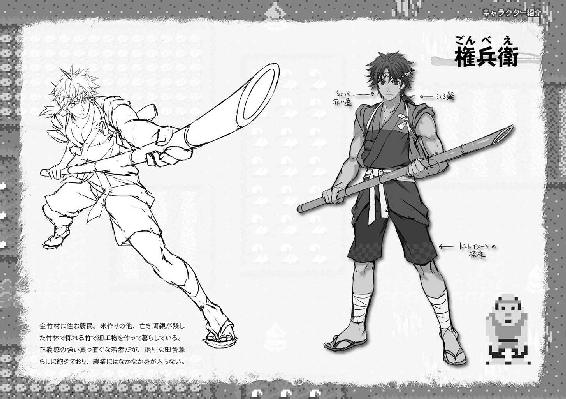
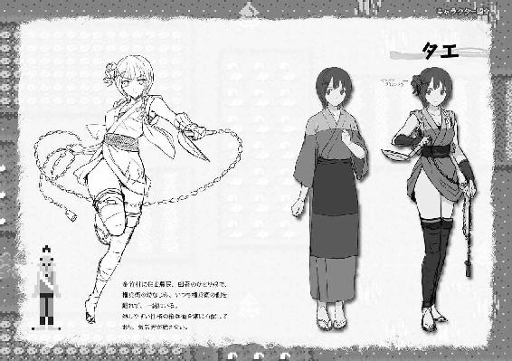
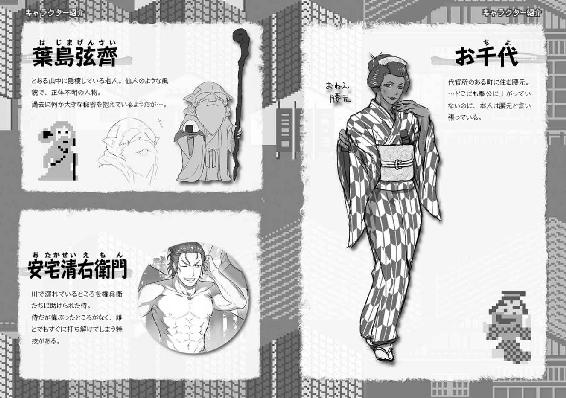
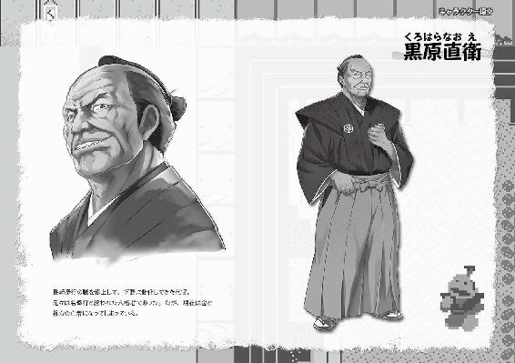
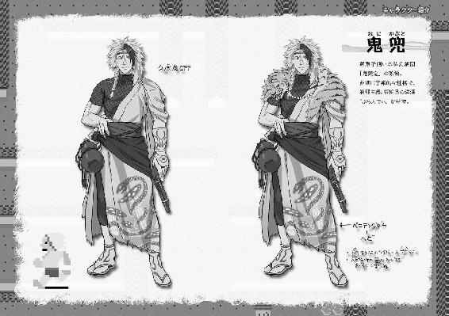
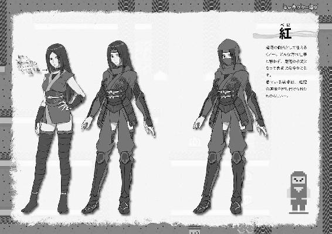
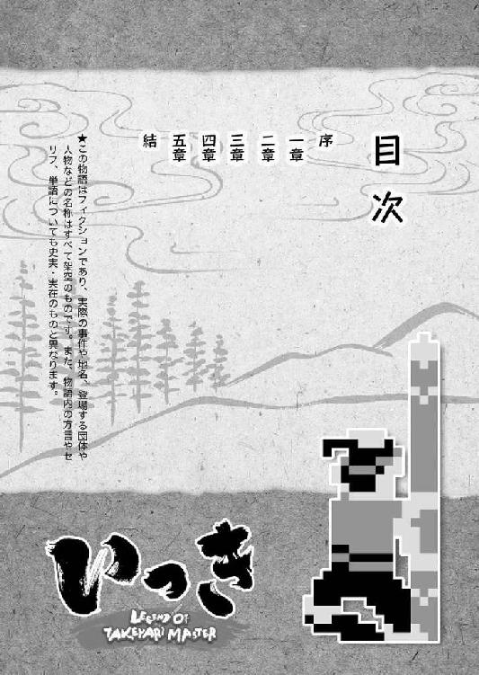
★この物語はフィクションであり、実際の事件や地名、登場する団体や人物などの名称はすべて架空のものです。また、物語内の方言やセリフ、単語についても史実・実在のものと異なります。
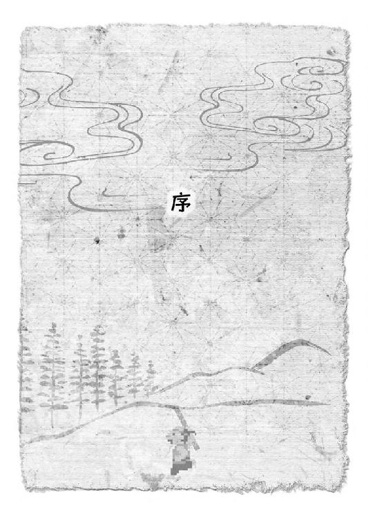
「賊は、出島にある蔵に潜んでいるようです」
吉報であった。
三月にわたる長崎奉行所をあげての探索が実を結んだのである。吉報と言うほかない。 が、黒原直衛はその報告を手放しで喜べなかった。
黒原は、長崎奉行の職にある。この地の治安を守ることを、江戸にいる将軍から一任されている。
そんな黒原が、急ぎ駆けつけた部下からの報告を喜べないのには、理由があった。
父が、昨晩急死していた。
黒原は、悲しみの中で通夜の準備に取りかかっていたのだった。
「旦那様......」
父の代から家に仕えている老武士が、心配そうに黒原を見上げた。
その老武士と、報告に訪れた若い同心とを、黒原は交互に見比べた。
同心の肩が、大きく上下している。奉行所からこの役宅（役職者が住むために設けられた屋敷）までの道を一気に走り通して来たのだろう。
長崎は、坂ばかりの土地である。いくら若く体力があるとはいえ、楽な道のりではなかったに違いない。その苦労を水の泡とするわけにはいかない。
「奉行所へ参る」
黒原は、そばに控えたままの老武士に告げた。
「かしこまりました。すぐにお支度を」
万事心得た様子で、老武士が答えた。
「私事を優先してお役目を怠るとは何事か......。きっと、大殿様でしたらそう仰ることでしょう。どうぞ、後のことはご心配なく」
実はまだわずかに迷いのあった黒原だったが、老武士の言葉が背を押した。「うむ」と、黒原は一度大きくうなずいた。
しばらくして、
「では、後は任せる。......行くぞ」
家人たちが通夜の支度を進める中で慌ただしくなってきた表を避けて、裏口から風のように飛び出して行く黒原の姿があった。
徒歩である。供の者は、先程の同心ただひとり。
とても奉行と呼ばれる身分の者が出仕する姿には見えないが、黒原は江戸からこの地に赴任して以降、ずっとこうしたやり方を貫いていた。
馬の支度だ、お供の行列だ。やれ着るものはこうで、持ち物はこれで──何から何まで形式ばって、無駄なことに手間はかけない。
それよりも、こうして直に自分の足で町を駆け、下の者と良く交わり、汗を流す......。
それが、黒原のやり方だった。
「出島か。立ち入り禁止の場所によくもぬけぬけと」
今日もまた、いつものように奉行所へ続く道を自慢の足を飛ばしながら、黒原は言った。
「おとなしく法を守ってくれる連中ならば、賊などとは呼ばれますまい」
気安い調子で、同心が答えた。
「それもそうだ。して、どういう流れで隠れ家がそこだと知れた？」
ははっ、と笑って黒原は尋ねた。
「賊が派手に仕事をし始める少し前、南蛮船の船乗りどもが酔って喧嘩をした挙げ句、蔵のひとつに火までつけた一件、お奉行も覚えておいでかと」
「うむ。......なるほど、読めたぞ。その蔵が焼け落ちた後、建て直しを請け負った赤松屋が一枚噛んでいたか」
「さすがお奉行。ですが......」
「ですが？」
「一枚噛んでいたどころの話ではありません。その赤松屋の二代目で吉助というのが、抜け荷（密貿易のこと）一味の元締めだったのです」
「そうなると、そもそも蔵が焼けた一件も、吉助一味の描いた絵図の内のようにも思えてくるな」
「市中に出回る抜け荷の数々。あれほど大量の品をどこに隠していたのか、ようやく謎が解けました」
同心の言葉にうなずいて、黒原は更に足を速めた。
すぐに、立山の東役所、俗に言う長崎奉行所の建物が見えてくる。
門をくぐれば、そこでは鉢金に鎖かたびらで完全武装した与力や同心らが、捕物の準備を整え、黒原の出仕を今か今かと待ちわびていた。
黒原自身も、厚手の火事羽織に野袴という、荒事も辞さない出で立ちである。
「......皆がこの三ヶ月、不眠不休で探索に走り回ってくれた苦労が報われる時が来た」
居並ぶ部下たちを前に、黒原は良く通る声を張り上げた。
「ご禁制の抜け荷を闇で売りさばく悪党どもを、これ以上のさばらせはせぬ。探索の最中に奴らの手にかかった仲間の仇討ちでもあるゆえ、今日はわしも同行する！」
そこかしこから、「おお」というどよめきが起きた。
黒原は続ける。
「......だが、ひとつ言っておく。一味の者がどれほど激しく手向かっても、決して殺してはならぬ。我らの目的は、奴らを奉行所の白州に引きずり出すこと。お上が定めた法をもって裁いてこそ、我らは民の信頼を得ることができるのだ。このこと、忘れるな」
おう！ おう！ と、どよめきが力強い相づちに変わった。
「良し、では皆の者、わしに続け！」
おう！ おう！ おう！
奉行所中が、揺れた。
二刻（約四時間）ほど後......。
とっぷりと夜も暮れ、戌の刻（午後八時頃）を回ろうかという時刻に黒原は役宅に戻ってきた。
出て行った時は裏口からであったが、帰りは表門を堂々とくぐっての帰宅であった。
が、出迎えた家人たち、そして黒原の父を悼んで訪れた何十人という弔問客たちは、遺体を納めた棺のある広間に現れた黒原の姿を見て仰天した。
「書状......書状の用意じゃ！」
戻るなり、黒原は大声を張り上げた。
待たせていた弔問客らへの詫びも挨拶もなく、いきなりである。
その横柄な物言いもさることながら、弔問客の目を釘付けにしたのは、黒原が手に提げている物であった。
何と、血染めの大刀である。それも、抜き身で。
赤黒い血曇りがべっとりと刀身全体を覆い、恐ろしいことに切っ先からはまだ乾いていない血が一滴、二滴と畳に雫となって零れている。
また、着ている火事羽織にも返り血の痕が玉となって残っていた。
あまりにも凄惨な黒原の姿に、誰もが言葉も忘れて立ち尽くしていると、
「だ、旦那様。これは、一体何事が......」
奥から進み出てきたのは、黒原を見送ったあの老武士であった。
震える声を何とか抑え込んで尋ねるのに、黒原は、
「お上に逆らう無法の輩を斬って捨てただけのこと。驚くには値せぬ。当然の報いだ」
血走った目で、笑うように言ったのだった。
「き、斬って......。そ、それは、旦那様自らお手を」
「そうだ。奴らめ、売りさばいた抜け荷でこしらえた千両箱を蔵に畳の如く敷き詰め、その上に新たなご禁制の品々を山と並べておった。......まあ、そんなことは今はどうでもよい。とにかく書状じゃ。それと早馬！ 早馬も仕立てい！」
「お、お待ちください旦那様。いかに急ぎの御用といえど、今は......。既にお客様も大勢、ご焼香にいらしておりますれば」
声も振る舞いも、さながらいきり立った荒馬の如き様子の黒原を、老武士が必死になってなだめる。
が、
「親父の通夜などいつでも出せる！」
黒原はその場で老武士を怒鳴りつけ、土埃で汚れた足袋で畳を踏み鳴らした。
そればかりか、おぞましい血刀の切っ先を老武士の眼前に突きつける始末。
もはや、正気の沙汰ではなかった。
「ひい！ た、ただ今！」
事情はどうあれ、逆らえば何をしでかすかわからない......。
その恐怖が、老武士を突き動かした。
「皆様、ご無礼を！ ご無礼を！」
唖然としてやり取りを見守っていた弔問客たちを押し退けるようにして、老武士が屋敷の奥へと走った。
「早馬は江戸じゃ。江戸へ向かわせる。江戸城のご老中宛てに書状をしたためたら、すぐにでも出立させるぞ。急げよ！」
その背中にまた大声を投げてから、ようやくそこで黒原は居並ぶ弔問客たちの姿に気付いた様子で、
「お騒がせ致した。それがし、まだ公務の途中にてここで失礼する。が、皆様はどうぞゆるりとくつろいでいかれよ」
と、およそ通夜の席で発するものとは思えぬ言葉で、更に皆を困惑させた。
かと思えば、安置された棺をちらりと横目で見やり、
「父上は良い時に亡くなられた」
──笑った。
確かに、棺を見て笑みを浮かべたのである。
そして、そのまま本当に弔問客らをその場に捨て置いて、老武士の後を追うようにして姿を消してしまったのだった。
無論、このような有様では到底まともに通夜などできようはずもない。
ある者は黒原の無礼さに激しく憤慨し、またある者は、普段の黒原とは別人のような振る舞いに首を捻りながら、弔問客たちは黒原の役宅を後にせざるを得なかった。
それから時は過ぎ、五年後。
長崎をはるか遠く離れた、下野（現在の栃木県）の地。そこに、黒原の姿はあった。
下野には、東山道の宿場町をはじめ、大小合わせて二五〇あまりの町や村がある。
そのすべてを、江戸の将軍に成り代わって統治する代官所の代官──それが、長崎からはるばるやって来た黒原の、新たな役職であった。
そんな黒原が支配する村のひとつに、北を陸奥は磐城（福島県）、西を上野（群馬県）の国境と接する山あいの村があった。
物語は、黒原が代官として下野にやって来てから更に五年後。
決して豊かとは言えない田畑を懸命に耕し、村人全員が身を寄せ合って暮らしている、その小さな村から始まる......。
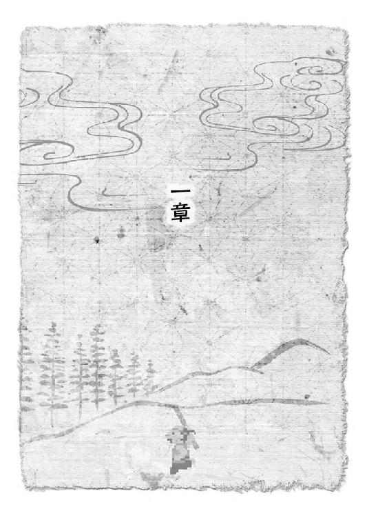
村の名は、金竹村という。
北と西とを、磐城の七ヶ岳や駒ヶ岳に連なる急な山々に阻まれ、並の足ではその先に行くことなど到底かなわない、言ってみれば「どん詰まり」の村であった。
わずかに開けた南と東から名前ばかりの街道へ抜けたとしても、代官所のある真岡の町までは二五里以上（約一〇〇キロ）は歩かねばならない。
ひと口に二五里と言っても、歩きやすく整備され、平坦な街道を行くのであっても三日はかかるところを、険しい難所ばかりの山道を行くのである。
その上、ろくに橋も掛かっていないような川をいくつも渡るのであるから、ざっと見積もっても七日。下手をすれば一〇日という旅になる。
近くには、平家の落人がかつて隠れ住んだ里がある......などという伝説が、古くからまことしやかに語られるのも無理はないという立地であった。
そんな金竹村の一角に、不思議な場所があった。
竹林である。
そんなものなら山あいの村にならどこにでもあると思われるだろうが、この村のそれは少々趣が異なる。
村の北はずれ、山に分け入る一歩手前。田んぼにも畑にもできない石ばかりの荒れ野の中、そこだけ丸く切り取ったように青々とした竹林が存在しているのだ。
文字どおりの綺麗な円形である。直径で言うなら、およそ一町と半分（約一六〇メートル）。その円の外には、一本も踏み出していないのである。
鳥の目を借りて空からその竹林を見てみれば、花を盆などに生ける時に使う剣山のすこぶる大きいやつが、荒れ地にぽこんと転がっているように見えることだろう。
竹林の形を見て取ったところで、鳥の目をぐっと地上へと寄せてみる。
びっしりと密生した剣山の針にあたる竹をかき分け、下へ下へ。
と、丸い竹林の真ん中あたりで、若い男がひとり竹を切っているのが見えてくる。
名は、権兵衛。
年は、今年の春で一七。金竹村に住む農民であった。
その権兵衛、鉈を振るう手つきも若いながら堂に入ったもので、先ほどから竹林にはカン、カンという規則正しい音がこだましていた。
権兵衛の足下には、それまでに切り出したものだろう、人の背丈ほどに揃えられた竹が転がっている。数えて、四本。そして、五本目。これも自分の目の高さよりちょっと上のところまで成長した若竹を切り倒したところで、鉈の音が止まった。
「これは、いい節をしてるなぁ」
最後に切り倒した竹を拾い上げ、じっと目の前で眺めながら、権兵衛はつぶやいた。
いいと言ったのは、竹の節の詰まり具合のことだった。
物干し竿に使う物よりわずかに太いその青竹の節は、見れば節と節との間隔がとても狭くて数も多い。ごく普通の竹と比べて、倍はあろう。
足下に転がっている他の四本も、やはり同じように節の間隔が狭かった。
その中でも、今、権兵衛が手にしている一本は、外に張り出す節の膨らみも均一で美しく整っている。
しばしの間、竹をためつすがめつして、権兵衛はどこか満足そうな表情を浮かべた。
その後、何かの具合でも確かめるように、切り出した竹を雑巾でも絞るような手つきでぐいぐいとしごき始めた。
と、その時だった。不意に、竹林を吹き抜けていく風の音が変わった。
さやさやとした葉擦れの音に混ざって、甲高く風を切り裂くような音が権兵衛の耳に飛び込んで来たのである。次の瞬間、
「──ッ！」
わずかに腹の底へ力を溜めるような息づかいとともに、権兵衛の体が浮いた。
竹竿の上の方を両手で握りしめて地面に力一杯突き立てたかと思うと、まるで風に泳ぐ鯉のぼりのように地面と水平に持ち上がり、そのまま動かない。
尋常ならざる膂力である。決して、筋骨隆々という体つきではないのだが、顔色ひとつ変えずにそんな離れ業をやってのける権兵衛であった。そんな権兵衛が、今の今まで足を着けていた場所を、鋭く風を切って何かが通り抜けていった。
直後、さっきまで権兵衛が鉈で立てていたのと同じような音が響く。音のした方を見やれば、大人の足ほどもある太さに成長した竹の茎に、一本の鎌が突き立っていた。
村ではどの家にも必ずある、稲刈り用の何の変哲もない鎌である。
しかし──
ひゅる、ひゅる、ひゅる。
そんな日用の道具でも、刃物は刃物。あまつさえ、それが風を切り、勢いよく回転しながら何本も吹っ飛んでくるとあれば、たまったものではない。
並の人間なら、恐怖に身をすくませているか、慌てふためいているかしているうちに、ぶすり、ぐさりと餌食になってしまうことだろう。
が、地面に突き立てただけの不安定な竹竿一本で人間鯉のぼりをやってのけたこの権兵衛、既にお察しであろうが、並ではない。
「せあっ！」
また短く発した気合いとともに、権兵衛は、両手で握った竹竿に更に両足も絡みつかせると、するすると猿が木から下りるがごとく再び地面に足を着けた。
同時に、権兵衛は立てていた竹竿の根元をわらじの踵で勢いよく蹴りつける。
びゅん、と竹特有のしなりとともに、土をまき散らしながら竹竿が跳ね上がった。
その先端に、飛んできた鎌の一本が当たってあらぬ方向へと弾き飛ばされた。弾かねば、権兵衛の眉間あたりに突き刺さっていたはずのものだ。
そうして二撃目もかわしたところで、権兵衛は竹竿を槍のように構え、宙に大きく〆の字を書くような軌道で振り回した。
それで、権兵衛の右と左から迫っていた三本目と四本目の鎌もほぼ同時にはたき落とす。最初の一撃を避けてからここまで、わずか数秒。流れるような動作であった。
都合四本、いずこからか飛来した鎌の攻撃を退けた権兵衛は、鎌が飛んできた方角をしばしじっと見つめた。
何も起こらない。
ふっ、と権兵衛の肩から力が抜けた。構えを解き、右手で首筋を揉む。
風の流れは元に戻り、葉擦れの音がまた耳に入ってくる。
「......終わりか」
小さくつぶやく。腰に挟んだ豆絞りを取って、額に浮かんだ汗の玉を拭おうとした時だった。
「いいえ、まだですよ」
背後から声がした。鈴を転がすような女の声だった。
その声を聞いた瞬間、再び権兵衛の全身が硬直した。
「た......」
何かを言いかけた権兵衛の首筋に、冷たい物が触れた。
よく研ぎ澄まされた刃物特有の金物臭さがツンと鼻に抜け、背中が粟立つ。これも、鎌の刃だった。
「はい、今権兵衛様は死にました」
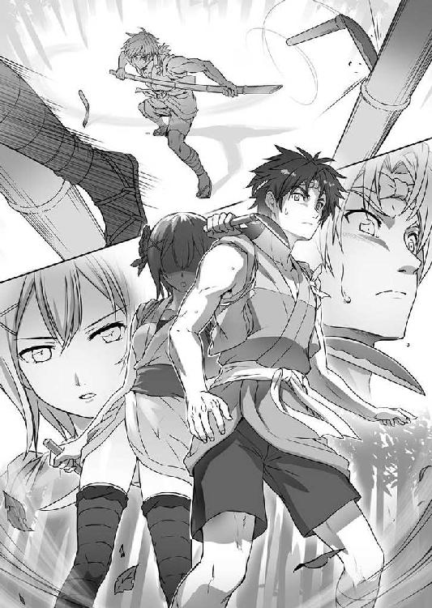
また、声がした。しかも物騒この上ない言いざまである。
「この形で権兵衛様が討ち取られるのは、もう三度目ですよ。このようなことでは、先代様も浮かばれません」
「わかった、わかったから。もういいだろ」
更に声の主が言いつのるのを遮るように、権兵衛は声を張り上げた。
のど仏が動く度に、刃物の感触がちろちろとむずがゆい。
もうほんのわずかでも力を入れれば、首の動脈をすっぱりと掻き切れる位置に押し当てられたそれを、権兵衛はゆっくりと指先でつまんだ。
「参った。降参。俺の負けだ。な？」
恐る恐る、つまんだ刃を首から離して言うと、
「ですから、そういうことではありません」
権兵衛の物言いに少し苛立ったような様子で声が応じ、さっと刃物の感触がどこかへ消えた。
ほう、と息を吐いた権兵衛が、慎重に背後を振り返った。
そこに、声の主がいた。
今の今まで、毛ほどもその気配を悟られることなく権兵衛に「死」を突きつけた者の正体は、まだ顔にあどけなさを残すひとりの少女であった。
年の頃は、権兵衛とそう変わるまい。それにもかかわらず、幼い印象を受けるのは、彼女の髪型のせいだろう。
年頃の娘らしく島田（当時の髪型の種類）に結い上げることはせず、うなじの下あたりで切ったのをそのまま垂らしているので、どこか少年のような面影すら感じさせる。
山吹色に染めた野良着の袖をまくってたすき掛けにし、裾も尻っ端折りに膝の上までたくし上げているものだから、余計にそう見える。
しかし、野良着の胸を押し上げる膨らみを見れば女であることは間違いない。
女だと思えば、高い所にある着物の裾からのぞける白い太ももが、何やら妙に艶めかしいようにも思える。
「なあ、タエ」
権兵衛が、少女の名を呼んだ。
呼びながら、少々目が泳いだのは、じっと正面から向き合うには目のやり場に困ったからである。
「はい。なんでしょう、権兵衛様」
一方、タエと呼ばれた少女は、特に自分の格好が気にかかる様子はない。さっきまで権兵衛の首筋に押し当てていた鎌の柄をくるくると器用に回して玩びながら、あっけらかんと答えた。
タエの背丈は、権兵衛の肩口ぐらいまでしかないので、自然と権兵衛を上目遣いに見上げる形になる。
それが何だか飼い主に前足をかけてじゃれつく犬のようにも思え、権兵衛はまたも含みを持った息を吐き、言った。
「今度こそ、修練はおしまいか」
「はい。ですが、権兵衛様がお望みでしたら私はいくらでも......」
「じゃ、ちょっとそこどいてくれ」
「え？」
一瞬、タエは何を言われたのかわからないというような表情を浮かべた。
説明するのももどかしく思え、権兵衛は黙ってタエの肩に手を置くと、そっと脇へと押し退けた。
「な、何ですか急に」
わずかにたたらを踏んだタエが、戸惑った声を出した。
権兵衛は、タエの立っていた場所を黙って指さす。
「あ......」
権兵衛が指した場所を見たタエが、何かに気付いた様子で口元を手で覆った。
それは、わずかに地面を割って顔をのぞかせた竹の穂先──要は、筍の先っぽだった。
「こいつの兄弟だな」
手にしたままだった竹竿をちょいと振りながら、権兵衛は言った。
「兄弟......ですか？」
「うん。これ、きれいに育ってると思わないか？ 真っ直ぐで、節の具合も良くて」
首を傾げて聞き返してくるタエに、権兵衛ははじめて屈託のない笑顔を向けて言った。
「そ、そうですね」
権兵衛が持った竹竿を見たタエがうなずく。が、顔はまだ訝しげなままだ。
「何本か切ってみたんだけど、この辺に生えるのはどれも他の竹より真っ直ぐで、気持ちよく伸びてるんだ。この竹林の真ん中に近いほどそうなってるってことに、最近気付いたんだよ」
「そ、そうですか」
語尾が一文字変わっただけで、タエの表情から疑念は消えない。
権兵衛は、続けた。
「タエが今、踏んづけそうになってたこいつは、俺が見たところ竹林の真ん中に一番近くて、一番若い芽なんだ。これからどんな風に伸びていくのか、気になってな」
続けながら、権兵衛はその場にしゃがみ込むと、まだまだ赤ん坊と言っていい竹の穂先の周囲に生えた雑草を摘み取り、落ち葉やら小石やらを除けていく。
それを見たタエが、ようやく権兵衛が何を言わんとしていたのかを察した様子で、
「す、すみません権兵衛様。わ、わたしちっとも気付かなくて」
顔を真っ赤にして肩を縮こまらせた。
その姿は、先ほど権兵衛の首筋に鎌の刃を押し当てていたのと同じ人間とはとても思えないものであった。
あまりの落差に、権兵衛も苦笑してやり過ごす他なく、
「別に謝ることじゃない。俺が勝手に気にかけてるだけだ」
ばつが悪そうに言って、ついでに切り出したままになっていた竹を拾い集めてから立ち上がった。
「さて、そろそろ日も暮れるし帰るとするか」
集めた竹をまとめて肩に担ぎ上げ、権兵衛は言った。
竹林から村へ続いている細い一本道に、駒ヶ岳の峰にかかった夕陽が柔らかく落ちかかっている。
陽を受けて白く光って見える道端の小石を、つま先で蹴飛ばしながら、権兵衛はその道をのんびりとした足取りで歩いていた。
きっかり三歩後ろに、タエが続いている。
今のタエは、たすき掛けも尻っ端折りも解いてごくありふれた村娘らしい格好に戻っていた。
「そろそろ、刈り入れの季節ですね」
タエが、先を行く権兵衛の背中に声をかけた。
「ん？ ......ああ」
時折、肩の上でばらけそうになる五本の竹竿を担ぎ直しながら、権兵衛はぼんやりとうなずいた。
「そうか。明日は、田吾さんの仕事手伝わないとな」
「本当ですか？ 良かった。おっ父、最近腰が痛むみたいで。権兵衛様に手伝っていただければ助かります」
「......うん」
会話が弾むでもなし、かと言って気まずく黙り込むでもなし。
どこか微妙でよそよそしい空気の漂う中、ふたりは連れだって暮れかけの田舎道を歩いていく。
やがて、うねうねとした曲がり道の両端に沿うようにぽつりぽつりと茅葺きの屋根が見えてくる。雑草と石ころばかりの荒れ野が、黄金の穂を揺らす水田の風景に変わっていく。
と、そこで権兵衛は足を止めた。
何事かと逆に足を速めて追いついたタエが権兵衛の隣に並んだところで、ついと伸びた権兵衛の右手がタエの左手を取り、体を引き寄せた。
「あっ」
急の出来事にタエの頬が微かに染まる。が、それも束の間、
「シノ婆がいる」
素早く耳打ちするように言って、権兵衛はタエの顔を見ることなく体を離した。
権兵衛の視線の先には、腰の曲がった老婆の姿があった。村の住人だ。
「......はい」
小さくうなずいたタエが、小走りに老婆の方へと駆け寄っていく。
「シノ婆、こったらとこで散歩け」
そのまま、明るい声をかける。
それで、タエと権兵衛に気付いた老婆が、ゆっくりとした動作でこちらを向いた。
「おんやあ、タエちゃん」
皺の中に半ば埋もれた目を細め、老婆が笑った。
「なあんだい、今日も権べと一緒かい。相変わらず、仲がええったら」
「か、からかわんでけろ。そこの竹林で、青竹さ切るの手伝ってただけだぁ」
歯の無い口でもごもごと老婆が言うのに、タエは大きくかぶりを振った。
それを見た老婆が、ひひっとまた笑って、今度は権兵衛を見た。
「権べよぉ。アンタももう、嫁こもらってもええ年だ。あんまりタエちゃん待たせたら、かわいそうだど」
「シ、シノ婆！ 怒っど！」
老婆の言葉に慌てふためいたタエが、ぷうっと頬を膨らませて言った。
「その辺にしといてくんろ。あんまりそうやってタエのことからかうと、後でヘソ曲げられてかなわね。そんで、何でかおらがどやされんだ」
本音である。さすがにこれ以上は危ない。権兵衛はタエに助け船を出して、
「......んなことより、ほんとに散歩でもしとったのけ。じーっと田んぼの方さ見てたけんども、そろそろ日が暮れっど」
やや強引に話題を変えた。
と、それまでにこにこと温かな眼差しでふたりを見つめていた老婆の表情が、にわかに曇ったものになった。
「いんや、散歩でねぇ。権べの言うとおり、田んぼさ見とった」
「田んぼに何かあっただか」
権兵衛が訊ねると、
「みーんな、空籾なんだぁ」
揺れる稲穂を見やって、老婆が言った。
「空籾だぁ？」
「んだ。権ベもよっく見てみぃ。夏も終わってんのによ、稲の穂が立ちすぎだぁ。色ばっかは黄金できれーでもよ、中身が入ってねぇじゃ何にもならねぇ」
言われて、改めて見てみると、確かに老婆の言うとおりであった。
さっきタエも言っていたように、時節的にはそろそろ米の収穫期である。本来なら、この時期の稲は実りの重みで頭を垂れるというのが普通だった。
ところが、今目の前で揺れる稲穂の多くは、真っ直ぐ天に向かって伸びている。
つまり、色は良くてもそれだけで中身は空っぽということだ。
「......んだな」
「何を他人事みてぇに。うちの田んぼだけじゃねぇど。権べんとこも、タエちゃんとこも、全部一緒だで」
老婆が、重いため息をついた。
「権ベはよ、そうやって切った竹さ細工して銭ばこさえられっからいいけどよぉ......」
言いかけ、慌てて老婆は「いけね」と首を振った。
「嫌味さ言うつもりはねんだ。けどなぁ、風の噂じゃお代官様が年貢の高を上げるなんて無体な話も聞こえてくっだろ。んで、ついつい気が滅入っちまってなぁ」
すまねぇ、すまねぇと頭を下げて老婆が立ち去っていくのを、権兵衛もタエも言葉もなく見送るしかなかった。
そうこうしているうちに、「秋の日はつるべ落とし」と言うように、すっかり陽は山の向こうに落ちかかっている。
老婆の他には外を出歩く人影もなく、村はひっそりとして見えた。
何とも言えぬ気持ちで顔を見合わせた権兵衛とタエも、急速に深まる闇に追い立てられるようにして家路を急ぐこととなった。
ふたりの家は、村の中心から少し外れた所に二軒並んで建っていた。
家の大きさとしては、権兵衛の家の方が大きく造りもしっかりとしている。
が、権兵衛は自分の家には向かうことなく、迷わずタエの家の戸を開けた。
「田吾さん、今戻った」
「おっ父、ただいま」
ふたり揃って戸をくぐり、奥へ声をかけると、中から現れたのはひょろりと背が高く、彫りの深い顔つきをした中年の男だった。
男はタエの父で、田吾という。
「権兵衛様、お戻りが遅いので心配しました」
わらじを脱いで家に上がった権兵衛を、田吾はまるで主君に仕える家来のような恭しさで出迎えた。
当然のように座布団を敷いた上座に権兵衛を促すと、自分は小さな囲炉裏を挟んだ下座に回り、板敷きの冷たい床に大きな体を縮めるようにして座った。
その様子を、半ば諦めたような表情で見やりつつ、権兵衛はあえて悠然とした仕草で勧められた上座に腰を下ろした。
「そこの道端で、シノ婆さんに会ったんだ。少し話していたら、遅くなった」
「左様でございますか」
手ずから囲炉裏の鉄瓶を取って番茶を淹れながら、田吾がうなずいた。
タエはと言えば、居間には上がらずに台所へ向かったようだった。夕餉の支度にかかったのだろう、包丁で何かを切る音が微かに聞こえてくる。
「なあ、田吾さん」
湯呑みを受け取った権兵衛が、口を開いた。
「今年の米は、不作なのか？」
問われた田吾が、権兵衛の表情をうかがうようにした。
「ご存知ありませんでしたか」
何を今更、とでも言わんばかりの田吾の口ぶりに、権兵衛の眉根がわずかに寄る。
「権兵衛様は、あまり野良仕事には熱心でありませんからな」
茶化しているのか、嘆いているのか、田吾がふっと唇の端だけを持ち上げた。
「......それは」
「仰るとおり、不作ですな」
反論しようとした権兵衛の機先を制すように田吾が言った。
「去年の六割......いや、半分も穫れれば良い方でしょう。村の者らは皆、頭を抱えておりますよ。とにかく、夏が暑すぎた」
「半分......」
想像していた以上の不作ぶりに、権兵衛は唸った。
「そんな状況だというのに、代官は年貢を上げるって言うのか？」
「シノ婆からお聞きになりましたか。まだ正式に触れが出たわけではないようですが、元蔵どんが倅の三郎さんを連れて、代官所に事の真偽を確かめに行っております」
元蔵とは、村の名主（村のまとめ役のこと）を務める老人の名だ。
そう言えば、最近姿を見ないとは権兵衛も思っていたのだが、代官所に行っているというのは初耳であった。
「真偽の定まらぬことで村の者に余計な心配をかけぬよう、古希の祝いも兼ねて鬼怒川に湯治に行っていることになっていますからな。確か、権兵衛様には何日か前にお伝えしたはずですが......」
覚えがなかった。
そうだったかと、憮然とした面持ちで黙って茶をすする権兵衛に、田吾がややためらいがちに言った。
「野良仕事もそうですが、権兵衛様は、もう少し村のことに関心を持っていただかないと困りますな。よろしいですか、何度も申し上げているように、我らは〝草〟。草とは、まずその地に深く入り込み......」
「本当に何度目だよ、その話。死んだ親父と二人して、俺をどうしようって言うんだよ田吾さん」
今度は、権兵衛の方で田吾の言葉を遮った。
しかし、田吾は「いいえ、言わせていただきます」と引き下がらない。
「権兵衛様、あなたはいずれ我ら一党を束ねるお方。私は、亡くなられた先代にあなたの将来を託されて......」
「田吾さん」
たん、と湯呑みを床に置いて、権兵衛はもう一度強い調子で言った。
「我ら一党って......もう俺たち三人だけなんだろ？ それを今更、束ねるもへったくれもないだろうよ」
「将来を託された、と申し上げました」
噛んで含めるように、田吾が繰り返す。その目が、一瞬自分から離れて、台所にいるタエの方に向いたことに権兵衛は気付いた。
田吾の言う、「将来」というのが、何を意味しているのかということも。
やめてくれ......。
そう、口に出してしまいそうになるのを、権兵衛はすんでのところで飲み込んだ。
台所から、タエの足音が聞こえてきたからだ。
同時に、味噌の煮えるいい香りも漂ってきて、権兵衛と田吾の間に流れる気まずい雰囲気をわずかに和らげた。
「夕餉の支度ができましたよ」
楚々とした、きちんと行儀に則った仕草で居間に現れたタエは、まず囲炉裏の鉄瓶を汁の入った鍋に掛け替えると、父である田吾よりも先に権兵衛のために膳を整えた。
所々、塗りが剥げているものの、しっかりとした足付きの膳である。一方、田吾とタエ自身の前に置かれたのは、足のない平盆だった。
乗っているのは、少しの米に稗と粟を混ぜて炊いた雑炊に、大根の味噌汁、ささがきにしたゴボウを菜種油で炒めたきんぴら。それに、権兵衛の膳にだけはもう一品、里芋を煮たのが乗っている。
「温かいうちにどうぞ」
タエが言うのもあって、権兵衛と田吾の会話も一旦立ち消えになって、夕餉となった。
「うまい」
まず、汁をひと口すすって、権兵衛は言った。
瞬間、花が開くようにタエの顔が綻んだ。
「たくさん召し上がってくださいね」
それからも、タエは田吾の面倒はそこそこに、やれお代わりはどうだの、やれ頬に飯粒がついているだの、かいがいしく権兵衛の世話を焼くのだった。
田吾も、それまで苦言を呈していたのも忘れたかのように、そんなふたりのことをにこやかに見守っている。
タエの料理は、どれもうまかった。
食事の間だけは、他愛のない世間話で会話も弾み、穏やかな時間が流れた。
それでも、食事が終わったところで、
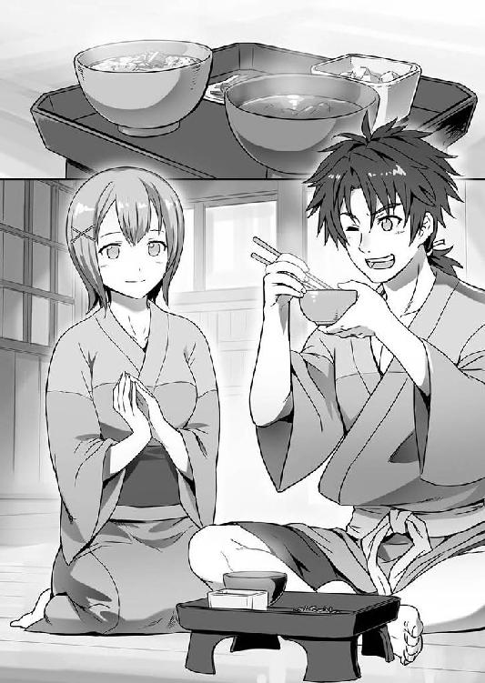
「ご馳走様。......それじゃ、俺はこれで」
必要以上にその穏やかさに包まれるのを拒むかのように、権兵衛は暇を告げた。
「もう少し、ゆっくりしていってくださっても」
入口の戸に立てかけてあった竹竿を抱えて外に出たところで、タエが後を追ってきた。
「明日は稲刈りの手伝いだ。今夜のうちに、これを油抜きして晒しにしておかないと」
権兵衛は言った。
「なら、私もお手伝いします。すぐ準備しますから」
間髪入れずにタエが答え、くるりと踵を返す。
「タエ」
その背中に、権兵衛は声をかけた。
「はい」
暗がりの中、きょとんとした様子でタエがもう一度権兵衛の方を見た。
「なあ、タエ。少し聞いてもいいか」
先ほど、田吾と話している時から胸にあった思いを、権兵衛は口にした。
「もちろんです。私でお答えできることなら」
屈託なく言うタエに、わずかな苛立ちにも似たものを感じながら、権兵衛は続ける。
「タエには、何かやりたいこととかないのか？ ......その......夢、とかさ」
「夢......ですか？」
「ああ。ずっとこの村で、本当かどうか定かでもない先祖代々の使命なんてものを守って、ひっそり暮らしていくだけで満足か？」
そこまで言ってから、権兵衛は詮無いことを聞いてしまったと後悔した。
権兵衛には、タエがこの問いにどう答えるのか、ほぼ正確に予想がついていた......いや、わかっていたからだ。
果たして、
「私は、権兵衛様のお側にずっといられれば、それだけで十分です」
タエは、権兵衛の想像と一言一句違わぬ言葉で答えるのだった。
「権兵衛様とずっと一緒にいることが、私の夢です」
そう、タエは言い切った。その後で、
「権兵衛様には、何か夢がおありなんですか？」
何の気なしに笑って聞き返してくる。それも、権兵衛の予想の内にあるものだった。
が、
「俺は......」
タエの問いに対して明確に答える言葉を、権兵衛は持ち合わせていなかった。それもあって、タエに最初に訊ねたことを権兵衛は後悔したのだった。
「......秘密だ」
こみ上げる苦いものを飲み下し、権兵衛は作り笑顔でごまかした。
「まあ、人には聞いておいてご自分は秘密ですか。意地悪ですね」
そんな権兵衛の内心を知ってか知らずか、タエがおどけた声で笑った。
「それじゃ、おっ父に先に寝るように伝えてきますから。ちゃんと待っていてくださいね」
笑顔を浮かべたまま、タエが家に戻っていく。
タエの姿が完全に見えなくなってから、権兵衛は、胸に溜まった澱を吐き出すように長く息をついてから、すっかり日の落ちた夜空を見上げた。
暗い、新月の夜であった。
切ってきたままの青竹を火で炙ると、表面にじんわりと竹に含まれる油分が染み出してくる。
この油分を、汚れと一緒に布で丹念に拭き取る。そしてまた、火に当てる。また拭く。 数回繰り返しているうちに、竹の青みが抜け茶褐色の地が表に出てくる。
竹は熱すれば柔らかくなるので、拭きの作業と同時に曲がりをしっかりと矯正してより真っ直ぐにしてやる。
こうして油を抜いた物を今度は天日に晒して乾燥させてやれば、更に余計な水分も抜けて、青竹のままの時と比べて何倍もの強度と粘りを持つようになる。
日用品に加工して良し、細工物にして良し、何年も風雪に耐える生け垣などに使ってもいい晒し竹ができ上がる。
じめじめとした夏が終わり、かつ冬ほど日が短くない今の季節は、丈夫で質の良い晒し竹を作るのには丁度良い時期であった。
昨晩、タエに手伝ってもらいながら油抜きをした竹竿を、良く晴れた秋空の下に並べ終えた権兵衛は、自分の胸の内に眠る思いとは裏腹に、一仕事終えた後の心地よい脱力感に包まれていた。
と、その時であった。
「権ベよぉ、そったらのんびり竹さ干しとる場合じゃねぇぞ！」
裏に住んでいる仙太という若い農民が、いきなり家から飛び出してきたかと思うと、何かえらく慌てた様子で権兵衛に声をかけてきた。
その間も仙太の足は止まらず、権兵衛の家の前を一息に駆け抜け、凄い勢いで村の中心へと走って行く。
何があったのかと聞き返す間もなく仙太が行ってしまったものだから、権兵衛も仕方なくその後を追った。
先を行く仙太の頭越しにその向こうを見ると、ちょうど名主である元蔵の家の辺りに人垣ができ上がっているのがわかった。
「いったい、どうしただ。こーんな朝っぱらから、みんなして名主さんのとこさ押しかけてよぉ」
群がっている村人のひとり、おはつという名の中年の女をつかまえて、権兵衛が聞くと、「ああ、権ベさか。いやな、どうしたもこうしたも、今朝んなって出かけてた名主さんが帰ってきたんだぁ」
「名主さんが？ ......古希の祝いに湯治さ行ってるて話は聞いてたども、それがどうしてこったら騒ぎになるだ？」
そういうことになっていると、昨夜田吾から聞かされたのを思い出し、権兵衛は言った。「それがよぉ」
権兵衛に水を向けられたおはつが、声と同時に薄い眉もひそめて権兵衛を見る。
「名主さん、本当は湯治になんか行ってねかったんだと。二五里も南の代官所まで行ってよ、お代官様に年貢さ軽くしてもらえんかどうか、おねげぇにあがったって」
「ほんとけ？」
おはつの言葉に、権兵衛はさも驚いたという風に合わせてみせた。
「んだ。でよ、そんで帰ってきたと思ったら、名主さん何でかケガさしてるって言うでねぇか。そんで、ばーっと話さ村に広まってよ」
この騒ぎ、というわけだ。
なるほどと、権兵衛がひとり合点していると、
「どいてけれ、どいてけれ！」
「おっ父が、薬さ持ってきただ。通してけれ」
権兵衛が駆けつけてからも増える一方だった人垣の外側から、田吾とタエの声がした。
「田吾どんが薬さ持ってきたと。通してやれ、通してやれ」
人垣のどこからかそんな声があがり、ちょうど権兵衛の立っていたところで、ばっと左右に人垣が割れた。
「田吾さん、タエ！」
割れたところから、ひょっこりと顔を出したふたりに、権兵衛は声をかけた。
「ああ、権ベさ」
まず気付いたタエが、さっと権兵衛に駆け寄ってくる。
「もう来てただか」
「お、おう。竹竿さ干しとったら、仙太が教えてくれただ」
わざとらしく息を弾ませ、肩を揺らしながらタエが言うのに権兵衛が答えたところで、「タエ、話は後にしろ。......権ベ、わりぃけんどお前もちっと手伝ってけれ」
田吾が、権兵衛にだけ通じる微妙な目配せをして言った。
「わ、わかっただ」
促され、元蔵の家に上がったところで、権兵衛は言葉を失った。
ケガをしたと言っても、帰りの山道で足をくじいたとか、そういう類の話だと思っていたのだが、床について苦しそうに唸っている元蔵は、ろくに目も開かぬほどに顔が腫れ上がっていたのだ。
とても、道で転んだりどこかにぶつけたぐらいでは、こんな顔にはならない。
何者かに激しい暴行を受けたのは誰の目にも明らかだった。
「代官所の連中にやられただ」
元蔵に付き添って共に代官所まで行っていた、息子で三郎というのが、元蔵の枕元で握り拳を震わせながら言った。
「あいつら、親父がお代官様へのお取り次ぎを頼んでも、帰れ帰れの一点張りで......。親父は土下座までして粘っただども、そうしたらいきなり足蹴にしやがって。そっから......」
元蔵の息子と言っても、年は田吾と同年代である。
そんな大の男が、人目も憚らずに悔し泣きするのだから、よっぽどのことである。
「ひどい......」
そばで聞いていたタエが、口を手で覆って目を伏せた。
「とにかく、手当だ。田吾さん、薬さ持って来たんだべ」
何とか気を取り直した権兵衛は、薬箱を抱えたままこれも言葉もなく棒立ちになっていた田吾の脇をつついた。
「あ、ああ。そうだった。タエ、台所さ借りて湯を沸かしてこい。薬ば塗る前に、顔に溜まった血ぃを抜かねぇと」
それで我に返った田吾が、素早く指示を出した。すぐにタエが台所にすっ飛んでいく。 ほどなく湯が沸いた。ぐらぐらと煮立った鍋が運ばれてきて、その中に田吾が持って来ていた小刀を放り込む。しばらく煮てから火箸で取り出し、
「権ベ、三郎どん。名主さんが暴れんようにしっかり押さえといてけれ」
小刀の具合を確かめながら、切羽詰まった声で言う。
「そ、そんなもん使って何するだ」
三郎が、青ざめた顔で言った。
「血を抜くって言ったべ。これで、ぱんぱんに腫れてるところさ切って、中に溜まっちまってる腐りかけの血を外に出すだ」
「き、切る!? 親父の顔をか」
「切るったって、皮んとこちょっとだけだ。だども、痛みで名主さんが暴れたら、手元が狂って余計なとこ切ってまうかもしんねぇ。だから押さえとけつーてんだ。わかったか！」
うろたえる三郎に、田吾が強い口調で言った。
有無を言わせぬその迫力に、三郎はがくがくと何度もうなずき、既に腹を決めて控えている権兵衛とともに、元蔵をがっちりと押さえ込む。
「親父、ちっとの辛抱だど。こらえてけれ」
祈るような三郎の声を合図に、元蔵の頭の方へ回り込んでいた田吾が、腫れ上がった元蔵の顔に小刀の刃を当てた。
ついと引いたところで、ぷつっと血の玉が浮かんだかと思うと、次の瞬間、どす黒い血しぶきが天井の梁にまで飛び散った。
「ひいいっ！」
たまらず三郎が悲鳴を上げて腰を抜かしそうになるのを、
「しっかりするだ！ 痛ぇのは三郎さんじゃなくて、名主さんだべ！」
権兵衛は大声で怒鳴りつけた。
「タエ！ 膏薬を油紙に塗ってこっちによこせ！」
そこにまた、田吾の怒号のような声が飛ぶ。
「今やってる！」
タエも叫ぶ。
壮絶な修羅場になった。家の玄関は、権兵衛たちが上がった時に開け放たれたままになっている。表に集まった村人たちも、生きた心地がしなかったことだろう。
結局、顔を四ヶ所も切って血を抜き、他にも全身に負っていた擦り傷や打ち身の手当をすべて終えた時には、時刻はもうすっかり昼を回っていた。
「ありがてぇ、ありがてぇ......。田吾さんも、権ベも、タエちゃんも、親父のために」
ようやく静けさを取り戻した部屋で、今度は安堵と感謝の涙がこみ上げてきたらしく、三郎がまた男泣きに泣いた。
もう一安心だということで部屋に招き入れられた三郎の嫁と子らも、まるで菩薩を拝むかのように何度も権兵衛たちに手を合わせるのだった。
「......にしても代官所の連中、許せねぇだ」
そんな三郎一家の様子を見て、権兵衛は、改めて怒りが沸々とわき上がってくるのを感じた。
「結局、名主さんの訴えは通らなかったんだべ？ こんな思いまでして......」
と、タエ。
それを聞いた三郎が、
「そうだった......。そのこと、村のみんなに話さしねぇと」
真っ赤になった目を擦って立ち上がった。障子を開けてふらついた足取りで出て行くのを、権兵衛たちも追う。元蔵のことは、三郎の嫁に任せておけばよい。
外に出ると、家の前には金竹村のほぼすべての村人が集まっていた。
十重二十重に家を取り巻く村人たちに、まずは元蔵が助かったということを三郎が伝えると、わっと一斉に歓喜の声があがった。
が、それも一瞬のことだった。
次に、三郎が代官所で知った年貢のことについて口にした途端、今度は一転して水を打ったように静まりかえる。
三郎が話したのは、次のようなことであった。
「親父にひでぇことされた後、やっぱりどうしても納得いかねぇって思ってよ、親父を旅籠（食事が出る旅の宿）の女将さんに任せて、次の日におらだけでもう一回代官所に行っただよ......」
そこで三郎が目にしたのは、代官所の前に立てられたお触れの札であった。
三郎は、名主の息子だけあってある程度は読み書きもできたが、漢字交じりの武家言葉で書かれたそれをすべて正確には読めず、通りがかった商家の人間に頼んで訳してもらったところによれば、
「ひとつ、今年の年貢を決めるにあたり、
領内すべての田畑について検地をやり直すこと」
検地とは、田畑の面積を測量し、そこから農産物の収穫量を予測して、年貢の高を決める作業のことを言う。それ自体は、新たな田畑が開発されればその度に行われることであるので別に珍しいものではない。
問題は、その後に書かれていたことだった。
「ひとつ、新たな検地で石高※を決した後、
年貢の割合を......八公二民にする......」
※石高......すべての農産物、海産物の生産量を米に換算したもの
「は、は、八公だぁ!?」
「そんな馬鹿げた話があってたまっか！」
消え入りそうな声で三郎がそのことを告げた時、集まった村人たちからは、文字どおりの悲鳴があがった。
それも、無理からぬことであった。
八公二民──つまり、作物全体の生産量を一〇として、その八割を年貢としてお上に差し出し、生産者たる農民たちの取り分は残りの二割とするという通達が、代官の名でなされたということだからだ。
あまりにも無体な税率であることは、言うまでもない。
この時代、税率というものは基本的にお上の考えひとつで決まるとは言え、年貢を納める農民や漁師たちが飢え死にしてしまっては元も子もない。
それはお上とてわかっているから、基本的には「四公六民」といって、少なくとも生産量の半分以上は農民たちの手元に残してやるのが常であった。税収が上がらず財政が厳しい時でも、「五公五民」と半々で手を打つ。
ところが、である。
「三年前まで五公五民。二年前で六公四民にされたばっかだど？ それが今年から八公って......むちゃくちゃでねぇか！」
三郎の報告を聞いた村人のひとりが、そう激昂したように、この金竹村を含む下野の村々は、代官の黒原が赴任して以来ずっと、非常時並みかそれ以上の税負担を強いられていたのである。
そんな高い税率であっても、着任した黒原が、前任者がなおざりにしていた様々な懸案に精力的に取り組んできたので、それほどの不満は出なかった。
物流を活発にするために街道の整備に力を入れて、宿場を発展させる。老朽化した用水路を作り直し、灌漑設備を整える。川の氾濫を止める堤を作り、天災に備える。
矢継ぎ早に政策を進めるには、金がかかるものである。
その政策が功を奏して、ここ二、三年は豊作が続いたというのもある。
しかし、今年は米の不作が避けられぬ流れであるのは、恐らく多くの村で共通しているところであろう。
ゆえに、元蔵は自ら代官所まで足を運んで村の現状を訴え、税率を下げてもらえるように頼もうとしたのだ。
それが、代官に会うことすらできなかったばかりか、理不尽に大ケガを負わされ、挙げ句にこの異常な増税を突きつけられたのだ。
「......だったら、こっちも代官の言うことなんか、おとなしく聞くことねぇ」
三郎の話が終わった時、権兵衛は、我知らず口に出していた。
その声は、決して大きなものではなかったが、村人全員の聞くところとなった。
「言うことなんか聞くことねぇって......。権ベ、おめぇ何言ってるかわかってるだか？」
村人のひとりが、天狗か河童でも見つけたような目つきで言って、権兵衛を指さした。
「じゃあ、代官の言うとおりに年貢を払うだか？ ......てかよ、払えるのか？ 大体、どこの世界に、話し合いに行った名主さんに大ケガさせられて怒らねぇ村があるよ」
その目つきが、何だか馬鹿にされているように感じて、権兵衛は思わずかっとなって村人に噛みついてしまった。
「権ベさ......」
いけないという顔になったタエが、そっと権兵衛の着物をつかんで囁くが、権兵衛はそれを乱暴に振り払った。
「少なくともよ、代官所の奴らが名主さんに謝ってよ、何がどういうわけで八公なんてふざけた年貢になんのかを説明するまで、年貢なんか納めることねぇだ」
行きがかり上、ということはあったかもしれない。それでも、権兵衛はどうにも言わずにはいられなかった。
「年貢納めねぇって、どうするつもりだべ」
「代官所の役人が、そのうちこの村にも土地を検めに来るんだろが。したら、村のみんなで追い返したったらええだ」
「追い返す？ 役人をか？」
「んだ。お侍ったって、今時はみんな腰の物なんか飾りにしてるようなのばっかだべ。おらたちが力合わせて追っ払えばよ、話は隣村、そのまた隣村に広まっていくべ。なんなら、おらが吹いて回ったっていい」
いつの間にか、村人たちの視線が権兵衛に集まっていた。元蔵の代わりに事情を説明した三郎も含めた、全員だ。
それが、妙な高揚感を権兵衛に与えた。
必要以上に口調が熱を帯び、過激になっていく自覚はあったが、止められなかった。
しまいには、大きな身振り手振りも交えて訴え始める。
その頭の中には、どういうわけだか自分でもわからなかったが、昨夜の田吾との会話や、タエとのやり取りが何度も何度も繰り返されていた。
権兵衛様には、我ら一党の将来を......。
権兵衛様には、何か夢がおありなんですか......。
夢。自分の夢。
古くさい、カビの生えた掟。使命。長い時の流れの中で風化し、かまどの煤以下の価値しかないものに縛られて生きるのは嫌だ。
俺はもっと、自分の価値を確かめられるようなことを、大きな何かをしたい。
何か。
何かって、なんだ？ ......なんだっていい、この変わりばえのしない生活が変わるなら。使うあての無い技の修練に明け暮れ、行き着く先の知れた一党の将来とやらを背負わされることのない生き方なら、俺は......。
ああ、そうか。俺は、ずっと変化を待っていたのか。
この淀んだ毎日を押し流してくれるような、激しい変化を。
「そうやって、何個も色んな村が代官の言いなりにゃならねぇってなりゃあ、代官だって考えを......」
身を乗り出し、いよいよ権兵衛の言葉に異様な熱が乗り始めた、その時だった。
「いい加減にしろ！」
ガン、と頭のてっぺんからつま先まで走り抜ける衝撃があって、権兵衛の頭の中に火花が散った。
「誠に申し訳ありませんでした。ご無礼の段、平にご容赦を」
囲炉裏の前で、額を床にこすりつけた田吾が言った。
「もういいよ。頭を上げてくれ」
まだ、田吾からもらった強烈な拳骨の感触が残る頭をさすりながら、権兵衛はすっかり萎れた声を出した。
許しを得て頭を上げた田吾が、じっと権兵衛の顔を見つめた。
「......」
きまり悪く権兵衛が目を逸らしたところで、タエが手桶の水に浸した手ぬぐいを絞って権兵衛の隣に来た。
所は変わって、またタエの家である。
「なんもわかってねぇ若造が、知った風な口きいてんでねぇ！ こんボケナスが！」
村人相手に熱っぽい演説をぶっていた権兵衛を止めたのは、田吾だった。
石より硬いのではと思える拳骨で思いっきり権兵衛の頭を殴りつけ、凄まじい剣幕で怒鳴った田吾は、
「わかってると思うけんど、みんなもこんボケの言うことなんか真に受けたらいかんど。年貢のことは、名主さんのケガが良くなったらみんなで話し合ったらええ」
突然の幕切れに呆気にとられている村人たちにそう言うと、
「来い！ おめぇがどんだけ阿呆なこと口走ったか、とっくり説教してやるだ！」
目を回している権兵衛の首根っこをむりやり引っ張って連れ帰ってきたのだった。
「おっ父も、何もいきなり殴ることはないのに......。権兵衛様、どうぞこれで冷やしてくださいまし」
タエが、絞った手ぬぐいを権兵衛の頭に乗せた。
「......田吾さんは悪くないよ。確かに、俺がどうかしてたんだ」
ひんやりとした手ぬぐいの感触で、膨れたたんこぶ以外のものも冷やされたようで、権兵衛は力なく言った。
「権兵衛様、何とぞご自重くだされ。我ら草の者は、決してその土地でおかしな目立ち方をしてはならないのです」
が、非難がましいものを隠そうともしない田吾の物言いが、せっかく冷えた権兵衛の気持ちにまた小さな火を点けてしまう。
「だったら、名主さんのことも放っておくのが筋じゃないか。三郎さん、目ぇ丸くして驚いてたぞ。医者でもない田吾さんが、あんなに手際よく手当してのけてさ。あの膏薬だって、一族に伝わってるやつなんだろ？」
「それは......」
今度は、田吾が口ごもって目を逸らすのを見て取った権兵衛は、勢いを得て言った。
「そりゃ、俺も熱くなりすぎたとは思う。そこは謝る。けど、見過ごせないものは見過ごせない。名主さんのことだって、村のことだって同じだ」
「それで、ああして村人を焚きつけたと？」
「田吾さんだって、代官のやりようは非道だって思うだろ。このまま指をくわえてていいわけないって、思わないか？」
「それとこれとは、やはり話が別です」
「田吾さん！」
「確かに、元蔵のことは私の落ち度です。権兵衛様の仰るように、見殺しにすべきだった」
「み、見殺しって......。その言い方は汚いじゃないかよ、田吾さん」
「どう思われても結構。それで権兵衛様が今一度、我ら一族一党の使命を思い出してくださるのであれば」
「思い出すも何も、忘れたことなんかないよ！ ......我ら一党、草として彼の地に深く根を張り、いついかなる時でも主君のために働けるよう忍の技を磨きおくべし」
わざと当てつけるように、権兵衛は朗々と唄うようにそらんじて見せた。
「......ならば結構」
「結構じゃない！ ......主君って誰だよ。どんな殿様だったのか知らないけど、もうずっと大昔に織田だか武田だかに滅ぼされてるんだろ！」
「いいえ。まだそのお血筋に連なる方は、西国のある藩にてご存命のはずです」
「はずですって......本気で言ってるのか？ だったら、この何十年か、せめて親父が生きている間にでも、一度だってそのご主君が何か命じてきたことがあるのかよ」
「ございません」
「だったら、向こうだってそんな何百年も前の先祖に仕えてた忍の一族のことなんて忘れてんだろう。今更、何を義理立てする必要があるんだ」
「それが、忍。草というものにございます」
取り付く島もないというのは、このことだった。
「他に何か仰りたいことは？」
「......ない」
「結構。では、少々遅くなりましたが、昼餉に致しましょう。タエ、支度を」
「最後まで、結構、結構。ニワトリかよ」
すっかりぬるくなってしまった手ぬぐいを頭からはぎ取り、権兵衛が子供じみた嫌味を言うのと同時に、昨夜と同じ味噌の香りがした。
立ち上がる気配すら権兵衛に悟らせず、いつの間にか台所に移動していたタエが、田吾がそう命じるだろうという頃合いを見て昼餉を運んできたのだった。
その、あうんの呼吸みたいなものがまた、無性に腹立たしく思えた。
権兵衛はやり場のない怒りを、苦労して汁と一緒に飲み込むことになった。
こんなにまずいと思った昼餉は、はじめてだった。
金竹村より遠く二〇余里。
下野七郡二五〇村を治める代官屋敷の一室に、ふたりの男がいた。
ひとりは、誰あろう代官の黒原直衛その人。
京の高僧の手による書と、伊万里の大皿とを飾った床の間の前で、どこぞ雄藩の大名が使うような本紫檀の脇息にでっぷりと肥えた体を預けて煙管をふかしている。
もうひとりは、まるで得体の知れない怪しげな雰囲気の男。
まず、その出で立ちが異様極まりない。
髪は髷を結っておらず、散切りの伸ばし放題。
肌に引っかけるように着流している着物は、黄蘗色。裾に染め抜かれているのは、大きく傘を開いたベニテングダケに蛇が巻き付いた、ど派手かつ奇異な柄であった。
それに鮮やかな群青の帯を締め、肩から虎の皮をかけているというのは、傾き者などと囃すのを通り越し、正気を疑われてもおかしくない。
そんな異様奇天烈な風体で、庭に面した縁側に肘枕で寝そべり、空いた方の手にした杯の中身をちびりちびりとやっている。
とても、下野七郡をお上より預かっている権力者を前にした態度ではなかった。
にもかかわらず、
「例の件、ご苦労だったな。鬼兜よ」
黒原は、にやりと唇の端を持ち上げて笑いながら、さも親しげに男の名を呼んで何らかの労をねぎらうのだった。
「なに、ちと噂話を小耳に挟んだまでよ。じきに、紅から知らせがあろうから、大船に乗った気でいりゃあいい」
鬼兜──服装同様に名前も振るっている──は、杯に残った琥珀色の液体を一気にあおって答えた。
「......この、『ぶらんでぃ』って酒は格別だな。喉から胃に落ちた後にカッと爆ぜて失せる感覚がたまらねぇ。これを好きにやらせてくれるってんなら、多少はおまけもしてやろうかって気にもならぁな。あれよ、前にお代官様が教えてくれた蘭語〝さぁべす〟ってやつだと思ってくれや」
「そんなものでよければ、樽でくれてやるわ。樽で。西洋にはな、それと同じく果物から作った酒が他にも色々あるぞ」
すぼめた口から太い紫煙を吐いて、黒原が言った。
それを聞いた鬼兜が、着物に染めた蛇のようなのったりとした動作で身を起こし、黒原に向き直った。
「さすがお代官様だ。太っ腹でいらっしゃる」
縁側に置いてあった口の広い瓶子（酒を入れ、注ぐ道具）から、またなみなみと杯に注いだ『ぶらんでぃ』でちろりと唇を湿らせて、
「それも長崎に残してきた〝ねっとわぁく〟かい？」
喋り慣れない蘭語をあえて使うのが面白いとばかりに、拙い発音で言った。
「まぁそういうことだ」
黒原が鷹揚にうなずく。
けけっと猿のような笑い声をあげた鬼兜が、黒原の目をのぞき込んだ。
「......けど、いいのかねぇ？ 長崎奉行の黒原直衛様と言やぁ、実と誠のあるお裁きぶりに誰もが拍手喝采。長崎の町じゃあ、老いも若きも関係無しに女衆が黄色い声をあげたって言うじゃねぇか」
と、そこではじめて黒原の表情がわずかに曇った。
しかし、鬼兜はまるで気付いていない様子でうまそうに杯を干してから、
「それが今じゃあ、ご禁制の舶来品は売りさばくわ、商人どもにお代官様の袖は底なしだと泣かれるわ......」
いよいよ酒も回って舌も滑らかに続ける。
「小僧めが、酔うておるな？」
「ああ、良い気持ちだぜぇ。......そんで、挙げ句の果てに八公二民なんて年貢を課しなさるとはよぉ。昨日だかおとついだか、代官所の前でへたり込んでた農民の親子を見かけたがよ、オレはもう、かわいそうで見てられなかったぜ」
かわいそうだなどと言う割に、鬼兜の顔には、面白くて仕方がないのがあからさまに見て取れる笑みが浮かんでいる。
その笑みを見た黒原、煙管の灰を火鉢に落としてから「しょうのない奴じゃ」と小さくかぶりを振って、
「よせよせ。いったいどこでそんな話を仕入れてきおったのだか。まったく、油断も隙もない男だわい」
他愛のない子どものいたずらをたしなめるような口調で言った。
「そりゃあオレにだって色々あんのよ、〝ねっとわぁく〟がよ。大体、雇い主の素性がどんなもんか気になるのは人情ってもんじゃねぇか」
鬼兜は、引き下がらない。杯と瓶子を両手に、どっかりと黒原の前にあぐらをかいた。
「名奉行として無事にお勤めを果たしゃあ、次は勘定奉行か江戸町奉行。末はお城の老中格だ。勘定奉行っつったら、代官の上役だぜぇ？ それがどうして任期も半ばでお役を返じ、わざわざ下野くんだりで下役の代官......それも実と誠をかなぐり捨てての悪代官になっちまったのか、そのあたりの事情ってやつがよ」
「泣く子も黙る鬼兜の〝ねっとわぁく〟でも、そこまでは掴めなんだか？」
「オレとあんたの仲だろが。はぐらかすなよぉ」
クッとあおった杯にまた酒を満たし、鬼兜は杯を黒原の前に突き出した。
それを受け取った黒原が、杯を一息で干した。空になった杯を見つめ、中に何かを見るような目で言った。
「......今の上様は名君であらせられる。目安箱なるものを置いて、江戸市中に住まう庶民たちの声を拾い上げてご政道に活かされておるのだとか。下々の者は、それこそ拍手喝采よ。わしの長崎時代なぞ足下にも及ばぬ」
「その話は、オレも聞いたぜ。貧乏旗本の冷や飯食いに化けてお忍びで町に出ちゃあ、世にはびこる悪党を成敗し、庶民の暮らしを見守ってくださっているに違いない......なんて、まことしやかな話が出回るぐれぇには慕われてるって」
「それはさすがに与太話に過ぎるが、江戸や江戸から遠く離れた地方までつぶさに見ておいでなのは事実。しかし、そういうお方に限って足下が疎かになってしまうもの。この下野に限らず、天領などと言って幕府直轄としている場所は、自身の名代たる代官に任せきり。......わしのような、な」
酒で紅潮した額をぬるりと手で撫で、黒原が言った。
「好き勝手にやろうと思ったら、江戸から遠い長崎よりもこの下野の方が都合がいいってのか？ 長崎時代の名奉行っぷりは、ここでやりたい放題するための仮面だったと？」
「......さてな。ただ、わしは声の導くままに事を進めているだけのこと」
「声だぁ？ 誰の声がするってんだよ」
「八公二民の年貢など、大したことではないわ。知っておるか？ 農民とひと口に言ってもな、広い田畑を山と抱え、小作人に耕させておるような豪農の暮らしぶりは、大名も真っ青よ。身分もわきまえず、そんな暮らしをしておる連中から搾り取って何が悪い」
鬼兜の質問には答えず、黒原はいきなり話を変えた。杯から目を上げると、空になったそれを鬼兜に突き返す。
鬼兜が、黙って酒を注ぎ直した。
「まぁ、さすがにそんな連中ばかりではないから、へんぴな所にある村のいくつかは干上がるだろうがの。それはそれで構わん。大体、この辺りは村が多すぎる。多すぎて目が届かぬぐらいなら、いくらか口減らしをして整理した方が政もしやすくなろうと思うてな」
杯の半分を飲んで、黒原が言った。
年貢に耐えかねた領民が飢え死にしようが構わぬと平然と言い放つ様は、到底まともな思考ではない。
しかし、それに輪をかけて鬼兜もまともではなかった。
「残ってるの、もらえるかい」
言って、黒原の手から杯を取り返すと、
「やっぱりお代官様は面白ぇ。あんたと組んだオレの目に狂いはなかったぜ。こいつぁ、固めの杯と思ってくれや」
満面の笑みを浮かべて半分残った酒を飲み干し、さっと雫を払ったのを着物の袖口で拭いて黒原の前に置いたのだった。
と、やにわに立ち上がって黒原の前から再び縁側に戻ると、陽も落ちて薄暗い庭に向かって言った。
「首尾を聞かせろや、紅」
庭には、誰もいないはずであった。
「......領内に入り込んだ公儀（江戸幕府）の手の者は、ほぼ始末してございます」
が、答える声があった。それも、若い女の声だ。
鬼兜の視線が地面の方に向けられる。
そこに、声の主がいた。ほんの一瞬前までは確かに無人だったはずであるが、縁側に上がる沓脱ぎ石の手前に片膝をついて控えている。
深紅に染め抜いた忍び装束に身を包んでおり、顔は頭巾の奥に隠れているので見えない。だが、全身の線が男にはないまろみを帯びていることから、女であるのが知れる。
「紅、オレが歯切れの悪ぃことが嫌いなのは知ってるよな？」
鬼兜が呼ぶには、紅というのがその女の名であるらしかった。低い声音で問われ、紅がわずかに身を縮める。
「下野の領内に入った公儀の手の者は五名。そのうち四名は間違いなく討ち果たしてございます。が、残る一名には......」
「逃げられたか」
「申し訳ございません」
頭を下げて謝る紅に向かって、鬼兜はわざとらしく盛大なため息をついて肩を落とした。
「オレは、お代官様に大船に乗った気でいろと吹いちまったんだぜ？ どうしてくれんだよ、そんなザマでよぉ」
そのまま力なく縁側にしゃがみ込むと、無造作に紅の被っている頭巾に手をかけ、勢いをつけてはぎ取る。
瞬間、長く艶やかな黒髪が踊るようにこぼれ、紅の頬にかかった。
「......すぐに捜しだし、始末を」
「そりゃ当然だろが。けど、一度逃げられたってぇのは事実だ。それのケジメは別で取らなきゃなんねぇだろうが？ え？ 違うか？」
「どのようなお咎めでも、罰でも甘んじて......」
「ようし、よく言った」
不手際を責め立てられても、反論など思いも寄らぬという風に、紅は目を伏せたままじっと畏まっている。
鬼兜の手が再び伸びて、そんな紅の細い顎をつまんだ。
「逃げた野郎の方はオレが指示を出す」
言いながら、つまんだ顎を持ち上げた。
頬にかかっていた髪が滑って落ちる。すうっと通った鼻筋と切れ長の瞳、それにふっくらと朱の差した唇が露わになった。
いつの間にやら鬼兜の背後にやってきて事の成り行きを見ていた黒原が、「ほう」と感嘆の声を上げた。
「おめぇは、ここに残っとけ。謝る相手はオレじゃなくてお代官様だからなぁ。おめぇがしっかりと誠を尽くしさえすりゃあよ、お代官様は情けのあるお方だ、きっと許してくださるさ。〝さぁべす〟の精神ってな、これが大事なんだよ」
鬼兜が、紅の頬をすっと一度撫でてから立ち上がって黒原を振り返った。
「な？ お代官様」
「もちろんだとも。情けのかけようも知らぬでは、代官は務まらぬ」
答える黒原の手は、既に着物の合わせに伸びていた。
「金竹村、喜八。上田、四町。六〇石（一石は、米で約一五〇キログラム）とする」
「ま、待ってくだせえ！ う、うちの田んぼは前まで三町二反だったはずですだ！ 八反も広くなってるわけがねぇです！」
手にした分厚い帳面の内容を役人が声高に読み上げた瞬間、喜八と呼ばれた年配の村人が、真っ青になって叫んだ。
「お役人様、明らかに何かお間違えですだ。この田んぼからは六〇石なんてとても......」
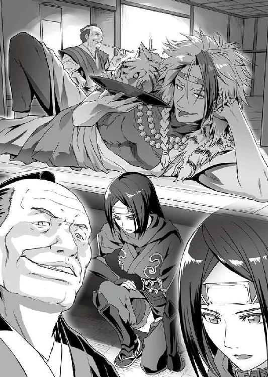
「黙れ！ 富農とは言え農民の分際で、我らの検地に異を唱えるとは不届き千万！」
「異を唱えるだなんてめっそうもねぇ！ おらは、何かお間違いがあったらいけねぇから今一度お調べをし直していただきてぇだけでごぜぇます！」
「黙れと言っておろう！ ......そうか、さては貴様、前の検地では袖の下でも使って不当に土地を狭く見積もらせたのであろう？ 今ならば過去の事として水に流してやらぬでもないが、これ以上つまらぬ申し立てをすれば、即刻この場で引っ立てるぞ！」
「そんな......」
食い下がった喜八であったが、結局はおとなしく引き下がるしかなかった。
身に覚えのない賄賂の疑いをかけられた上に、役人の背後に控えていた鉢巻きにたすき掛けの捕り方が、長いさすまた（長い棒の先にＵ字型の金具がついた相手の動きを封じ込める武器）をしごいて睨みを利かせているのではどうしようもない。
へなへなと座り込む喜八の姿を見た他の村人たちから、落胆の吐息が漏れた。
喜八は、名主の元蔵に次ぐ村の有力者であった。
その人物が必死に訴えて聞く耳を持ってもらえないのであれば、自分らの訴えなど、とてもまともに取り合ってくれまいという吐息だった。
代官所で大ケガを負わされた元蔵が村に帰ってきてから、七日が過ぎていた。
皆、今日か明日かと恐れていた日がついに来てしまった。
代官直筆の執行手形を持った一〇名ほどの一団が、この金竹村にも検地のやり直しと称して姿を現したのである。
その結果は、もはや魂が抜けたようになってしまっている喜八の姿が何よりも雄弁に物語っている。
役人たちは、まず村人たちをひとり残らず村の中心にある広場に集め、
「我らがすべての農地を検め終わるまでの間、この場より動くことはまかりならぬ。従わぬ者には厳しい処罰があると心得よ！」
と、高圧的な口調で申し渡した。
そうして検地は始まったのだが、そのやり口たるや、雑も雑。適当もいいところだったのである。
たとえば、所有する水田の面積を四町とされた喜八だ。
一町という単位は、現代のそれに直せば、およそ一ヘクタールに相当する。四町ならば、四ヘクタール。一辺が二〇〇メートルの正方形と同じ面積ということだ。
無論、村の水田がどれもきれいで歪みのない正方形をしているわけはない。水田を仕切るあぜ道は、あちこちで太さも違うし曲がりもしている。なので、それだけの面積を正確に測量しようとすれば、かなりの時間も手間もかかるはずである。
しかし、実際には喜八の所有していた水田の測量は、半刻（一時間）も経たずに終わってしまった。
それはまるで、予め結果が決まっていたかのような......。
「次、清兵衛。中田、二反。二石六斗」
「そりゃねえだ！ 二反って広さもおかしいけんど、うちはもう、ひい爺さんの代から下田も下田の扱いで......」
「やかましい！ 次！」
先にも述べたように、金竹村の農民の中では名主に次ぐ存在であり、広い農地を有していた喜八のような者に対してもそうなのだから、それより狭い土地を小作人など使わずに耕しているような家の場合も推して知るべしである。
どの家もほとんど、ぱっと見の印象程度で広さを決められ、あまつさえどの田畑も予想される収穫量は土地に見合わぬ過大なものに見積もられる。
そして、その結果は村人全員の前で発表される。
年貢の高を村人同士で融通し合うようなことはまかりならぬというわけだ。
「......以上、金竹村における本年の石盛（収穫量の予想）は、六〇〇石とする。おのおの、ご定法に従い速やかに年貢米の準備を致すように」
何から何まで、これまでとは違う横暴さであった。
大儀そうに帳面を閉じて役人が告げた時、もはや集められた村人たちの顔からは一切の精気が抜け、目は死んだようになってしまっていた。
そんな中、
「......ふざけてやがる」
ただひとり、怒りの炎を目に灯して役人を睨み付ける者がいた。
権兵衛である。
ぼそりと呟いた一言は、今は自分たちの身の哀れを嘆くだけで精一杯の村人たちには聞こえなかったであろうが、
「権兵衛様、いけません」
タエだけは相変わらず権兵衛の声に耳を澄ましており、ぎゅっと強く権兵衛にすがりついている。
何度も瞬きと歯がみを繰り返して気を落ち着けた権兵衛は、田吾の姿を探した。
田吾は、それぞれ家の代表として呼びつけられた喜八や清兵衛といった村人たちと同じく、検地の結果を伝えた役人の前に平伏していた。
権兵衛の家と、田吾、タエの家とは田も畑も共有であった。
元々は別々だったのだが、権兵衛の父親が亡くなった際に田吾が後見人になる形で権兵衛の家の田畑を預かったのである。その中には、村はずれの竹林も含まれていた。
役人はその竹林で採れる竹も売って金に換えることで三反の上田と同じだけの価値があるとして、重い年貢を課してきた。
それでも田吾は、形ばかりは他と同じように嘆いてみせながら、決して本気で抗うようなことはせず、役人の沙汰を受け入れてしまった。
権兵衛が怒りを抱いたのは、役人たちの横暴さもさることながら、そんな田吾の態度にも原因があった。
「わかってるのか、タエ。あの竹林が、上田扱いだぞ？ 採った竹をいくら細工物に仕立てたって、四石五斗分の米と同じ価値なんてあるもんか。田吾さんは、そんな無体な年貢まで負わされちまってるんだぞ？」
権兵衛は、タエにしか聞こえないように、声にある技を凝らして言った。
「おっ父も覚悟の上です」
同じ技で、タエが答えた。
「覚悟って......何の覚悟だよ。いいか、せめてタエの家と俺の家、今からでも持ち物を分けるんだ。あの竹林も田んぼも畑も、俺の家のものなんだ。その分まで、田吾さんが年貢を負う必要なんかない！」
「それでは、権兵衛様はどうなります？ なりません、そんなこと」
「構うもんか。俺はもう、こんな......」
こんな村......そう言いかけたところで、権兵衛は辛うじて言葉を飲み込んだ。
さすがに、感情のままに続けようとした言葉を何の責任もないタエにぶつけるのは、はばかられたからだ。
タエが、権兵衛の服の袖をつかんだまま、訝しげな顔をした。
「とにかく、今からでもあの役人に掛け合って......」
慌てて話を引き戻し、権兵衛は役人たちの方に目をやった。
役人たちは、もう仕事は終わったとばかりに帰り支度を始めている。
急がなければ。権兵衛は動いた。
と、それよりも先に前にいた喜八と、それに元蔵の息子である三郎が役人の前に立った。
「お、お待ちをお役人様」
まず三郎が腰を低くして役人に声をかけた。
「遠いところをお役目でお越しいただき、さぞかしお疲れかと。もしよろしければ、むさ苦しい所ではございますが我が家にておくつろぎいただければ......。ほれ、喜八どんからもお願いしねぇか」
次いで、三郎に促された喜八が言った。
「さ、先ほどは失礼しましただ。せめてものお詫びに、酒の席ぐれぇはご用意したく......」
そんなふたりの声を、権兵衛は暗澹たる気持ちで聞いていた。
三郎も喜八も、役人を宴席でもてなしていい気にさせてから、もう一度年貢の見積もりをやり直してもらおうという腹が見え見えであった。
権兵衛は、そのこと自体を咎めようとも思わなければ、卑劣な振る舞いと蔑む気持ちもない。むしろ、酒の席とそこでばらまかれるであろう金で年貢が軽くなるのであれば、いくらでもやったらいいとすら思う。
だが、それには狙い所や機というものがあるはずであった。こうまであからさまかつ、他の村人の目もある中では、饗応を受ける側とて白けた思いを抱くに違いない。
案の定、
「構い立ては無用である。我らは役儀にてここを訪れたに過ぎぬ。余計な気を回すだけ無駄だ。そこをどけ」
木で鼻をくくるとはこのことで、ごくあっさりと役人は告げた。がっくりとうなだれた三郎と喜八が、すごすごと道を空ける。
ふたりの勇み足に気勢を殺がれたのは、権兵衛も同様であった。
村人たちの手前、本心はどうあれきっぱりと賄賂の誘いを断った相手である。
ここで権兵衛がのこのこ出て行って、田吾と自分の家の田畑や土地を切り分けて考えてくれなどと訴えたところで、特別扱いなどできぬと杓子定規に突っぱねられるのが落ちであろう。
どうにもならぬ。
なんともできぬ。
ただ、堪えるしかない。
それならばせめて、堪えるに値するだけの理由がほしい。よすがになるものがほしい。
権兵衛は、心の底からそう思っていた。
「......村全体で六〇〇石ってよぉ。去年は、三〇〇石いかなかったんだど？ 無理に決まってるでねぇかよ」
だったら、どうするのか。
「こらよぉ、もう普段どおりのやり方では話になんねぇべ。ちっと何か考えねぇと」
「何かって、なんだべな」
「そらぁ......そうだ、悪ぃこととは思うけどよ、あのお役人様に袖の下でも送って何とかお代官様に口きいてもらうとか」
その手は、残念ながらもう使えない。
三郎たちと役人とのやり取りを間近で見ていて、まだ目があるとなぜ思えるのか。
「袖の下っつーても何を渡すだ。おらたちの村に金目の物なんか、なーんもねぇど。名主さんに頼んで金さ用意してもらうだか？」
「名主さんはあれから布団の上で唸りっぱなしだ。とても無理は頼めねぇ」
「だったら、どうすっだ。米も粟も稗も豆も......無ぇ物は逆さにしたって無ぇんだ。おらたちの食うもんと、来年の分の種籾まで差し出しちまったら、あとは飢え死にするしかねぇんだど」
夕刻から村の集会所で始まった村人総出での話し合い......いや、その名を借りた愚痴こぼしの会は、まるで前向きな意見が出ないまま夜を迎えていた。
年貢は、納められない。
何をどう話したところで、出る結論はひとつしかないのだ。
ならば、どうする？ 代官所からの要求は不当であると、村一丸となって突っぱねるのか。餓死者の山を築いて村ごと全滅の憂き目に遭うのを甘受するのか。
それともいっそ、村を捨てて代官所の支配違いの土地へ逃れるのか。
話し合うのであれば、そういう決断をすべき時に来ているのだ。
にもかかわらず、肝心なところには集まった誰もが踏み込もうとしない。さっきから同じ場所で堂々巡りになっている。
集会所の隅っこに座った権兵衛は、その様子を苦々しい思いで見つめていた。何度か口を挟もうかとも思ったのだが、その度に拳骨を食らわしてくれた田吾の顔が頭にちらつくので、我慢していた。
だが、もはや我慢も限界だった。
権兵衛は、立ち上がった。
「おう、権べ。なんぞいい手でもあるだか？」
「あるなら言ってけろ。ほれ、こないだも威勢良く何か言ってたべ」
急に立ち上がったものだから、妙案でも思い浮かんだものかと勘違いした村人の数人が、期待感のこもった目で権兵衛を見た。
「いんや、まだ何も。ちっとここは暑いだで、風に当たって頭さ冷やしてくるだ。したら、なんぞ思いつくかもしんねぇしな」
曖昧な笑みを浮かべ、権兵衛は集会所を出た。
向かった先は、自分の家であった。
隣に建っている田吾とタエの家よりは多少大きいが、他の村人たちが暮らす家と同じく藁を練り込んだ土壁に茅葺き屋根を乗せた田舎くさい家である。
玄関に近いところに、油抜きをして乾燥中の竹竿が何本か立てかけられていた。
権兵衛は、そのうちの一本を手に取ると、以前に竹林でやったように何度か握り心地を確かめるようにすると、頭に近い部分を同じく壁にもたせかけていた鉈でもって勢いよく斜めに切り落とした。
何の変哲もない竹竿に細長い楕円の切り口が生まれ、その先端は刃物の切っ先に勝るとも劣らない鋭さを見せる。
竹竿が、竹槍へ。
権兵衛は、その竹槍を腰だめにしてまっすぐ構えると、どこか倦み澱んだように感じられる周囲の空気を破る鋭い突きを繰り出した。
微妙に切っ先の位置を変え、続けて三度。
速い。
見る者が見たならば、それぞれの突きが相手の喉、心の臓、太股の付け根と、いずれも人体の急所にあたる部分を的確に貫く精密さと威力であったことに気付くだろう。
更に二度。足の親指から腰を通って手首まで、すべての関節を捻って螺旋状に力を伝えた一撃は〝敵〟の左肩を完全に砕き、目にも止まらぬ早業で左手に持ち替えて放ったそれは肝の臓をえぐる。
都合五回、目には見えない敵を戦闘不能に至らしめる豪槍を放った権兵衛だったが、
「──っ！」
不意に背後から立ち上った凄まじい殺気に反応して、振り向きざまに放った六度目の突きは、殺気の主によって急所を捉えることなく防がれた。
「権兵衛様、何にそんなに苛立っておいでなのです？」
胸元で交差させた二本の鎌の柄で竹槍の切っ先を挟み込んで勢いを殺したタエが、じっと権兵衛の目を見て言った。
「......全部にだよ」
もうわずか一寸、権兵衛の踏み込みがもう少し強ければ、タエの胸を刺し貫いてしまってもおかしくない状況であった。
だが、権兵衛は動揺するでもなければ、しゃしゃり出てきたタエを咎めるでもない、むしろどこか悔しそうに顔を歪めて言った。
「代官所の無法なやり方に。名主さんをあんな目に遭わせたことに。不当に年貢を高く見積もって俺たちから搾り取ろうとすることにも」
「......それだけですか？」
権兵衛がゆっくりと竹槍を引いた後も、権兵衛の顔から視線を離さずタエが訊ねてきた。「その不正と戦おうとしない村の人たちにも、苛立っておいでなのでしょう？」
「何でもお見通し......とでも言いたいのかよ」
くるりと手の中で回して逆手に持ち替えた竹槍を、権兵衛は力任せに地面に突き立て、息を吐いた。
「抗うか、流されるか。生きるか、死ぬか。答えは出てる。違うか？」
タエの問いに合わせたように答える。
タエが、ゆっくりと首を振った。
「私とおっ父、それに権兵衛様だけのことなら、仰るとおりです。ですが......」
「誰もが戦う力を持っているわけじゃない」
権兵衛は、タエの言葉を先回りするように言った。
「わかっておいでで、なぜ......」
ほんのわずかに声を上ずらせ、タエがまた訊ねる。
権兵衛は、地面に突き立っている竹槍を無言でもう一度引き抜くと、切っ先の土を払ってじっと見つめた。
「俺が、代官所まで行くと言ったら、タエは止めるか？」
はっとタエが息を呑む気配がした。
「権兵衛様、まさか......」
いけません、と鎌を腰の帯に戻したタエが権兵衛に駆け寄る。
「お、落ち着けよ。話は最後まで聞けって」
正面からすがりつこうとするタエを押しとどめて権兵衛は言った。
「何でこんなことになったのか、事情もわからないでいきなり代官の首を獲ろうなんて思っちゃいないよ」
「本当に？」
「どうせ悪党には違いない。獲れるにこしたことはないんだろうけど、そう簡単にいかないことぐらいは俺にもわかる」
「権兵衛様......」
「名主さんはあれっきり寝込んだままだし、三郎さんは名主さんの代わりに村のみんなをまとめるのに精一杯だ。誰かが、今何が起こってるのかもう一度調べなきゃ」
「だから、権兵衛様が自ら代官所に行かれると？」
「もう一度代官所に陳情に行く......。今やってる話し合いの中で結論らしいものが出るとしたら、そんなところだろ。そうしたら次は、誰が行くのかで揉めるに決まってる。名主さんのことを思えば、誰が好きこのんで行こうと思うもんか」
「......」
タエが目を伏せ、何かを考え込むような仕草を見せた。
ややあって、
「......本当にそれだけですね？」
さっきよりも力のこもった目で権兵衛を見上げて言った。
その眼力に思わずたじろいでしまいそうになるのを、へそに力を入れてこらえ、権兵衛は答えた。
「それだけだよ」
「......そうですか」
タエが、自分を納得させるようにひとつうなずいた。
「でしたら、私もお供します。それならば、おっ父も反対しないでしょうし」
「おい、タエ！」
「お連れいただけないのであれば、力ずくでもお止めするまでです」
タエが言うと同時に、右のあばらの辺りにごりっとした感覚があり、権兵衛はぎょっとしてそちらを見た。
いつの間にか、指を揃えて抜き手の形を作ったタエの手が、あばら骨と腹との境目に食い込んでいる。
タエが力をこめてその手をこじれば、しばしの間、権兵衛は息ができなくなって悶絶することだろう。そういう技を、タエは権兵衛以上に山ほど身に付けているのだ。
「わかった。わかったよ。......一緒に行く。約束する」
タエの覚悟が本物であることを十分に思い知らされ、権兵衛は兜を脱いで言った。
その言葉を聞いたところで、タエの手がすうっと離れる。
「では、そろそろ戻りましょう。あまり長い間席を外すと、皆さんに怪しまれます」
何事も無かったかのように言って、身を翻した。
やっぱり、一筋縄ではいかないか......。
やれやれと頭をかいて苦笑いした権兵衛は、竹槍を地べたに突き刺したままタエの後を追った。
「おい、待てよタエ。その鎌、腰にぶら下げたまま戻る気じゃないだろうな」
獣道すら通っていない深い山の中、うっそうと生い茂る木々の間を飛ぶふたつの影があった。
権兵衛とタエのふたりである。
幹を蹴り、枝をつかみ、ほぼ地面に足を着けることなく移動する様は、野生の猿ですら舌を巻くのではと思えるほどの軽やかさだ。
ふたりは、今朝早くに村を出てから、こうしてひたすらに道無き道を進んでいた。
並の人間ならばどんなに健脚自慢でも一日はかかる道のりを、わずか一刻（二時間）で駆け抜け、一路目指すは代官所のある真岡の町である。
昨夜、村の集会所に権兵衛とタエが戻ると、
「権べのおらん間も話し合ってただども、もういっぺん代官所へ行って年貢さ負からんもんかお願いしてみるしかねえってことになってよ」
権兵衛がタエに語ったとおりの結論──権兵衛からすれば、結論でも何でもない──が出ていた。
「そうかい。おらも、ちっと用足ししながら同じことさ考えとったでよ。......んで、代官所には誰が行くだ？」
もやりとした思いを胸に呑みつつ、権兵衛が少々意地悪く訊ねてみると、
「お、おらぁ......親父の看病もあるで、今回は誰か別のもんに行ってもらえねぇかと思うんだども」
まず真っ先に、三郎が尻をまくった。これも、予想したとおり。
「じゃ、そうなると喜八さんでねぇか？」
誰かが、声を上げた。
が、水を向けられるやいなや喜八もぶんぶんと首を振り、
「う、うちはダメだ。と、年甲斐もなく頑張っちまったおかげで、かかぁの腹がでかくなっちまってるしよ。それになんだ、腰の具合も悪い感じで......」
目を泳がせて口ごもる始末。
そうして村の実力者が揃って辞退してしまって、皆が途方に暮れているところで、
「良ければ、おらが行ってきてやるだ」
あっさりとした口調で言う権兵衛の申し出を阻む者は誰もいなかった。
唯一、田吾だけは苦い顔で権兵衛を睨むように見たものの、
「権べさひとりだけなんて心配でしょうがねぇだ。わたすも一緒に行くべ」
すかさずタエが言い出し、結局は何も言えずに終わった。
もっとも、
「なんだ権べ、おめぇタエちゃんの尻に敷かれっぱなしだな」
「なーんか臭うべ。もしかして、タエちゃんとふたりっきりで旅さしてぇだけなんでねぇだろな？」
「おいおい、だったら筋が違うど。前にシノ婆が言うとったけんど、いい加減に納められる方の年貢は、納めちまってからのがいいんでねぇか？」
「んだんだ。ほれ、ちょうど田吾どんもおることだし、出かけるまえぱぱっとよ、タエちゃん嫁にもらうって約束してから行けってばよ」
あまりに真に迫ったタエの言いざまを受けて、わっと湧き上がった村人たちが散々にはやし立てるものだから、文句をつけるどころではなかったというのもあろうが。
ともかく、満場一致で権兵衛とタエのふたりが代官所に行くことが決まって、善は急げと送り出されたのであった。
時間を戻そう。
「権兵衛様、沢の水音がします。水を汲んで行きましょう」
先を行く権兵衛に追いついてきたタエが、ぽんと権兵衛の肩を叩いて言った。
「水か......。そうだな」
速度を緩め、適当な木の梢に立ち止まった権兵衛が耳を澄ませてみると、確かに水の流れる音がする。
権兵衛は、さっと空を見上げた。日の位置を確かめるためだ。
日は、二刻ほど前と比べてぐっと西側に傾いてきている。
「沢があるなら、魚も捕れるだろう。下りて飯にしよう。飯を食ったら、今夜はここらで野宿だ」
「はい」
いかに常人離れした体力と技を併せ持つふたりでも、さすがに一切飲まず食わず、眠りもせず......というわけにはいかない。
素早く判断して、ふたりは水音のする方へと向かった。
タエの言うとおり、すぐに沢が見つかる。
ほぼ一日ぶりに地に足を着けたところで、権兵衛は肩で息を整え、汗をぬぐった。
「お疲れになりましたでしょう。しばらく、ここでお休みになっていてください」
タエが、腰に下げていた竹の水筒を権兵衛に差し出して言った。
水筒の中身は、薄く作った甘酒に塩を少々足したものである。
激しく体を動かした後には、ただの水よりもこの飲み物の方が良く体に染み渡るとされていて、これも一族に古くから伝わる知恵のひとつであった。
椀などはないから、水筒に直接口を付けた権兵衛が、喉を鳴らして飲んだ。
ごくりと音がする度に、汗に濡れた男らしい喉仏が上下するのを、タエがちらちらと盗み見ていることには気付かない。
一気に半分ほど飲んだところで、
「タエも飲むか」
と、口をつけたのをそのまま返そうとしたのだが、
「い、いえ。私は平気です。それより、何か燃やす物を集めてきますね。夜を明かすには、火を熾しませんと」
タエはなぜか頬を赤らめて権兵衛に背を向け、河原に転がっている乾いた流木を拾い集めに行ってしまった。
「なんだ？ おかしな奴だな」
狐につままれたような顔でその場に取り残された権兵衛であったが、ぼけっと突っ立っているのも何なので、適当な石を見繕って火を熾すためのかまどでも作ろうかと思った、その矢先だった。
「権兵衛様！」
川面の近くにまで行っていたタエが、急に大きな声で権兵衛を呼んだ。
ただならぬ様子に、組みかけのかまどを放り出して権兵衛が駆けつけると、
「あれを......」
普段からあまり物事には動じないたちのタエが、珍しく身を強ばらせて川面の一点を指さしている。
見て、権兵衛も驚いた。
人である。
うつぶせの格好で水面にぷかりと浮かんだ男が、一抱えもある岩と岩との隙間に挟まっていたのだった。
「し、死んでるのか？」
生唾を呑み込んだ権兵衛が男に近づき、意を決して男の襟首をつかんだ。
腐った首がぼろり......などと、あまりにもぞっとしない絵が思い浮かんだりもしたが、幸いにしてそのようなことはなかった。
何とか仰向けにしてやると、顔色が悪いのは確かであったが、まだわずかに頬に赤みが残っている。
「生きてるかもしれない。タエ、手を貸してくれ！」
それを見て取った権兵衛は男の両腕を抱えて叫んだ。すぐにタエも駆け寄ってきて両脚に手を回し、ふたりがかりで男を岸辺へと引き上げた。
生きているかもとわかれば気力も湧くようで、最初のこわばりはどこへやら、タエがすぐさま引き上げた男の胸に馬乗りになった。
年頃の娘が取るにしてははしたない格好であるが、この際構ってはいられない。
「やるのか？」
タエの意図を察した権兵衛は、男の顎を持ち上げて閉じてしまっている気道を確保すると、口の中に指を突っ込んでむりやり開かせる。
「水を吐かせます」
タエが、両手の指を揃えて抜き手の形にした。
「はっ！」
気合いをひとつ発し、揃えた両手を男の腹の辺りからあばら骨の境目を目がけて勢いよく突っ込む。
奇しくも、権兵衛に代官所への同行を談判した時と同じような形になった。
あの時のタエは、いざともなれば権兵衛の呼吸を一時的に止めてから縄で縛り付けでもする気だったかもしれないが、今は逆だ。止まってしまっている男の息を、吹き返そうとしている。
表裏一体。活殺自在。これが、忍の技である。
タエの十本の指が、すべて男のあばらの裏側にめり込んだかと思うと、男の胸が大きくぼこんと持ち上がった。
次の瞬間、権兵衛が開けていた男の口から、黄色い胃液とわずかな血、それに川を流される中で飲み込んだと思われる大量の水が吐き出されてくる。
男の体が、びくびくと痙攣した。
権兵衛は、更に深く指を突っ込むと、舌が喉の奥に巻き込まれぬようにぐいとつかんだ。
そうして男の胃に入っていたものを洗いざらいすべて吐き出させると、男の胸が規則正しく上下し始める。呼吸が戻った証だった。
権兵衛とタエは、お互いに顔を見合わせ、ほっと胸をなで下ろした。
「腰に刀を差していらっしゃいますし、見たところお武家様のようですね......」
「誰でもいいが、運のいい人だ。こんな山奥で溺れて、たまたま通りがかった人間がいて、それが俺たちだった。二重に運がいい」
「ですが、一体どうしてこんな所で......」
「それは本人の口から聞くのが一番手っ取り早いさ」
言って、権兵衛はタエを男の上から退かせると、背中から胸へと手を回して男の上半身を抱き起こし、
「よっ......と」
だらりと力なく座った男の背に片膝を当てて押すのと同時に、両肩は力一杯後ろへと引いた。いわゆる、「活を入れる」というやつである。
反射で男が何度か咳き込み、やがてゆっくりと目を開けた。
「......いや、本当にかたじけない。そなたたちには、感謝の言葉もない」
権兵衛とタエの介抱で息を吹き返した男は、そう言って存外元気そうに頭をかいた。
「命の恩人に対してこのようななりで礼を言うのもどうかと思うが、そこは勘弁してほしい。それがし、安宅清右衛門と申す」
「安宅様......」
男の名を、タエがおうむ返しにつぶやいた。やはり、最初の見立てどおり侍のようである。
「うむ。ここで出会うたのも何かの縁。以後、よろしく見知りおき......」
タエに向かって微笑み、言いかけたところで、安宅と名乗ったその侍は、盛大なくしゃみをした。
自分で「こんななり」と言っていたように、安宅は今、下帯（ふんどし）一枚で河原に座っている。
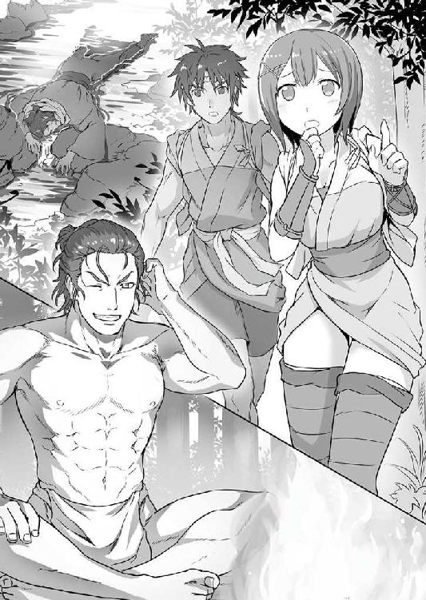
着ていたものはずぶ濡れだったので致し方ないとはいえ、夏も終わってこの季節、夜はそろそろ冷えてくる。
「安宅様、もっと火のそばに寄ってくだせぇ」
せっかく苦労して命を助けたのに、この山の冷気で風邪をひき、それが元でやっぱり死んでしまった......これではあまりに寝覚めが悪い。
そう思うのは、権兵衛ならずとも誰しも同じであろう。
権兵衛は、火にくべる枯れ木の量をどんどん増やしながら、安宅を促した。
タエも気を利かせて、安宅の着物をよく絞ってから火の近くで広げている。
「かたじけない。かたじけない」
そんなふたりの親切に、安宅は泣き出さんばかりの勢いで何度も何度も頭を下げながら礼を言うのだった。
どう見ても農民の権兵衛たちに対しても、一切偉ぶったところを見せずに素直に礼を言う安宅の姿は、権兵衛たちの心から警戒心を取り去るのに十分なものがあった。
「まったく、我ながら情けない。山道のぬかるみに足を取られて転んだところまでは覚えておるのだが、後はもう何が何やら」
そろそろ良い頃合いに大きくなってきた焚き火に手をかざしながら、安宅が言った。
「そのまま、あれよあれよと斜面を転がり落ちてしまったのであろうな。それで、上流の滝壺にでも落っこちたらしい。権べと、それにタエと申したな。そなたらが通りかかってくれなければ今頃は......」
「道で転んで滝壺へって......。運が良いんだか悪いんだか」
安宅の説明に、権兵衛は目を丸くした。
「いやいや、命あっての何とやらと申すではないか。そなたらに助けられた幸運以上を求めれば罰が当たるというもの。何と言うか、持っておる男なのだと思ったぞ、それがし」
暖を取るうちに舌も滑らかに動くようになってきたとみえ、安宅はやけに芝居がかった調子で言ってから、何ともいい笑顔で笑った。
よくよく見てみると、この安宅という侍、役者然として整った顔立ちの持ち主であった。
年も、いいところ三十手前というあたりだろう。
月代（男性の髪型の種類。額から頭頂にかけて剃り落とした髪型）を剃らずに髷を結っているため（総髪という）、水に濡れた前髪の一房が、切れ長の目にちょいとかかるあたり、さぞ洒落者好きな町娘あたりがぽうっとのぼせてしまいそうな艶がある。
そうなると気になるのが、そんな美丈夫の侍がたったひとりで、どうして街道から外れた山奥を歩き回っていたのかという点だ。
「それで、安宅様はどうしてこったら時分に山奥を歩いておられたんで？」
素直なところを権兵衛がぶっつけてみると、
「それは......だな。うむ......何と申せばよいものか......」
そこではじめて、安宅は難しい顔をして口ごもった。
「何かのお役目でございますか？」
重ねて、タエが聞く。
安宅は、しばしの間もごもごと独り言のようなことを口の中だけでつぶやいていたのだが、やがて意を決したように権兵衛たちの顔を見て言った。
「実は、人を捜しておる」
「人捜し？ こったら山ん中で......ですだか？」
思いがけない安宅の言葉に、権兵衛はまたも目を丸くした。
「うむ。葉島弦齊という名らしいのだが、そなたたち聞き覚えはないか？」
安宅が、捜しているという人物の名を口にした。
権兵衛とタエは、揃って首を傾げる。聞いたことのない名前であった。
「それで、その方は一体どういった方なんでしょう？ ご身分とか、なりわいとか」
と、タエ。
「知らぬ」
身も蓋も無く安宅が答え、いよいよ権兵衛もタエも当惑しきりである。
「お名前からすっと男のようですけんど、お歳は？」
「わからぬ」
「背丈とか、人相とか」
「皆目見当も付かぬ」
まるっきり、雲をつかむような話であった。
この侍は、年も人相もわからず、何をしている人物かも知らず、名前すら確かなものか怪しい人物を捜しているというのである。
「どうして、その葉島なんとかいうお人を捜してるんで？」
まさか理由までわからぬで捜しているわけではあるまいと、権兵衛は訊ねた。
そこで安宅はまたしても口ごもり、ううむと唸ってから、
「......すまぬ。さすがにそれは言えぬ。命の恩人に対して申し訳ないとは思うのだが、まぁ色々と複雑でな」
何やら事情がありそうなことを匂わせつつ答えた。
権兵衛もタエも武家の世界のことはよくわからないので、言えぬと言われてしまえばこれ以上は突っ込んで聞こうとも思わないのだが、
「ともかく、それがしはその葉島弦齊なる者に会って聞かねばならぬことがあるのだが、手がかりと言えばこのあたりに隠遁しているらしいという噂だけでな......誰ぞ心当たりがありそうな者は知らんか？」
かぶせて問われ、またも顔を見合わせ頭を捻ることになった。
考えて、思い浮かぶのは田吾ぐらいしかいない。
素性も知れない侍に金竹村のことを教えてもよいものかと迷わなくはなかったが、まさか安宅が代官所の誰かと通じているというようなこともあるまい。
一応、タエに目で確認し、小さくうなずくのを見てから、権兵衛は口を開いた。
「実はおらたち、こっから北にある金竹村ってとこから来たもんですだ」
並みの人間でもここから二日もあれば村へたどり着ける道筋を教え、村にいる田吾という男に会えば何か話が聞けるかもしれないと伝えると、安宅はまたしても「かたじけない」と連呼して頭を下げた。
とりあえず、これ以上は何か力になれることもなさそうで、葉島某に関する話はそれでしまいになったのだが、夜はまだまだ長い。
「ところで、見たところそなたらも旅の途中のようだが、どこまで行く？」
権兵衛が適当に捕まえてきた沢蟹を丸焼きにしたり、タエが摘んだ山菜を煮たりと、山奥の割には豊かに揃った食材での夕餉も終わり、寝るまでの間に手持ちぶさたになった頃合いで安宅が訊ねてきた。
「へぇ、代官所のある真岡まで参ります」
権兵衛が答えると、それまでは何を話してもにこやかに受け答えしていた安宅の顔が、不意に険しいものに変わった。
「真岡か......。稲の刈り入れが忙しくなろうかという時期に旅に出るぐらいだから、そなたらにも深い事情があるのやもしれぬが......」
ようやく乾いた着物を取って、肩に引っかけながら安宅が言う。
「安宅様は、真岡の町をご存知で？」
「ご存知も何も、数日前までそれがしも真岡におったのだ。まぁ何と言うか、よく言えば活気があるとも言えるが、その活気も元来あるべき姿ではないと思うがな」
「......危ない場所、ということでしょうか？」
安宅が言ったことの裏側に含まれているものを鋭敏に感じ取ったタエが、控えめな調子で聞くと、
「おタエのような若いおなごが近付くのはあまり感心せんな。もし、用事が権べひとりで片付くものなら、しっかりした旅籠を選んで泊まり、おタエはあまり出歩かぬことだ」
やはり遠回しな物言いで、安宅は答えた。あまり生々しい話をしてタエが気分を害さないように気遣ってくれているのだった。
「もし、出稼ぎでもしようなどと考えておるのであれば、即刻引き返した方が良いぞ。今の真岡で真っ当な勤め口を探すのは難しかろう」
それを、権兵衛は少々複雑な思いで聞いている。
タエには言っていないが、権兵衛には代官所への陳情の他にも目的があった。
村を出る。
場所と同じく、生活の有り様まで「どん詰まり」になっている村を出て、一旗揚げる。
忍でもなければ農民でもないようなあやふやな存在のまま、そんなどん詰まりの村で一生を朽ちさせる運命に、権兵衛は抗いたかった。
今までは、漠然と胸の底にたゆたっているだけだったその思いは、先日、田吾と口論になった折から急に芯のようなものを持ち始め、心の一角に住み着いていた。
人も物も情報も集まる大きな町へ行けば、生き方を変えられるのではないか。
その別の生き方というのがどんなもので、自分にできるものなのかもまだ見えないけれど、今回の旅できっかけぐらいはつかみたい。言わば、本番前の下見をしたい......そんな風に権兵衛は考えていたのである。
が、
「まぁ、どんな用事でも構わぬが、終えたら長居はせずに村へ戻ることだ。それがしから言えることはそんなところだな」
偶然にも権兵衛がまず知りたかった町の実情が、安宅の口から聞けてしまった。期待していたものとはまるで違う実情が。
夜が、更けてきた。
三人で代わる代わる火の番をしながら夜を明かし、やがて別れの時が来た。
「権べ、おタエ。そなたたちには本当に世話になった。金竹村で田吾殿にお会いしたら、必ず何かこの恩義に報いるからな。いずれまた会おう。それまで、元気でな」
「安宅様も、道中どうぞお気を付けて」
人の足で歩ける道を選んで街道まで出たところで、もう何度目かわからぬ礼を述べた安宅にタエが深々とお辞儀をした。
「うむ。......権べよ、昨晩も言うたが真岡へ参るのであれば、くれぐれも気を付けてな。決して、おタエをひとりにしてはならぬ。しっかり守ってやれ」
真剣な眼差しで言う安宅に、
「わかりましただ」
権兵衛はうなずいた。
安宅はタエの本当の姿を知らない。ただの田舎娘と思っているのだからその眼差しも当然なのだが、
「......では権兵衛様。先を急ぎましょう」
去って行く安宅の姿が完全に見えなくなった後、また急に人が変わったようにタエが言い、先に立って高い木の上に一足飛びで駆け上がるのを見て、権兵衛は、何だか面はゆいような申し訳ないような気持ちになった。
「権兵衛様、どうかなさいましたか？」
頭上からタエが呼ぶ。
「......いや、何でもない。行こう」
色々な感情が混ざり合い、重さを増したように思える権兵衛の胸の内であった。
だが、今は進むより他はない。
もう一山越えれば平地に出る。まだ村を出てからわずか二日だが、明日の朝には真岡の町へ入れるはずであった。
安宅が何を言おうと、まずは自分の目で確かめることだ。タエに内心を打ち明ける時が来るにしても、そこを始まりにするべきだろう。
そう言い聞かせ、権兵衛は跳んだ。
真岡の代官所は、乱世の時代にこの辺りを治めていた芳賀某という殿様が、関東一円を制覇しようと度々軍勢を動かしていた北条氏の侵攻に備えて整備した城郭の跡地を利用して建てられている。
陣屋造りの建物は、町を見下ろす高台の上にあり、代官所の東側を流れる川を挟んだ場所に町を南北に貫く目抜き通りが走っている。
町の北西に接続する街道から町へ入り、代官所の南を回ってその目抜き通りに足を踏み入れたところで、権兵衛とタエは、安宅が言っていた言葉の意味を知ることになった。
「良く言えば活気がある」
安宅は、真岡の町を評してそう言っていた。
確かに、見たところ町には活気があった。村にいては一生見ることはないであろう、通りを埋め尽くす人、人、人......。
通りの両脇には、いくつもの屋台や露店が軒を連ね、往来する人々に売り込みの声をひっきりなしにかけている。
無数の足音、荷車の行き交う音、話し声、すべての音が渾然一体となって間断なく両の耳に飛び込んでくる。
これが、町というものか。
目と耳とを覆い尽くす勢いで迫ってくる洪水のような情報量は、まさに圧倒的というやつで、目に見えぬ力に押されてその場でよろめいてしまいそうになるほどだ。
しかし、それほどの活気を目の当たりにして圧倒されても、そこに心が浮き立つような高揚感のようなものはなかった。
なぜか。
町に集まっている人間たちが放つ、独特の雰囲気......もっと言ってしまえば、臭いのようなものが強すぎるのである。
異様に目をぎらつかせ、立ち止まって通りを睥睨している男がいる。かと思えば、はしっこい身のこなしで人波を泳ぐように歩く男がいる。
単なる茶屋の娘にしては化粧が濃く、着物の崩れ方にいやらしさの漂う女がいる。ほつれた髪に手を突っ込み、かきむしりながら、酒瓶を直接あおる女がいる。
とろりと溶けたような目で虚空を見つめ、座り込む男。背中の彫り物を見せつけるように諸肌を脱いだ男。狂ったような嬌声をあげて、その彫り物にしなだれかかる女。
安宅は、こうも言っていた。
「その活気は、元来あるべき姿ではない」
目に止まる人々の多くは、古くからこの町で生業をもって暮らしているのではなく、町に漂うこの臭気に方々から引き寄せられて来た者たちに違いなかった。
「タエ、俺から離れるなよ」
別れ際、「しっかり守ってやれ」と安宅が権兵衛に言った意味も、すぐにわかった。
「権兵衛様もお気を付けください。さっきからこちらを見ているはす向かいの男、恐らくは懐に匕首（鍔のない短刀）を呑んでいます」
「タエの後ろを尾けている女にもな。嫌な目だ。巾着切りって奴じゃないのか」
「安宅様の仰っていたこと、よくわかります。確かに人で賑わってはいますが、明るい感じがしません」
「同感だ」
人の放つ気配や雰囲気といったものを、より鋭敏に感じ取れるよう訓練している権兵衛とタエだからこそ、余計に気疲れしてしまうのかもしれなかった。
最初に受けた衝撃が去ってしまってからは、四方八方からひっきりなしに飛んでくる、どこかささくれ立ったような視線に辟易しながらふたりは町を歩き続けた。
とりあえずの目的地は、以前に元蔵と三郎が宿をしてもらった旅籠である。
傷ついた元蔵を親身に看病してくれたという三郎からの話を聞く限りでは、安心して泊まれそうな印象だったからだ。
果たして、
「まぁ、あなた方も金竹村から？ ええ、ええ。元蔵さんたちのことなら存じていますよ。酷い目に遭いなさってねぇ......。まぁとにかく、お上がりくださいな」
三郎が書いてくれた紹介状を片手にその旅籠にたどり着くと、帳場を仕切っていた四十絡みの女将が愛想良く出迎えてくれ、そこでようやく権兵衛たちは無駄に張り詰めた気分から解放されたのだった。
早速、すすぎの水が出され、権兵衛たちは汚れた足下をきれいにして宿へと上がった。
女将に、元蔵たちが泊まったのと同じ部屋に通されたところで、
「あの、女将さん。この町は、いっつもこんな調子なんだべか？」
権兵衛は、思い切って訊ねてみた。
「せっかくわざわざ遠くから来てもらったのに、着いて早々嫌なものを見せちまって......すまないねぇ」
応じた女将は、まるで自分の息子が悪さをしたことを詫びるかのように言って、権兵衛たちを代わる代わるに見た。
「大きな声じゃ言えないけど、新しいお代官様が来て以来、町をうろついてるのはあんなのばっかしさ。あたしらみたいな真っ当な町人は、みんな息を詰めて小さくなって道の端っこを歩くしかないんだよ」
「じゃあ、通りでのさばってるあいつらは、なんなんだべ？」
「ヤクザ者、博打うち、島帰り、食い詰め浪人......それに、そんなのを相手にする夜鷹や飯盛女ばっかりさ」（夜鷹も飯盛女も、遊女・娼婦の当時の俗称のこと）
「そんな連中ばっかり歩き回ってて、お代官様はしょっぴいてくれねぇんだか？」
「それが......これはあくまで噂なんだけど、今じゃ町のあっちこっちで大っぴらに開かれてる賭場の胴元（元締めのこと）っていうのが、お代官様と裏でつるんでるやくざだか博徒だかの親玉らしいんだよ」
「お、お代官様がやくざ者と手ぇ握ってるてことだか？」
「噂。あくまで噂だよ」
そこまで喋って、女将はちょっと無駄話が過ぎたと顔をしかめて立ち上がった。それから急に四角い口調に変わって、風呂の注意やら飯の時間やらを細々と告げてから部屋を出て行った。
「代官とやくざが仲良しこよしじゃ、どうしようもないな。一体、どうなってんだよこの町は。何だか、思ってた所とずいぶん違うなぁ」
タエとふたりになったところで、権兵衛は青畳にだらしなく両足を投げ出して言った。
「そ、そうですね......」
そんな権兵衛に対し、どこか上の空といった感じでタエが答えた。
普段なら、「お行儀が悪いですよ」などと、もっともらしく言ってきそうなものであるのだが、今日はいつもと様子が違う。
どうかしたのかと思って見てみると、タエは女将が勧めた座布団にも座らず、部屋の隅にある衣紋掛けの前で小さく正座していた。
「なんでそんな隅っこにいるんだよ。せっかく二間続きの広い部屋をあてがってもらったんだから、もっとこう、ゆったり構えたらいいのに」
「そ、それはそうなんですけど......立派なお部屋すぎて逆に落ち着かなくて......」
権兵衛がそう声をかけても、タエは小さくなったまま、きょろきょろと部屋のあちこちに視線をさまよわせている。
「タエは、妙なところで気が小せぇんだなぁ」
呆れたように権兵衛が言うと、
「べ、別にそういうわけではありませんけど、その......」
きゅっと膝の上で結んだ手に目を落とし、タエは口を尖らせた。
「宿賃のことなら、心配ないぞ。そう余裕があるわけじゃないけど、路銀（旅費のこと）はちゃんともらってるんだし」
「村の人たちがなけなしのお金を出し合ってくれたものですよ。それを、寝るだけの場所にこんな......」
どうにも居心地悪そうに立ち上がったタエが、言いながら次の間へ続く襖に手をかけた。
「私は別に、雨風さえしのげればそれで良かったんです」
そっと、襖を引く。
と、自分の体の幅くらいに襖を開けたところで、タエの動きがぴたりと止まった。
「どうした？」
まだ何か気に掛かることでもあったかと権兵衛が訊ねても、
「......」
タエは、襖に手をかけたまま、まるで石にでもなったかのように動かない。
「タエ？」
さすがに心配になって、権兵衛も立ち上がってタエのそばに近付こうとした、その時だった。
「だ、だめです！」
また唐突に金縛りが解けたタエが、ぴしゃりと音を立てて襖を閉めて叫んだ。
「なんなんだよ一体。隣に、何があるってんだ？」
わけがわからず、権兵衛はタエの肩を押し退けて襖に手を伸ばす。
「だめです、権兵衛様。見ちゃだめ！」
その手をはっしとつかんで、近づけまいとするタエである。
「まさか死体が転がってるわけでもないんだし、何がだめなんだよ」
そんなタエを振り切って、えいと襖を開け放ったところで、
「......」
そこにあった物を見て、権兵衛もまた体を強ばらせた。
次の間には、既に夜具が用意されていたのである。
それも、二組の布団が隙間なくぴたりとくっつけられ、枕もそれぞれの敷き布団の右端と左端に寄せられている状態で。
権兵衛は、かっと首元が熱くなるのを感じた。
ちらと横目でタエを見やると、タエは両手で顔を覆ってしまっていた。
真っ赤に染まった耳だけが目に入り、それが余計に権兵衛の胸をざわつかせる。
「あ......と......なんだ。夕餉の時間まで、ここでごろごろしてるわけにもいかないし、も、もう少し町の様子でも見てくるか」
思い浮かべてはならぬと思えば思うほどに頭の中を占めようとする、あれやこれやの情景を必死になって追い出し、権兵衛は言った。
「い、行くぞタエ」
ぎくしゃくと固い手つきで襖を閉じて、その場から逃げるように部屋を出る。
「は、はい......」
蚊の鳴くような声でタエが言い、ほどなくして足音が後ろからついてくるのがわかった。
女将のとんだ気遣いに大汗をかく羽目になった権兵衛とタエであったが、もう一度表へ出て町の空気を吸い始めると、四半刻（約三〇分）もしないうちにうわついたような気持ちはどこかへと消え失せてしまっていた。
旅籠の女将に話を聞いた上で改めて町の様子を眺めてみると、なるほど、元々の住民たちが皆、ずいぶんと息苦しそうに生活しているのがよくわかるのだった。
大通りを我が物顔で闊歩するのが、やくざ者。そいつらに目をつけられないよう、そそくさと薄暗い裏道へ消えていくのが真っ当な町人では、あべこべもいいところである。
世の道理というやつがまるっきり通用していないというのは、気持ちの悪いものだった。
加えて、異常事態と言っても良いこの状況を正すべき代官や役人たちが、やくざ者どもとぐるなのである。
しばし歩きながら町の様子を子細に眺めている内に、権兵衛の若い胸には金竹村で感じたのと同じ種類の怒りが、何倍にも膨れあがって燃え始めるのであった。
「無駄足もいいところだったな。元蔵さんたちが追い返されたわけがわかったよ。代官の野郎は、まともに政なんかするつもりはないんだ」
思わず、愚痴も口をつく。
「権兵衛様、お声が大きいです。誰が聞いているかわかりません」
「構うもんか。俺は決めたぞ、タエ。陳情なんか意味がない。やっぱり、隙を見て代官の首を......」
「権兵衛様！」
往来の真ん中で、また勢いに任せてめったなことを口走りそうになる権兵衛を、タエが制した。
さすがにまずかったと気がついて、権兵衛は慌てて口元を手で覆うと、誰か聞いていた者がいないかどうか周囲に素早く目をやった。
幸い、聞き耳を立てていたような者はいなかったのであるが、別に気になる一団が権兵衛の視界に入り込んできた。
目抜き通りから外れる裏道の一本へ続く十字路の所に座り込む町娘風の女と、その女を半円に取り囲むようにして見下ろしている男たちが六人ばかり。
権兵衛の方から見えたのは女の背中なので年はわからないが、男たちについては姿形もはっきりと見て取れた。
腰に差した大小二本。どの頭もきれいに月代を剃ってこざっぱりした髷姿。着ている物の仕立ても良く、そこそこに禄（役人、武士への給料。通常、米で支払われる）をいただく侍のようである。
一度気になると目も離せず、権兵衛はしばしその一団を見ていたのだが、
「女ぁ！ 貴様、我らが代官の黒原様お側仕えと知っての狼藉か！」
侍たちのひとりが放った甲高い怒声が、一層権兵衛の注意を引いた。
「袴に泥をかけただけでも許しがたいところを、武士の魂である刀にまで......」
「まったくだ。道理をわきまえぬ愚か者は、黒原様に成り代わって我らが誅す！」
「無礼討ちじゃ。覚悟致せ！」
そこへ、かさにかかって仲間たちが責め立てる。
立派な大小を差した武家の男が六人がかりで、道にうずくまった女ひとりを、である。
女はと言えば、恐ろしさに口もきけないのか、着物の袖で顔を隠して小刻みに肩を震わせている。
唖然とするばかりの光景だった。
更に、騒ぎを聞きつけて集まってきた連中というのが、また外道であった。
にやにやと笑みを浮かべて面白そうに遠巻きにしているなどというのはかわいいもので、中には「やれやれ！ 叩き斬れ！」と侍たちを焚きつける者までいる始末。
ただでさえ、かっかと来ていた今の権兵衛に、これを黙って堪えろと言うのは無理な話であった。
特に権兵衛の気に障ったのが、侍たちのひとりが発した「道理をわきまえぬ」という一語である。
代官の無法な年貢と役人たちのやりように怒りを溜めて村を立ち、今この町では世の道理がひん曲がってしまっていると憤慨したばかりのところに、これである。
積み重なったものがとうとう限界に達し、瞬間、権兵衛の中で何かが切れた。
「......どっちがだ」
ぼそりと言って、一歩を踏み出す。
当然、
「権兵衛様、いけません！ こんな場所で騒ぎを起こしては！」
眉をつり上げ、肩を怒らせて歩き出そうとする権兵衛の様子を見て、大声を出すなとたしなめたはずのタエが、声を張り上げた。
だが、完全に頭に血が上ってしまっている権兵衛の耳には届かない。
「おい、いい加減にしろよ」
人前では努めて使うように心がけている田舎言葉も忘れ、権兵衛は、女を取り囲む侍たちに詰め寄っていった。
気付いた侍たちが、一斉に権兵衛を見た。
侍たちは、権兵衛の出で立ちが、どこからどう見てもみすぼらしい貧農のそれであることにわずかばかり驚いた様子であったが、次の瞬間、
「何だお前は！ 下賎の者が、我らに対して不届きにも程があろう！」
烈火のように怒りだした。
町娘ひとりに寄ってたかって威張り散らすような連中であるから、このような反応も当然で、権兵衛はいちいち気にも留めない。
まずは女を助けてやらねばと、しゃがみ込んでいる女の肩に手を当てて、「大丈夫か」と声をかけた。
女が、無言のままこっくりとうなずく。
そこではじめて気付いたのだが、近くに寄ってみるとやけに大柄な女であった。肩に触れた感じも、女にしては硬く骨張っているような気がする。
が、権兵衛が抱いた違和感を深めるよりも早く、
「不逞の輩めが。邪魔立てするなら、貴様も無礼討ちだ」
権兵衛にすっかり無視された格好になった侍のひとりが、横合いから権兵衛の右肘をつかんで引いた。
刹那、権兵衛が動いた。
つかまれた側の肘をかち上げ、侍の手を外すと、
「む？」
振り向きざまに左の掌底を斜めに打ち下ろすように侍の顎に当てた。
「あっ......」
小さく声をあげた侍が、突然、焦点の合わぬ目になって、膝から路上に崩れ落ちた。
「な、何をした貴様ぁ」
同輩が突然地面に膝をついて、阿呆のようによだれを垂れ流して動かなくなってしまったのを目の当たりにした別のひとりが、怒り半分困惑半分の中途半端な声で言った。
それで、今度は権兵衛の真正面からつかみかかってくる。
「こうしたんだ」
わっと迫る腕を取り、権兵衛は軽く力を入れて自分の方に引き寄せた。それだけで体の重心を狂わされたふたり目の侍が、たたらを踏んでつんのめってくる。そこに合わせ、権兵衛はまた掌底をこつん、下から顎に当てた。
「へにゃむ」
何とも形容しにくい妙な声とともに、ふたり目の侍もひとり目と同じ格好になって膝から落ちた。
種を明かせば、ふたりとも権兵衛の掌底で脳みそを揺さぶられたせいで三半規管が狂い、目を回してしまった......いうことだ。
が、残る四人の侍たちには権兵衛が奇っ怪な妖術でも弄したように見えたのかもしれない。
「おのれ......抜け！ 抜け！ 斬り捨てい！」
侍たちの中では年嵩に見えるひとりが色をなして吠え、それに呼応して次々と刀の鯉口がきられたが、四人とも腰は引けている。
それで、侍たちは大した腕も度胸もなくて、斬るだの何だのとわめいているだけと分かるのだが、それでもやはり白昼に閃く抜き身のぎらつきというのは、野次馬たちをどよめかせる迫力があった。
権兵衛は、まだうずくまったままの女をその刃から守るようにゆっくりと女の前に回り込み、油断なく視線を飛ばす。
こういう場合、ひとりがこらえきれずに突っかけてきたのをきっかけにして、雪崩をうって一斉に向かってくることが十分に考えられる。
誰から来るか？ 相手の初手を見極めることが、事を有利に運ぶ肝と心得ている権兵衛であった。
しかし、結局侍たちは抜くだけ抜いておいて、誰ひとりとして実際に斬りかかってはこなかった。
と言うのも、
「やめとけ、やめとけぇ。おめぇらみてぇな、かっこばかりのイモ侍がよぉ、何人束になったってかないやしねぇんだからよぉ......」
不意に、集まっていた野次馬たちを掻き分けてきたひとりの男が、ねっとりとした声色で言いながら権兵衛と侍たちとの間に割って入ってきたからである。
「オレの見立てじゃ、そっちの小僧は見かけによらず、かなりの使い手だぜぇ。そんな飾り物をぶん回したところでよ、ばっさりお手討ちなんてぇのは夢のまた夢ってやつよ。悪ぃこた言わねぇからよぉ、恥かく前にしまえしまえ」
そう言って、だらしなく開いた着物の胸元に手を突っ込む男を見る権兵衛、完全に毒気を抜かれたように棒立ちになってしまった。
男の出で立ちが、あまりにも人目を引く、すさまじいものだったからである。
優に六尺（約一八〇センチ）は超えようかという長身に乗っかったざんばら髪などまだまだ序の口。真っ赤な茸に蛇が絡みついているという、趣味の善し悪しを論じるのも馬鹿馬鹿しくなるようなど派手な着物が幕内三役といったところだ。
墨を背負って伊達を売る博徒ですら、ここまで頭の目釘が緩んだような格好をする者は、そうはいまい。
「き......あ、いや、あなたは......鬼哭党の......」
と、最初に刀を抜いた年嵩の侍が、その奇天烈男の顔を見て、唇をわななかせるように言った。
奇天烈男が、着物の柄に棲んでいる蛇と同じような、ぬるっとした目で侍を見た。
「そうよぉ。お代官様のお側仕えってんなら、オレのこたぁ知ってるよなぁ？ 鬼哭きの兜丸......鬼兜様たぁオレのことよ」
芝居の口上に引っかけたような調子で、男が言った。言いながら、着物の胸元から引き抜いた手の指で自分の顔をくいと指し、侍から権兵衛に目線を移してきたのは、名乗ったということなのだろうか。
「鬼兜......」
権兵衛は、その視線を受け止めて、口の中で転がすように男の名をつぶやいた。耳ざとく聞きつけた男──鬼兜が、にぃっと笑った。
「おう。しがねぇやくざ者だけどよぉ、名前だけでも覚えて帰ってくれや」
名前も姿も、一度見聞きしたら二度と忘れまいということをわかった上で言っているのだろう。鬼兜の言葉は、どこか聞く者の心をきしませるような響きがあった。
「ちょいと通りがかったもんで、ハナから見物させてもらったがよ、小僧、なかなか面白ぇ小技を使うじゃねぇか。ひとつ、名前を聞かせてくれや」
「......」
それもあって、上から下まで不躾に権兵衛を見る鬼兜に、権兵衛が答えるのをしぶっていると、
「......ああん？」
急に鬼兜の目に強暴そうな光が宿る。
「名無しのごんべえじゃあるめぇし、聞かれたことにゃぁ答えんのが筋ってもんだろが」
凄んで言うのに対し、権兵衛は眉根を寄せて睨むことで応じた。
「ほう......ここいらで、オレにそんな目ぇ向けてきた奴ぁ久しぶりだ。なかなか、いい濁り方をしてやがる。けどなぁ、人がせっかく穏便に仲裁してやろうってぇのに、名乗りもしねぇってなぁ気にくわねぇぜ」
奥歯を擦り合わせ、耳障りな音を立てながら、鬼兜がなおも凄んだ。
それだけで、周囲の空気がさあっと冷え込むような感じになって、野次馬たちが、うっと息を呑んだ。
「俺は......」
さすがにこの剣呑さには背筋の毛がちりつくのを感じた権兵衛が、口を開きかけた、その時だった。
「ご、ごめんなさいねぇ、鬼兜のダンナ。こちらのごんべえちゃん、ダンナに驚いて声も出なくなっちゃったみたいでぇ」
思いも寄らぬ所から声がした。
権兵衛の真後ろである。即ち、権兵衛が侍たちの凶刃からかばっていた女が言った......はずなのだが、
「ダンナのおかげで助かったわぁ。そのあんぽんたんなお侍たちは、ダンナの方できっちりお仕置きしておいてよねぇ」
聞こえてきたのは、口調こそ女のそれなのだが、声そのものは明らかに野太い男のもので......。
ぎょっとして権兵衛が振り向く。そして、見た。
視界を埋め尽くす、その顔を。
思わず、何もかもをかなぐり捨てた奇声をあげてしまいそうになるのを、権兵衛は、すんでの所で堪えた。
（お、男!? ......いや、女？ ......男？ は？）
目に映るモノが何であるかを判断できず......いや、違う。判断した結果を受け入れることを、心が拒否し、権兵衛は真っ白になった頭でただ目を見開いた。
完全に固まってしまった権兵衛の両肩を、ちょっと大柄な町娘だと思っていた何かが、がっしりとつかんだ。そのまま、
「それじゃ、アタシたちはこれで。......ごんべえちゃんも、助けてくれてありがとね。あっちで、たっぷりとお礼してあ・げ・る」
「......ひっ！」
「うふふふ......さ、行きましょ」
権兵衛の全身を、最大級の危険を報せる何かが走り抜けた。全力で抗うべく、ほとんど無意識のうちに四肢に力がみなぎる。
が......動けない。
自分の意志に反し、権兵衛の体は一寸たりとも動かない。
目の前のモノが、とてつもない馬鹿力で権兵衛を押さえつけているからだと気付いた時には、もう遅かった。
「はい、行きましょ。さぁ行きましょ」
権兵衛の体は、為す術も無くずるずると引きずられていた。
裏路地の、奥へ奥へと。
「た、タエ！ 助け......アーッ！」
侍の抜いた刀を前にしようと微塵も感じなかった恐怖が全身を貫き、今度こそ権兵衛は、どこかで見ているはずのタエに向かって恥も外聞も無く助けを求めてしまった。
既に侍たちも、鬼兜と名乗った奇天烈男も、とうに辻の向こう側に見えなくなってしまっている......。
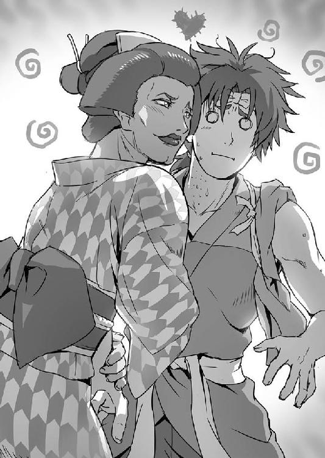
「......あなた、本当に権兵衛ちゃんって名前だったのね」
人通りもまばらな裏路地の奥の奥に、一軒のそば屋が日に焼けた暖簾を下げていた。
その店に入って向かい合ったところで、町娘だと思っていたらそうではなかった......権兵衛が、生まれて初めて目にする種類の人間は言った。
「で、そっちのおミソちゃんは？」
「お、おミソ......」
権兵衛があげた悲鳴を聞いて、大慌てで後を追ってきたタエも、どうにも砕いて飲み込めぬこの展開に目を丸くしている。
「た、タエ......といいます」
何とか絞り出すようにして言ったところで、
「あっそ。アタシは、お千代。よろしくね、権兵衛ちゃんに、おミソちゃん」
それは、名乗った。
名前は、女だった。
「お千代......さん」
権兵衛は、色々と確かめるようにその名を呼んだ。名前がわかったところで、ようやく目の前にいるのが普通......ではないにしろ、この町に住む町人なのだと納得できたような気がする。気がするだけかもしれないが。
ともかく、そのお千代である。権兵衛が名前を呼ぶのに、うっとりと目を細めてから、
「さっきはどうもありがとうね。助けてくれたお礼に、おごらせてちょうだい」
くねくねとしたしなを作りながら言う。ぞわり、とまた権兵衛の背中が粟立った。
「あ、あの......その前にひとつうかがっても？」
大して暑くもないのに、額に大粒の脂汗を浮かべて固まってしまっている権兵衛を見やってから、タエが思い切ったように口を開いた。
「何よ？」
と、お千代。権兵衛に対する話し方と比べ、ずいぶんと淡泊でつっけんどんな声であった。
「お、お千代さんは......その......お、男の人......ですよね？」
その物言いにわずかに怯みつつも、タエが訊ねた。
訊ねてしまった、と言うべきかもしれない。
タエの声と同時に、その場の空気が何とも言えないおかしな張り詰め方をして、権兵衛の額から汗が一筋、頬に流れた。
くっつけられた組み布団を見ただけで真っ赤になってしまうかと思えば、こういうところは妙に肝が据わっているタエであった。
権兵衛は、内心でその度胸に舌を巻いた。
タエの質問は、権兵衛もいの一番に聞きたかったところであるのは間違いない。
だが同時に、聞いてはならぬ、聞けば何か開けてはいけない扉をあけてしまうような危うさのようなものも感じて、切り出せずにいたのだった。
お千代は、何と答えるのだろうか。
表情を確かめるのも怖いような気がして、思わず目を逸らしてしまいそうになったところで、
「お嬢ちゃんの言うとおり。こいつの本名は、千代松ってんだ。れっきとした男だよ」
うっそりとした声がした。お千代のものではない。
見ると、かけそばの入った丼を盆に乗せて運んできた店の主人が、お千代の代わりに答えたものであった。
「ちょっと！ やめてよね、もう！」
お千代が、金切り声をあげて主人を睨んだ。
「やめてほしいのはこっちだってんだ。そんなごつい背格好で、毎日気色悪い作り声聞かされる俺の身にもなってくれ」
主人が、げんなりとした声で応じる。
「ひどい！ ひどいわ！ 乙女心を何だと思ってるの！」
矢絣の柄をした小紋（女性が着る着物の一種）の袖でわざとらしく目元を拭い、お千代が叫んだ。
主人は、まるで取り合わずに権兵衛たちの方を見て、
「すまないな。俺は、平助ってもんでここの親父だ。こいつとは腐れ縁でよ」
良く見れば渋い、苦み走った顔を崩して言った。
「はあ......」
どう応じていいかわからず、権兵衛は曖昧にうなずいた。
「どんな災難でこいつに目ぇつけられたんだか知らないが、気を付けろよ兄ちゃん。こいつはな、元は大谷って所で、こんなでっけぇ岩を切り出しちゃ縄かけて運んでいたんだがよ、いつの頃からかこっちに目覚めちまってな......」
平助が、こっちと左手の甲を右の頬に押し当てた。
大谷というのは、この真岡の北西に五里ばかり行った所にある石切場の名前だ。石蔵や石塀を作るのに適した石が採れると言われている。
なるほど、力自慢でなければ務まらぬ仕事だったとあれば、お千代の並外れた剛力にも合点がいくと権兵衛が思っていると、
「昔の話はしないでっていつも言ってるでしょ！ 嫌な親父ね！ 昔はどうあれ、今のアタシは身も心もか弱い乙女なのよ！ さっきだって、ごろつき紛いの侍に絡まれて、もう怖くて怖くて......」
声の調子を一段二段と持ち上げて、お千代が平助を遮った。
「道行く男連中は、びびって誰も助けてくれないし、どうしようかと思ったところを、この権兵衛ちゃんが颯爽と......ね？」
と、権兵衛が油断していたところで、またうっとりした流し目が飛んできた。
まともに見てしまった権兵衛は、びくりと身をすくませる。蛇に睨まれた蛙とは、このことか。
平助が、ため息をついて首を振った。
「か弱いってどの口が......。おめぇの馬鹿力なら、もやし侍どもなんざどうとでも......」
げっそりして言うのに、
「んもう！ 持ってくるもん持って来たなら、さっさとどっか行きなさいよ！ アタシと権兵衛ちゃんの邪魔しないでちょうだい！」
お千代が、片腕を振り上げて平助を追い払おうとする。着物の袖がまくれて露わになったその腕は、日頃野良仕事や修練で鍛えている権兵衛よりも太かった......。
「兄ちゃん、お嬢ちゃん。こっちでも悪いヤツじゃねぇんだ。面倒だろうけど、しばらく付き合ってやってくれ」
そばの丼を置いた平助がそれで逃げだし、席には権兵衛たち三人だけになる。
「ほんっと失礼しちゃうんだから。権兵衛ちゃん、あの親父が言ったことはみーんな忘れちゃってちょうだいね。いいこと？ アタシは、お千代。町で評判の腰元よ」
「評判の......」
光の消えた目で、権兵衛が言った。
「腰元って、おめぇかっこばっかりでどこにも奉公になんか上がってねぇだろうが」
「お黙りったら！」
釜場に戻った平助の声と、お千代の金切り声が交錯した。
それを聞きながら権兵衛が思うのは、お千代の言う評判とは、何がどのように評判なのか......ということだったが、これ以上のことを聞く勇気は出ない。
さすがのタエもそれは同様のようだった。お千代には見えない机の下で、権兵衛の太股あたりをぎゅっとつかんでいる。
これはもうタエも頼りにできないと悟って、権兵衛は出されたそばを手繰りながら、間を持たせるために別のことを訊ねた。
「ま、まぁとにかくケガがなくて何よりだったよ。それで、お千代さん。ひとつ聞かせてほしいんだけど、最後に割って入ってきた、あの鬼兜って奴は一体何者なんだ？」
「あまりの非道さに地獄の鬼も泣いて逃げ出す......それで、鬼哭きの兜丸。もっと縮めて鬼兜。代官の黒原と一緒に、この町をこんな風にした張本人よ」
打てば響くようにお千代が答えた。その声は、忌々しさに充ち満ちている。
はっとして、権兵衛が素早く辺りを見回した。
店にいる客は、権兵衛たちを除いて数人ばかりいるが、どこで誰が耳をそばだてているかわかったものではない。
「心配要らないわ。この店は、大丈夫よ」
気付いたお千代が、安心させるように言った。
「この店はね、元々は表通りの繁盛店だったの。親父の平助は、そば屋のかたわらお上のお手先も務めてた真っ当な人よ。口は悪いけどね」
お上のお手先とはつまり、犯罪者を取り締まる岡っ引きだったということである。
意外な気持ちで、権兵衛は釜場の平助を見た。
「それが、代官の息が掛かった御用商人にむりやり店を取り上げられて、こんな裏路地の奥へ追いやられちゃったってわけ」
「十手持ちの旦那からむりやりって、そんなことができるのか？」
「できちゃうのよ。難癖つけて十手まで取られちゃ、平助はただのそば屋。どうにもできなかったのよ。でも、目立たない場末の店になったおかげで、気にくわない奴らを気にせずのんびりできるから、痛し痒しなんだけど」
同じく、お千代も釜場に目をやって続けた。
釜場では権兵衛たちの話を聞いているのかいないのか、平助が黙々とそばを打っている。
「ひどい話ですね」
タエが、沈痛な面持ちになって言った。
「本当よね。最初の頃は、心あるお役人もいて、何とか無法を正そうと頑張ってくれてたこともあったんだけど、さっきの鬼兜が現れてからは、もうめちゃくちゃ」
「奴ひとりのせいでそこまで......」
「違うわよ。イモ侍たちが言ってたでしょ、鬼哭党のって。手下がいるのよ。三年前ぐらい前にふらっと町に現れて、代官と鬼哭党が手を組んだの。で、まともなお役人は片っ端から鬼哭党に......」
お千代が、喉元に手刀を当てるような仕草を見せた。
「それからはもう、お役人たちはみんな鬼兜と鬼哭党が怖くて代官のたいこもち。そればかりか、さっきのイモ侍みたいに代官の威光を笠に着たのがのさばる始末。やってらんないわよ、もう」
「そんなことを、江戸のお城にいらっしゃる上様がお許しになるんでしょうか？ 恐れながらと皆さんが江戸へ訴えに出れば......」
にわかには信じられぬと、タエが言った。
お千代が、「無理無理」と顔の前で手を振った。
「ここはいいけど、町のどこに鬼哭党が目を光らせてるかわかったものじゃないわ。妙な企みがあると知れれば、あいつら矢よりも早く口を塞ぎにかかるんだから」
何たることだ。
山で出会った安宅、旅籠の女将、そしてこのお千代......。立て続けに聞かされた三つの話と、実際に目にした町の有様を合わせて、権兵衛もタエも暗澹たる気持ちを通り越して、顔を見合わせる他なかった。
「ふたりとも、何か用事があってこの町に来たの？」
そんな権兵衛たちの顔色をうかがいながら、今度はお千代が訊ねてきた。
「ああ、いや......」
どう答えるのが穏当かと迷う権兵衛に、
「権兵衛ちゃん、田んぼの世話させとくにはもったいない腕だものねぇ。どこでお稽古を積んだのか知らないけど、あの鬼兜が目をつけるなんて相当よ。もしかして、この町で一旗あげようなんて思ってたとか？」
どこか妖しい光を放つ目を向けて、お千代が言った。
内心を見透かすかのようなその物言いに、権兵衛は、うっと言葉を詰まらせる。
一瞬、弾かれたようにタエが権兵衛を見た。
あえて気付かないふりをして、権兵衛は平静を装って口を開いた。
「俺たちは、ずっと北にある金竹村ってとこの農民だ。こっちのタエと一緒に、そのお代官様に無茶な年貢を負けてくれるよう、名主さんの名代として談判に来たんだよ。な？ タエ」
「え、ええ。そうなんです」
微妙に歯切れ悪く、タエが同意した。
「村に来たお役人様が、あんまり雑に検地をなさるので、せめてそのやり直しだけでもしていただけないかって......」
「そうだったの。でも、それが無駄だってことは、十分わかってもらえたんじゃないかしら？ 代官に談判するなんて、命を捨てに行くようなものよ」
気の毒だけど、と付け足してお千代が言った。
「でも......」
と、タエが反駁する。
「村のみんなに頼まれたんです。だから、やるだけのことはやってからじゃないと、村には帰れません。何とか、お代官様にお目に掛かる方法はないでしょうか？」
「諦めなさいな。村の方には悪いと思うけど、黙って村へお帰りなさい、おミソちゃん。命あっての物種って言うでしょう」
「村へ帰っても、どの道このままじゃ村のみんなと一緒に飢え死にです」
悲しげに目を伏せたタエがそう言うと、お千代が丼に残った汁をひと口すすってから、
「ふたりとも、宿はどこなの？」
急に話を変えて聞いてきた。
戸惑いながら、タエが泊まっている旅籠の名を告げると、
「そこなら安心だわ。女将さんは、ここの親父と一緒で道理のわかる人よ。......そう、だったら今日は帰って、一晩しっかり考えるといいわ。もし、それでも諦めがつかないようだったら、明日、日が昇ったらこの店で待ち合わせましょう」
お千代が、妙な提案をしてきた。
「待ち合わせて、どうするんです？」
「もしかして、代官に引き合わせてくれるのか？」
タエと権兵衛が立て続けに聞くと、「まさか」とお千代が笑った。
「助けてもらったお礼が、こんな二八そば一杯じゃ悪いと思ってね。もうひとつ、お礼代わりに見せたいものがあるのよ」
「見せたいもの？」
「ええ。......でも来なくても一向に構わないわよ。アタシは、正直あんまり見たいものじゃないしね」
意味深に言うお千代に、権兵衛とタエは再び顔を見合わせるのだった。
翌日になった。
お千代の勧めに従って宿で旅の疲れを癒やした権兵衛とタエは、再び平助の店へとやって来ていた。
一晩、それぞれに今後のことを考えようと決めて寝床に潜ったのだが、結局のところこれと言った結論は出なかったのである。
その前に、女将に寝間の扱いを変えてくれるように頼むにあたって、ふたりしてまたも大汗をかく羽目になったのは、別の話。
ともかく、約束の刻限どおりに権兵衛たちは店を訪れ、
「やっぱり来ちゃったのね」
と、複雑な笑みを浮かべて言うお千代に迎えられた。最初から、権兵衛たちが来ることを見越していたかのようである。
早朝ということもあって、店内に客はいない。平助が、安全に待ち合わせできるようにわざわざ店を開けておいてくれたのかもしれなかった。
「見せたいものって、なんなんだ？」
火の気のない釜場をちらと見てから、権兵衛は訊ねた。
「ついてきたらわかるわよ」
こころなしか沈鬱な声になったお千代が、席を立つ。そう言えば昨日、「アタシはあんまり見たいものじゃない」と言っていたのを権兵衛は思い出した。
そば屋に来てそばを注文しなかったことを、律儀にタエが平助に詫び、三人は連れだって店を出た。その背中に、平助の「気を付けろよ」という声がかかる。
一体、お千代はどこへ権兵衛たちを連れて行こうというのか。
相変わらず、目つきの危ないならず者ばかりがのさばる大路の喧噪を、気を張り詰めながら通り抜け歩くこと半刻（約一時間）ばかり。
「ここは......」
やって来たのが、そもそもの目的地である代官所の建つ高台であることに気付いた権兵衛が、口を開いた。
「代官所へ行くのか？」
「ええ。だけど、中にまでは入らないわよ」
お千代が応じた。
また歩くことしばし。既に町屋が建ち並ぶ地域はとっくに出て、大通りの喧噪が嘘のように思える静けさが続いた。
と、
「権兵衛様、あれを」
行く手に、再び大勢の人間が集まっているのに気付いたタエが、それを指さして言った。
権兵衛は、タエの指さす先と辺りの風景とを見比べた。
人が集まっているすぐ近くには立派な石垣が築かれている。その一角に切れ込みをいれるような形で立派な大門が建っており、人々はその前に集まっているのだった。
「あの門から先が、代官所」
これまで、権兵衛たちを先導する形で前をいっていたお千代が振り返り、さっと権兵衛の腕を取った。
「お、おい......」
不意の感触に、権兵衛は昨日感じたあの恐怖がよみがえり、思わず身をすくませた。
「ここじゃ目立つわ。こっちへ」
お千代が、権兵衛の腕を強く引いた。
こっち、と言って引っ張る先は代官所の大門へ続く道の左手にあるなだらかな堤のような斜面である。
「役人に気付かれると厄介だから、静かにね」
夏を終えて色が抜けた秋草に包まれた斜面を、三人は上っていった。てっぺんまで上り、もう少し進むと、さっき見ていた人の群れを眼下に見下ろせる位置であった。
「頭を下げて。草に隠れて」
小さな声でお千代が指示を出す。言われたとおりにした権兵衛とタエは、草の隙間から下をのぞき見た。
そこに集まっているのは、若い男を中心に五〇人ばかりといったところだろうか。
皆、権兵衛やタエが着ているものよりもなお粗末で、ぼろぼろの着物をまとっている。
髪も髭も伸び放題で、遠目にも頬はこけて精気がない。
体中、泥のような汚れまみれである。ろくに風呂にも入っていないのだろう。すえたような臭いが風に乗って舞い上がってきて、思わず顔をしかめるほどだった。
「あの人たちは一体......」
臭気に耐えながら、権兵衛は囁くような声でお千代に訊ねた。
同時に、
「蓑川村、これより出立する！」
門に近い方から大きく張り上げるような声がして、権兵衛はそちらを見た。
そこには、紋入りの陣笠に羽織を着けた役人風の男が三人並んで立っている。声は、三人の中央にいる男のものだった。
「全員、隊列を組め。ぐずぐずするな！」
今度は右端の男が厳しい口調で言った。その時、ちょいと陣笠を持ち上げて集まった男たちを睥睨したのを見て、タエが小さく息を呑んだ。
「どうした、タエ？」
「権兵衛様、あの右端のお侍は、昨日お千代さんに絡んでいたひとりです」
「何だって？」
身を隠す秋草を、音を立てぬようにして少し手でかき分けた権兵衛が目を凝らす。確かに、タエが指摘したとおり、見覚えのある顔だった。
「今更言うまでもないが、わかっておろうな？ お前たちの家族の命は、我らの手の内にある。ゆめゆめ、反抗、脱走などということを考えるなよ」
陣笠を上げた男が言った。
その言葉で、権兵衛もタエも、なぜお千代がここへ自分たちを連れて来たのか、なぜ見たくないものと言ったのか、その意味を悟った。
「今日は初日である。まずは、しっかりと仕事を覚えろ。身を粉にして働けば、お代官様は格別のお慈悲をもって、納められなかった分の年貢をご容赦くださると仰せだ」
今度は左端の男。
「出立！ 急ぎ足！」
最後にまた中央の男。これが号令となって、集められた男たちはぞろぞろと移動を開始した。ぼんやりとした足取りで進む隊列の両脇を、後になって門から出てきた槍持ちの徒士（騎馬を許されない武士）らしき連中が固めていく。
「......もういいわね。戻りましょう」
お千代が、権兵衛たちの肩を叩いた。
権兵衛もタエも、鬱々とした気持ちを抱えたまま再び斜面を下り、誰にも見咎められないように、また町へと戻るのだった。
再び、平助のそば屋にたどり着いたところで、
「あれを見せたのか」
出迎えた平助が、三人の前に茶の入った湯呑みを置いて言った。時刻はそろそろ四ツ半（午前一〇時三〇分頃）という頃合いで、釜場には湯が沸いているようだが、まだ客の姿はない。
「アタシは、お酒。冷やでね。嫌なもの見ちゃったから、お清め代わり」
湯呑みを脇によけたお千代が、額に手を当てて唸るような声を出した。心得た平助が酒を持ってくるのをひったくるようにして一杯干してから、
「......帰りなさい。権兵衛ちゃん、おミソちゃん。アタシは、せっかくこうして知り合えたアナタたちがあんな目に遭うのを黙って見過ごすのが嫌だったから見せたのよ」
空の猪口を逆さにして机に置いて言った。
「帰れって......。帰って、どうすればいいんですか......」
泣きそうな顔になって、タエがつぶやいた。
「逃げるの。無責任なこと言ってるっていうのは、アタシもわかってるわ。でもあえて言うわよ。村丸ごとお逃げなさい。年貢を納められない村の男衆は、ああしてむりやりこっちへ連れてこられて、使い捨ての口としてむごい仕事をさせられるって伝えるのよ」
「使い捨て......」
「ええそうよ。おミソちゃんも聞いたでしょ？ 役人どもは、あの人たちを人間扱いしてないわ。村の名前で一括りにして、ひとりひとりの名前なんか気にも留めない。人質に取られてるっていうあの人たちの家族だって、どこでどんな目に遭わされているのやら......」
重たい沈黙が、場を支配した。
「......お千代さん、平助さん。ひとつ聞いていいか？ あいつら、蓑川村って言ってたけど、その村はどの辺にあるんだ？」
その沈黙を破り、権兵衛が言った。
「この町から四里......いや、三里ぐらいか。東に街道を真っ直ぐ行ってちょいと逸れたら、もう蓑川村だ」
答えたのは、平助だった。
「ってことは、検地をやったのも早かったんだな」
得心したように権兵衛はうなずく。その様子を見たタエが、何かに気付いたように権兵衛に向き直った。
「権兵衛様、まさか......」
「今すぐ帰れば、まだ間に合うかもしれない」
「村を捨てるんですか？ 田んぼも、畑も」
「それを決めるのは俺たちじゃない。村のみんなだ。でも、お千代さんに教えてもらったことを村のみんなに伝えるのは俺たちの仕事だ」
タエが、肩を落とした。
そこへすっとお千代の手が伸びてきて、
「権兵衛ちゃんの言うとおりよ。代官に何を訴えても無駄なのは、蓑川村の人を見ればわかるでしょう。だったら、一刻も早く村に帰って今後のことを相談なさい。......こんなことしか言えなくて申し訳ないんだけど」
タエの肩をさすりながら言う。
「いえ......」
しょんぼりとうなだれたまま、タエが小さく言った。
「これからすぐに発つのか？」
平助が、権兵衛に訊ねた。
権兵衛は、小さく、だがしっかりとうなずいた。
「......そうか。だったら、しっかり腹ごしらえしていくことだ。そば、食って行くといい。今日は俺のおごりだ」
平助が言った。
釜場に去り際、「すまねぇな」と一言謝った言葉が、いつまでも権兵衛の耳に残った。

金竹村へ戻る道のりを、権兵衛とタエは飛ばしに飛ばした。
お千代と平助に礼を言って別れた後、急すぎる出立に驚く旅籠の女将に余分な宿賃を握らせ、大急ぎで荷物をまとめて飛び出したのである。
真岡にいたのは、わずかに一日。それでも、見るものは見て、聞くものは聞いた。
村にいる人々は、田吾を除いて権兵衛たちが超人的な技を身に付けた忍の末裔であることを知らない。
恐らく今頃は、行きの道のりを半分過ぎた頃だろうかと想像していることだろう。
そんなところへ息せき切って戻れば、皆驚くだろうが、つまらぬことに構っている場合ではなかった。
「権兵衛様、村のみんなにはどうお話するんですか？」
ひたすらに駆け続ける道すがら問うタエに、
「見たままをありのままに話すしかない」
権兵衛もまた脇目も振らずに答える。
「信じて......くれるでしょうか」
「今それを言っても始まらない。急ぐしかないんだ」
とにかく、代官所の役人が年貢を取り立てに来るまでに村へ帰れるかどうか。まずはそれからだった。
検地を終えた役人たちが村を出た翌日に権兵衛たちも村を立っている。恐らく、役人たちが町に着くか着かぬかという頃合いで、今度は逆に権兵衛たちの方が町を出たのを考えれば、実際に年貢の取り立てが始まるまでにはまだ数日以上猶予があるはずだった。
そう権兵衛は信じていたのだが、その目算が甘いものであったことを、権兵衛はすぐに思い知らされることとなった。
行きにかけた時間よりも早く、わずか一日と半分でふたりが金竹村に駆け戻った時には、既に年貢の取り立ては始まってしまっていたのである。
「田吾さん、これは一体!?」
刈り入れの終わった稲をしまっておくための小屋の中身が、塵も残さず空っぽになってしまっているのを見た権兵衛は、小屋の錠前を開けてくれた田吾に食ってかからんばかりの勢いで訊ねた。
「権兵衛様とタエが村を出た翌日、すぐに年貢の取り立てが始まったのです。どうやら役人たちは、既に取り立ての人員を近くに待たせていたようで......」
周囲に他の村人がいないことを確かめてから、田吾が言った。
「それで、田吾さんは指くわえて見てたってのか？」
「あっと言う間の出来事でした。私は、権兵衛様の代わりに村はずれの竹林を手入れしていたのですが、一仕事終えて戻った時にはもうこの有様で......」
「そんな......」
言ったきり、もう権兵衛には言葉もない。タエも、その場で崩れ落ちそうな様子で脱力してしまっている。
だが、いつまでもそうしているわけにはいかなかった。ふたりには、村の人々にどうしても伝えねばならないことがあるのだ。
「......でもまだ、刈り入れも収穫も全部終わってないよな？ 役人たちはどうしたんだ？」
気力を振り絞るように権兵衛が言うと、
「今は村の外に戦に備えるような陣を張っております。実は、つい先日に村へふらりとやって来た旅のお侍様が、うまいこと役人たちを丸め込んで追い払ってくださいまして」
田吾がわずかばかり安堵したような顔になって答えた。
旅の侍と聞いて、ぴんと来るものがあり、権兵衛は重ねて訊ねた。
「もしかして、そのお侍は安宅清右衛門様か？」
「左様です。やはり、お知り合いでしたか。急に私の家を訪れて、権兵衛様の名前を出すので驚きました」
「町へ行く途中で溺れ死にしそうになってたのをタエと助けたんだ。それで、安宅様は今どこに？」
「私の家に泊まっていただいております。今もいらっしゃるはずです」
会おう、ということになった。
とにもかくにも、まだ村が根こそぎやられきっていないのは、どうやら安宅の尽力があったかららしい。その礼は、権兵衛の口からも伝えたかった。
場所を移し、田吾の家に入ると、安宅は囲炉裏の前で所在なさげに茶をすすっているところだった。
「安宅様」
「おお、権兵衛におタエではないか。どうした、真岡に行ったのではなかったのか？」
権兵衛が声をかけると、安宅は驚いた様子で権兵衛たちを見た。
「その......どうしても村の人に伝えないといけないことがあって、途中で引き返してきたんです」
帰りが早すぎることを訝られるのも無理はなく、そこはタエが誤魔化した。
「それより、村が危ないところを救っていただいたと、おっ父から聞きました。どうもありがとうございました」
「ああ、そのことなら気にするな」
さりげなく話題を変えたタエに、安宅は手を振って言った。
「それがしがここに到着した折、何やら空っぽの小屋に向かって小役人が、もっと出せだの隠し立てするななどと頭の悪いことを言っていたのでな。年貢を取りたいなら、まだそこらに刈り入れの終わっていない田んぼが山とあるのだから自分たちで刈ればいいと、子供でもわかる道理を説いてやっただけのこと」
相変わらず、どこか飄々とした喋り方の安宅である。
どうにもその喋り方といい、声といい、人の気持ちを軽くさせる何かが含まれているようで、権兵衛たちは久方ぶりに笑みを浮かべた。
「安宅様のおかげで際どいところで間に合いましただ。おらからも礼を言わせてくだせぇ」
そう言って権兵衛も頭を下げる。が、安宅は、
「いや、余計な口出しをしてしまったやもしれぬ。あいつら、ならば三日の猶予をやるからそれまでに刈り入れを終えておけなどとぬかしおった」
急に気まずそうな顔になって頭をかいた。
「どうにも大変なことになっておるらしいな、この村は。......いや、ここに限った話ではないか。黒原め、これほどの年貢を課してどうするつもりなのか。領民あっての代官だろうに、むごいことをしおる」
代官の名を出して、ふうと息をついた安宅が湯呑みを置いた。
すぐに中身が空になっていることに気付いたタエが、すっと立ち上がって安宅の湯呑みに替えの茶を淹れてやる。
「あ、それで安宅様の用事は済んだんだべか？ 確か人捜しをなすってるとか。実は、おらたちその年貢のことで村のみんなに大事な話をしねぇといけねぇんです。田吾さんにも来てもらわねぇといけねぇんで、もしまだ話をしてねぇようなら今のうちにひとつ」
助けてやった時と同じように、物腰低く「かたじけない」と替えの茶を口に運ぶ安宅に向かって、権兵衛は言った。
それを聞いた安宅は、
「葉島弦齊のことは、田吾殿もご存知ないらしい。他の村人にもそれとなく聞いて回ったのだが、誰も名前を知らなかった。また、振り出しだ」
タエの淹れた茶をうまそうに飲んで言った。
「おっ父、本当に何にも知らないのけ？」
「名前は聞いたことなくても、それっぽい人の噂とか？」
偶然、かつ一時的であったとしても、これから村人たちに訴えることを思えば値千金の時間稼ぎをしてくれた安宅に報いたい。
その一心で権兵衛とタエは、田吾を見やったのだが、
「いや。弦齊様などという方の名は......」
田吾はあっさりと言って首を振った。
「まぁよい。それがしの用事は、それがしで片付ける。権兵衛たちにも何か大事な用があるのだろう？ まず、それを片付けたらどうだ？」
安宅の方も、さして残念そうなそぶりも見せずに言う。たったひとり、深い山の中をさまよい歩き、溺れて死にかけてもなお捜し求める人の手がかりが断たれたにしては、あっさりしたものだと権兵衛は少し拍子抜けしたような気分になった。
ともあれ、当の安宅がいいと言うのだからこれ以上は田吾を突いても仕方ない。すぐに気持ちを切り替え、権兵衛は村人たちを集会所に急ぎ集めるよう田吾に頼むのだった。
権兵衛とタエの話が終わった瞬間、集会所は騒然となった。
至極当然の反応であろう。
年貢を納められなければ、男衆は全員家族を人質に取られて連れ去られ、命を命とも思わぬ過酷な重労働で足りない分を払わされると聞かされれば、誰だって心穏やかではいられまい。
「それで、明日になって役人たちがまた来るまでに足りねぇ年貢分は集まりそうだか？」
互いに顔を見合わせて、あれこれと自分たちの身の不幸を嘆き始めた村人たちを一度なだめてから、権兵衛は集まった全員に向かって言った。
返事がないのが、返事であった。
「だったら、おらたちができることは、ふたつ。まず......」
暗い気持ちで嘆息した権兵衛が、また言いだしたところで、
「待て待て権べ。話さ進める前にこっちからも聞かせてくんろ」
手を挙げて止めたのは、名主である元蔵の息子、三郎だった。親父の元蔵は、まだ傷が癒えずに家で寝込んでいるらしい。
「権べもタエちゃんも、村さ出てってからまだ五日ぐれえだぞ。代官所まで行って帰ってくるのに、どんなに急いだって一〇日はかかる。てことは、途中で引っ返してきたんだべ？ どっからそんな恐ろしい話さ仕入れてきただ？」
これも当然の質問だった。
既に権兵衛の胸の内には、この問いをぶつけられた際の答えができ上がっている。
「途中で立ち寄った村で聞いただよ。蓑川村っちゅうところだ。そんで、代官所なんか行くだけ無駄だって気付いて引き返してきただよ」
嘘をつくのは心苦しかったが、ここは方便と思って押し切るしかない。
「蓑川村......」
「んだ。村っちゅうてもこことは違う、街道筋の広い村だ。そこで知り合ったお千代さんって人と、平助どんっていうそば屋の親父さんに教えてもらっただ。それだけでねぇ、おらもタエもお千代さんに手引きさしてもらって、この目で村の男衆が役人に引っ立てられていくところを見ただ。な、タエ？」
内心を押し隠して語る権兵衛であったが、実際に蓑川村の住人が酷すぎる扱いを受けているのを見たのは事実である。あのやつれきった姿がありありと脳裏に思い出され、権兵衛の語り口は自然に生々しいものになった。
「権べさの言うとおりだ。お代官様も、お役人様も、わたすたち農民のことなんか虫けらみてぇに思ってる。......悔しいけんど、本当のことだべ」
普段から優しい正直者で通っているタエも、目尻に涙を浮かべて権兵衛の言葉に重ねるので、これはもう本当に違いないと純朴な村人たちはすっかり権兵衛たちの話を信じている。
「......話さ続けるど。おらたちができることは、ふたつだ。ひとつは、村さ捨てて急いで逃げること」
さっきまでの騒がしさはどこへやら、すっかり水を打ったようになってしまった村人たちに、権兵衛は噛んで含めるように言った。
「もうひとつは、代官の言いなりになって、村のもの根こそぎ持ってかれた挙げ句に、蓑川村の人みてぇに虫けら扱いさ受けること」
再び、村人たちの間に動揺が走った。
さあ選べと言われて示された選択肢は、あまりにも酷なものである。どちらを選んだとて、辛すぎる前途が待ち構えているのだ。
「いくらなんでも、むごすぎるだよ権べ。本当にお代官様は、おらたちを死ぬまで働かせるってえのか？ 何か他の方法はねぇのか？」
嗚咽混じりに村人のひとりが問うてくる。
「逃げるったって、どこへさ逃げるだ？ こんなどん詰まりの村でよ。山さ越えて行くにも、年寄りや女子供が大勢おったら無理に決まってるべ」
権兵衛が悪いわけではない。それはわかっているのだろうが、村人の口調は荒い。捨て鉢な気持ちになってしまっている。
女房らしい隣の女にたしなめられ、その村人が引っ込んだところで、権兵衛は改めて村人たちの顔を見回した。
口にはしなかったが、権兵衛の胸には第三の選択肢がある。
戦う、という選択肢だ。
名主の元蔵が大ケガを負わされた時、一度はそれを訴えようとしたのだが、田吾に止められた。今もう一度それを口にしたら、田吾は何と言うだろうか。
この行くも戻るもままならぬ袋小路に村全体が陥ってしまった今なら、最後の手段として賛成してはくれないだろうか。
そんなようなことを考え、権兵衛が集会所の隅にいる田吾に目を向けた時だった。
「決を採るべ。村さ捨てて逃げるのに賛成のもんは、手ぇ挙げてけれ」
最初の質問をしたあと、じっと押し黙って考え込んでいた三郎が唐突に口を開いた。
「ここは確かにどん詰まりの村だけんども、北の方にはもうちっとだけ土地がある。何とかそこで冬になるまで耐えれば、ここらは大雪だ。とても町暮らしのもんが耐えられるもんじゃねぇ。したら、雪に紛れて東に逃げることもできっかもしれねぇ」
三郎も、名主の子である。元蔵がいない今、村人たちをまとめる責務を負っている。
いよいよとなって腹も据わった様子で、迷う村人たちの背を押すように言うのだった。
ひとり、ふたりと手が挙がった。
どの顔も、決死の覚悟であった。
それが呼び水となって、更に手が挙がる。
ごく一部、もはや老い先も短いから足手まといにはなりたくないと訴える独り者の老人が数人固辞した以外は、集まった村人たちほぼすべての手が挙がった。
「よし、決まった。それじゃ、夜になったら村を出るど。しっかり用意さするだよ。落ち合う場所は、村のはずれにある田吾どんと権べの竹林だ」
三郎の指示に、皆がうなずいた。
「権兵衛様......これで、良かったんでしょうか」
タエが、そっと権兵衛の耳元で囁く。
「わからない。でも、みんなが決めたことだ。生きる方に賭けたってことだ」
自分自身をも納得させるように、権兵衛は答えた。
「だったらそれを......」
大事にしよう。
言いかけて、権兵衛はふと何かに気付いて集会所の入口を見た。
いつの間にか、入口の戸が開いている。誰が開けたのだろう？ 権兵衛が皆の前で話し始めた時には閉まっていたように思えたのだが......。
瞬間、権兵衛の全身におこり（病気の一種）のような震えが走った。
「まさかっ！」
叫んで、権兵衛は走り出した。
「どけ！ どいてくれ！」
立錐の余地もないぐらい、すし詰めになった村人たちを押し退け、かき分け、集会所の一番奥から入口へ向かった。
そうして表へと飛び出したところで、権兵衛は絶望的な思いで立ち尽くした。
土埃を舞い上げながら物凄い勢いでこちらへと向かってくる数十人の一団。その先頭、馬の上から鉄鞭を振るって後続を叱咤している男が被った陣笠が嫌でも権兵衛の目に飛び込んでくる。
それは紛れもなく、村の外に陣を張っているはずの役人たちの姿であった。
「愚か者どもめが。無頼の侍を抱き込んで、まんまと我らの目をくらませたつもりだろうが、この山村、先刻お見通しよ」
手にした鉄鞭で自分の肩を軽く叩きながら、山村と名乗った陣笠の役人が狐のような顔で笑った。
山村の背後には、槍や刺股、梯子を構え脇差しを帯びている配下が三〇人ばかり。
「村を捨てて逃げようなぞと下らぬ相談をしおって。これがどれほどの重い罪になるのか、わかってやっておるのだろうな？」
山村が、正面に立つ権兵衛に鉄鞭を突きつけた。
なぜ......なぜばれた？ 能面の無表情を取り繕ってやり過ごすには、権兵衛はまだ若かった。どうしても、思ったことの一端が顔に出てしまう。
それを見た山村が、更に目を細めた。
「知りたいか小僧。知りたかろう。何、実に簡単なからくりよ」
すっと山村がその場から一歩横へ動いた。
それで、山村に隠れて見えなかったひとりの男が、集まった衆目にさらされる。
権兵衛の後ろにぞろぞろと出てきた村人たちが、「あっ」という声をあげた。
そこにいたのは、金竹村の農民......権兵衛に元蔵がケガをしたことを教えてくれた仙太だったのだ。
「仙太......どうして」
家も近所で年も近い。友人と思っていた仙太の、まさかの裏切りに、権兵衛は呆然としてその名を呼ぶしかなかった。
「む、村を捨てるなんて冗談じゃねぇだ」
仙太が言った。
「おらん所は、米の石盛（石高の見積生産高）さ低い。年貢さ納めても何とか年は越せるだけの蓄えがあるだ。他の連中と違って、米や青物にばっかしに頼ってなかったからよ」
最初は、うつむき加減に。
「権べが、田んぼの他にも先祖の竹林さいじって竹の細工物で銭稼いでたのは知ってたからよ、それ見習って、おらも日照りにも強えし日持ちもするイモやら何やらを、あれこれこさえてたんだ。だから、おらは村さ捨てるなんてことしねぇでもいいんだよ！」
やがて、異様な光を放つ目でかっと権兵衛たちを見据えて。
「そのことは、山村様もご存知だっただ。だから、山村様は村を引き上げる時におらに言っただ。村の連中がおかしな真似をするようだったら知らせろってな。お前はもう年貢を納め終えて勤めを果たした立派な男だ。知らせてくれたら褒美さくれるって」
「そんなことで村の仲間を売ったのか！」
権兵衛は叫んだ。完全に、田舎言葉も忘れている。
「仙太！ お前、自分が何をしたのかわかってるのか!?」
「うるせえ！」
仙太も叫び返す。
「権べこそ、頭どうかしてるど！ 名主さんがやられた時だって、お役人様を追っ払えだの言い出すし、今度は村さ捨てて逃げろだ？ そったらこと、できるわけねえべ！」
「仙太......俺は......」
「聞きたくねぇ！ 権べはよ、村のみんなの前でええかっこがしてぇだけなんだ！ ......みんな！ このまま権べにそそのかされて逃げ出したりなんかしたら、それこそ大変なことになるべ！」
仙太が、権兵衛から視線を外し、その後ろにいる村人たちに呼びかけた。
「確かに......確かにおらぁ、褒美欲しさにみんなをお役人様に売ったかもしんねぇ。けど、そりゃみんなのためを思ってのことだ。山村様は、権べの見たっつうお役人のような非道な真似はしねぇとおらに言ってくれただ。良からぬことさ企んでる奴を突き出しさえすりゃ、罪は問わねえと！」
これ以上はないというぐらいに目を見開き、口から泡を飛ばす勢いで訴えた仙太が、今度は脇に立つ山村を見上げた。
「そうだべな、山村様？ な？」
問われた山村が、おもむろに懐に手を差し込み、それだけで十分価値がありそうな豪華な刺繍が施された財布を取り出した。
小判を二枚、三枚、五枚とつまみ上げ、何も言わずに仙太の目の前に放る。
五両。名主の元蔵ですらこれほどの金は簡単には用立てられない。まして、一介の農民に過ぎない大多数の村人たちにとっては目もくらむような大金であった。
何人もが生唾を呑む音が、権兵衛の背後から聞こえた。
当の仙太はといえば、
「ひゃああ」
と、ほとんど悲鳴のような奇声をあげて地面に落ちた小判を拾い集めている。
そして、その黄金色の輝きが、仙太がこの世で見た最後の光景になった。
「よせ！」
気付いた権兵衛が山村に飛びかかるよりも早く、大刀を抜き打ちにした山村が、仙太の背中を容赦なく斬り付け、返す刀で背中から心の臓を深々と抉ったのである。
愉悦の表情を浮かべたまま、仙太は絶命した。
「仙太ァッ！」
権兵衛の絶叫と、村人たちの悲鳴が交錯した。
「なぜ殺したっ！ 罪は問わないと約束したんじゃなかったのか！」
権兵衛は、怒りに燃える目で山村を睨み付けた。
その視線を悠然と受け流して、
「この者には一番の褒美をくれてやったのだ。これからお前たちは、お代官様に逆らった罪で老いも若きもひとり残らず地獄の責め苦よりも辛い毎日が待っておる。そんな辛い目に遭うより先に極楽浄土へ行けるのなら、これ以上の褒美はあるまい」
仙太の血に濡れた刀を懐紙でぬぐって再び腰へ納めようとする。だが、刀の切っ先が鞘に触れるよりも早く、地を蹴って跳んだ権兵衛の蹴りが山村の横っ面に直撃した。
砕けた歯と血とをまき散らし、声にならない声をあげて、山村の体が吹っ飛んだ。仙太の遺体を越え、その向こう側へときり揉みしながら落ちる。
あまりにも予想外の事態に泡を食っていた役人たちが、痛みにのたうち回る山村と権兵衛とを何度も見てから、
「何をするかあっ！」
ようやく状況を把握した様子で大声をあげた。
「......逃げるのは、やっぱりやめだ」
ぎっと奥歯を噛みしめ、権兵衛はそれまでと別人のような顔つきになって言った。
怒りに加え、凄まじい殺気を込めた獣の目で役人たちの顔をひとりひとり睨み付ける。
そのあまりの迫力に、三〇人はくだらない役人が一斉に一歩退いた。
村人たちに至っては、もうこの光景が夢なのか現実なのか区別がつかず、ただただ息を呑んで見守るばかり。
「どこへ逃げたって、お前らと代官みたいなのがのさばってる限り何も解決しない。それなら俺が......俺が全員ぶちのめしてやる！」
今の権兵衛は、牙を剥いた狼も同然だった。
手近にいたひとりに狙いを定めると、へっぴり腰で突き出してきた刺股をいとも簡単に奪い取り、逆に突き倒す。
「と、取り押さえろ！ いや、殺しても構わぬ！ 斬れ！」
まだ悶絶して起き上がれないでいる山村の代わりに、側近らしき侍が刀を抜いて吠えた。
「一斉にかかれ！ 押しつぶせ！」
その号令で、左右から一気に三人ずつが迫ってくる。
権兵衛は、奪い取った刺股を頭上でぐるぐると回して勢いをつけると、まずは右から来る三人をまとめて横薙ぎに払った。
刺股の柄に人のあばらを砕く感触が手に伝わってくるが、もはや一片の容赦もない。
権兵衛が背を向けたのを好機と見て突っかけてきたひとりの腹を、振り返りもせずに石突きにあたる部分で打った。刃のついた槍の穂先ならば、あっさりと背中まで貫通していたことだろう。
突かれた方は、胃の中の物を盛大にまき散らしながら白目を剥いて気絶した。
「ひっ！」
次の獲物は、仲間がむごい姿になるのを見て腰が引けて刀を取り落とした男だった。丸腰になったその男の首元に、勢いよく突き出した刺股を食い込ませると、旗竿を立てるかのように男の体ごと一気に刺股を持ち上げた。
「や、やめ......」
男の懇願が耳に届いているのかいないのか、権兵衛は刺股で持ち上げた男の体を団子になって固まっている役人どもの群れに放り込んだ。
それでまた、四～五人がばたばたと倒れ、総崩れになる。
男を投げ飛ばした勢いに耐えきれずに真っ二つになった刺股を放り捨て、権兵衛は雄叫びをあげながら崩れた一団に素手で躍り込んだ。
拳が飛ぶ。肘が飛ぶ。足が飛ぶ。
相手が武器を持っていようがいまいが、関係なかった。瞬く間に一〇人ばかりが餌食になった頃合いで、
「ひ、退けい！ 一旦、退けい！」
ようやく、よろよろと体を起こした山村が血だらけになった口元を押さえながら鳴き声にも近いような声で言った。
残っていたのはもう、鬼神の如き権兵衛の姿に色を失っていたようなのばかりであったので、蚊の鳴くような山村の声でもきちんと聞こえたものらしく、我先にと武器も何もかもを放り投げて蜘蛛の子を散らすのだった。
山村もまた、ほうほうの体で下人の手を借りて馬の鞍にしがみつき、駆け去ろうとする。
他の有象無象が逃げるに任せても、山村だけは逃がすわけにはいかぬと、権兵衛は追いすがろうとする。
そこへ、
「そこまでです！ 権兵衛様！ これ以上はなりません！」
背後から権兵衛の頭上を軽々と飛び越えて舞い降りてきたひとつの影が、我を忘れかけた権兵衛の前に立ちふさがった。
誰あろう、タエである。
「止めるな、タエぇっ！ あいつは、仙太を殺した！ 虫けらみてぇに！」
「お止めします！ 今は、あの男を追うより先になさることがあるはずです！」
タエの手の中で、何かが閃いた。
それは、真っ二つになって権兵衛がうち捨てた刺股の残骸であった。折れた一方、二股の頭にあたる部分が権兵衛の首筋に押し当てられ、もう一方、折れた所で鋭く尖った物が権兵衛の脇腹に突き立てられようとしている。
一歩でも動けば、たとえ権兵衛が相手でも迷わず突く。わずかに急所は外しているが、そうでもしなければ権兵衛を止められぬと、決死の覚悟が目から伝わってくる。
さすがに、これには権兵衛も踏み止まらざるを得なかった。
「そこのお役人たち、転がっている仲間を連れて今すぐ立ち去ってください。これ以上権兵衛様を刺激すれば、私でも止められないかもしれません」
じっと権兵衛の目を見据えたまま、タエが権兵衛にぶちのめされてひっくり返っている役人たちに声をかけた。
村人を手にかけたことに怒った権兵衛を、同じ村人であるタエが止めるというおかしな構図ではあるものの、これは文字どおり地獄に仏。今を逃せば、次はない。
一瞬でそれを悟った役人たちは、大慌てで倒れた仲間を引き起こして、先にさっさと逃げ去ってしまった山村たちを追った。
「どうして......どうして、いっつも俺を止めるんだよ。俺は、何か間違ったことをしたか？ 村の仲間が殺されて、仇も討ったらいけないのか？」
役人たちがひとり残らず逃げ出したところで、ようやく漲っていた殺気が汗とともに流れ落ち、権兵衛は静かに言った。
一安心と察したタエが、刺股の残骸を投げ捨てる。
「先にするべきことがある、と申し上げました。仙太さんを村の仲間と仰るなら、いつまであんな無残な姿で亡骸を野ざらしにしておくおつもりなんですか」
尚も厳しい口調で、タエが言った。
だが、その声が微かに震えているのに、権兵衛は気付いた。タエもまた、悔しい思いでいるのは同じなのだ。
「仙太......」
ふらふらと、権兵衛は血だまりに沈む仙太の遺体へと近づいていった。
仙太は、自分の血に染まった小判を愛おしそうに胸に抱いたまま、笑顔で息絶えている。その、あまりにも悲しい笑みを目にした瞬間、権兵衛の顔がくしゃっと歪んだ。
「仙太、仙太よぉ......」
村人たちが、何か異形の物を見るように権兵衛とタエ、そして仙太の遺体を遠巻きに見ている中、権兵衛はがっくりとその場に膝をついて、仙太の頬についた血を指でぬぐってやった。
「仙太ぁ......教えてくれ。俺が間違ってたのか？ 俺が村のみんなを焚きつけさえしなけりゃ、お前は死なずに済んだのか？ 俺がおとなしく縛についてりゃ、お前はこの金で幸せになれたのか？ どうなんだよ仙太。黙ってないで、何とか言ってくれよ」
何を言っているのか、自分でもよくわからなくなっていた。
だが、言わずにはおれなかった。聞かずにはいられなかった。涙がとめどなく頬を流れるままにして、権兵衛は仙太の遺体を何度も揺すった。
「権兵衛様、そのあたりになさいませ」
と、権兵衛の肩を叩く者があった。
「田吾さん......」
顔を上げた権兵衛が、涙に濡れた目で見たのは、田吾の姿であった。
その隣には、いつの間にここへ来たのか、安宅の姿もある。
「死んだ者は、何も語ってはくれぬ。その者を仲間と思うなら、そろそろ安らかに眠らせてやれ。拙いながら、それがしが経を手向けよう」
安宅が言って、胸の前で手を合わせた。
「さあ、権兵衛様......」
しゃがみ込む権兵衛のそばにそっと寄り添ったタエの手が、権兵衛の手をつかんだ。
つかんだ手を、仙太の目元へと導く。
権兵衛は、いまだ見開いたままになっていた仙太のまぶたに手を当て、閉じてやった。
「皆の衆、すまんが手を貸してくれ。野辺送り（霊を弔う儀式）をしてやらにゃぁ、仙太も浮かばれん」
田吾が村人たちに言った。
それで、はたと目が覚めたように動いた何人かが、どこかから戸板を運んできて仙太の遺体をそれに乗せた。
安宅の唱える禅宗の経が、ゆるゆると響き始める。
その経の音に、権兵衛の嗚咽が混ざり合っていく。
やがて、嗚咽は震えるような慟哭に変わり、高い秋空に吸い込まれていった。
そんな権兵衛の姿を、村の入口近くに立っている古木の上からじっと見つめる男の姿があったことに、この時はまだ誰も気付いていない。
全身を黒一色の装束に包み、頭にも目だけが覗いた黒頭巾をかぶったその男は、その日、村で起こった一部始終を見届けると、葉擦れの音すら立てずに樹上から姿を消して村を後にした。
仙太の死という悲劇に暮れる金竹村に、本当の惨劇が襲いかかるのは、このわずか三日後のことであった。
火が燃えている。
赤々と。
金竹村で一番大きな名主の家から立ち上った火柱が、夜の闇を紅蓮に焦がす。
無論、燃えているのは名主の家だけではない。
ざっとここから見渡せる限りでも六軒ばかり、粗末な茅葺きの屋根がぼうぼうめらめらと燃え上がり、暗い夜空に火の粉を飛ばしていた。
その炎の中を、貂のような素早さでいくつもの黒い影が駆け抜けていく。いずれ技自慢の、男の配下たちの影だ。
「殺したきゃ殺してもいいぞぉ。誰が咎めるわけでもねぇ、せいぜい、大っぴらにやってやれや。忍びの者ったってよぉ、きょうび姿を隠して人知れずなんてぇのは、流行んねぇんだからよぉ」
その影たちに向かって、男はやけにのんびりした声をかけた。
「あー、だけど燃やす方はな、ほどほどにしとけよ。一応よ、オレたちの仕事は年貢の取り立てだからなぁ。ぜーんぶ燃えちまったらよぉ、持って帰る物がなくなっちまわぁな」
言って、男はケラケラと陽気な笑い声を立てる。
ざんばら髪に蛇と茸の着物。腰に群青の帯を締め、肩にまとうは獣の毛皮......。
鬼哭党頭領、鬼兜こと鬼哭きの兜丸。
それが、男の名である。
「さて、と......」
金竹村に放った配下に大ざっぱすぎる指示を出し終え、鬼兜は首筋の後ろをぼりぼりと手でかきながら、
「久々に走ったから疲れっちまったぜ。こうあっちこっち燃えてちゃ、暑くて喉も渇くしよぉ。参っちまうなぁ、おい」
誰に言うでもなくひとりごちる。
と、そんな鬼兜の目の前を、
「おっかぁ！ おまつ！ 与太郎！ どこにいるだ!? 返事さしてけれ！」
顔中を煤だらけにした壮年の男が、半狂乱になりながら横切ろうとした。
「おい、そこのおっさん」
その男に、鬼兜は声をかけた。
ぎょっとして立ち止まった男が、恐る恐る鬼兜の方を見た。その顔が、恐怖に引きつるのに、さしたる時間は必要なかった。
「まぁまぁ、そう怖え顔すんなよ。どうしたい、ずいぶん焦ったご様子じゃねえの。誰ぞお捜しかい？」
腰に提げていた瓢箪の栓を抜きながら、鬼兜は言った。
男が、いやいやをするように首を何度も左右に振りながら一歩、二歩と後ずさる。
「おい、聞かれたことにゃぁちゃんと答えろって親に習わなかったのかよ？ え？ どなたかお捜しかいって聞いてんだよ、オレぁ」
その足を、声と粘り着くような蛇の視線で止めて鬼兜は再び訊ねる。
「お、おっかぁと、子供たちだ......。こ、この......ひ、火に巻かれて焼け死んじまったんじゃねぇかって......」
男が、歯の根も合わぬのを必死に堪えながら、あえぐように言った。
「そりゃあ大変だ。さぞかし心配だろうなぁ。......で、年格好はどんなだい？」
「お、おっかぁは......小太りで......娘は、一三。息子は一〇くれぇで......」
「あー」
瓢箪の中に詰まった舶来品の酒「ぶらんでぃ」をひと口やって、鬼兜は何か思い当たる節でもあるように、うんうんとうなずいた。
「心配すんな。その三人連れなら火に巻かれて死んじゃあいねぇ」
「ほ、本当け？」
「おお、本当だとも。だってよぉ、このオレがぶっ殺したんだもんよ」
「......は？」
「こんな感じでな！」
鬼兜は、また酒をひと口含む。
次いで、腹を背とくっつかんばかりにへこませたかと思うと、すぼめた口の先から含んだ酒を吐き出した。と言うよりも、打ち出した。
口の中で凄まじい圧力をかけられた酒の雫が、弾丸と化して飛ぶ。狙いは、男の目玉。
〝酒弾〟は、過たず命中し、男の目から入って脳髄の奥で弾ける。
血の花が咲き、男がどうと倒れた。一瞬で息絶えた男を満足そうに見下ろしてから、
「やーっと座る所ができたぜ。どうにもよ、高さが合わねえんで困ってたんだ」
鬼兜は、倒れた男の首根っこをずいとつかんで、無造作に放り投げた。
投げられた先には、男と同じ年頃の女と、年端もいかぬ少女と少年が折り重なるような格好で息絶えている。
男の体が、どさりとその三つの亡骸の上に落ちた。
「いやぁ良かったなぁおっさん、家族揃って再会できてよぉ。......よいっと」
鬼兜は、あろうことかそうして積み重ねた四つの亡骸の上にどっかりと座ると、また燃えさかる村の光景を肴に瓢箪を口に運ぶのであった。
「おー、こいつぁちょうどいい具合だぜ。高さ良し、眺めも良し、酒もうめぇってなぁ最高だなおい」
すべてが真っ当な人間なら当然持ち合わせているはずの箍の外。鬼哭きの兜丸とは、そういう男であった。
そんな神も仏も恐れぬ所業で、鬼兜がゆるゆると酒を瓢箪からすすっていると、
「お館様......」
人の亡骸で作った床机（椅子のこと）の脇に、音もなくかしずくひとつの影。
炎の朱にも負けず、はっきりと浮かび上がる深紅の装束を身にまとった女であった。
「なぁ紅よ、お館様じゃなくて、お頭か頭領って呼べっつってんだろうよぉ。おめぇ、そういうところは妙に頑固だよなぁ」
「......村人たちの多くは山の方に逃れたようです。最後に残っていたのは、たった今、お館様が」
深紅の影──紅が言った。
「お頭だっつってんだろ。大体、おめぇは装束だってオレの言うこと聞きやしねぇ。紅くすりゃいいってもんじゃねぇんだよ。もっとこう、オレの側近らしく派手で色気があるようなやつをなぁ......」
「......いかがなさいますか？ 兜丸様」
一切、声色を変えずに紅が訊ねてきた。命じられた呼び方をせず、わざと名前で呼んだあたりに紅の意志を感じて、鬼兜は軽く舌打ちする。
「しょうがねぇ奴だな。......で、手引きしたのは連中なのか？」
「女の方は確かめました。男の方は、今捜させています」
「おめぇの本命はどうした？ 下っ端の報告じゃ、何でか知らねぇが一緒にいるんだろ？」
「女と共に村人を逃がす手伝いをしています」
ふむ、とうなずいて、鬼兜はまた瓢箪に口をつけた。しばらくの間、鬼兜は何も言わずに酒をなめ続ける。
てっきり何か新たな指示があるものと思ってか、その場に控え続けていた紅が、
「おや......」
鬼兜にもう一度声をかけてきた時だった。
ぱっと鬼兜は片手を上げてそれを制し、言った。
「逃げちまったのを追いかける必要はねぇ。山狩りなんざ、めんどくせぇだけだからな。手下どもをまとめて、集めた米を代官所に運んでやんな。それが、オレらの仕事だろ」
「奴も見逃せと？」
「そこはオレに考えがある。ま、いいから行けって」
「では、お館様もご一緒に」
「そうはいかねぇ」
瓢箪に残った最後の酒を喉に送って、鬼兜は禍々しい笑みを浮かべた。
「ようやく待ち人来たるってな......。こっからは、オレのお楽しみだ」
上げた手を、野良犬を追い払うように振りながら鬼兜は言う。その時にはもう、紅の姿はいずこかへ消え失せているのだが、鬼兜はそれに気付かないでいた。
炎に照らされ爛々と輝く鬼兜の目には、もうひとつのものしか映っていない。
視線の先に現れたもの。それは、真岡の町でオカマの腰元に絡んでいた侍たちを一蹴した、あの若者だった。
「お前かあああっ！ 鬼兜おおおっ！」
権兵衛という名前らしいその若者が、耳をつんざくような大声をあげた。
空気が震え、同時に鬼兜の胸にぞくぞくとした、女と交わっている時にも似た熱い高揚感が湧き上がってくる。
その情動に突き動かされるまま、
「そうだよおおおっ！ オレだよおおおっ！」
鬼兜もまた、若者に負けぬ大音声で吠えるのだった。
仙太が非業の死を遂げたことで、せっかく決意を固めかけていた金竹村の人々は、すっかり心が折れてしまったようだった。
権兵衛がどんなに心を尽くして「気を取り直して今すぐ村を逃げよう」と訴えても、誰もが権兵衛を、タエを、タエの親である田吾をも避けるようになり、まともに話を聞いてくれはしなかった。
これまで、自分たちと何ら変わらぬ田舎の農民だと思っていた権兵衛が、瞬く間に役人たちの群れをなぎ倒すのを目の当たりにした村人たちは、頼もしさを感じるよりも得体の知れない恐怖を感じてしまったのである。
「無理からぬことよ。気を悪くしないでもらいたいのだが、こういう田舎の村というのは、良きにつけ悪しきにつけ大きな変化というものを好まぬ体質がある。皆、自分たちが置かれている状況をどう判断してよいのかわからなくなってしまっておるのだろう」
そう言って権兵衛たちを気遣ったのは、安宅であった。
村の中でただひとり、変わらずに接してくれたのが、知り合って間もない行きずりの侍というのは何とも皮肉なことであったが。
「安宅様、俺たちはこれから一体どうすれば......」
仙太を殺された怒りに任せて口をついたものだったとは言え、村に害なす者はすべてぶちのめすとまで言い放った男とはまるで別人のような権兵衛だった。
事ここに至って素性を隠しおおせるものでもなく、権兵衛たちが、かつて戦国の世に生きた忍の末裔であり、今でもその技を受け継いでいることはもう安宅に告げていた。
村の誰も知らない権兵衛たち三人だけの秘密を最初にそうして告げられたのもまた安宅であるということが、皮肉に拍車をかける。
その安宅、真摯に権兵衛の言葉に耳を傾けた後、
「それは、それがしにもわからぬ。これも酷なことと承知の上で申すが、村のことは村の皆で結論を出すしかない」
思うところを誤魔化す様子もなく、落ち着いた声音で告げた。
「今少し時間が経てば、動揺している村の者たちも落ち着きましょう。その時に、改めて真心を尽くしてお話しすればよろしい」
田吾が言った。
「少なくとも二日か三日、そんなところでしょうな。代官の下に逃げ戻った連中が、人員を増やして村に戻ってくるまで一〇日はかかりましょう」
後々に振り返ってみれば、田吾のこの言葉は、見通しの甘いものであったと言わざるを得ないものだった。
しかし、この時に田吾はまだ鬼哭党の存在も、その常軌を逸した恐ろしさも知らない。
「それしかないか......」
町でお千代から鬼哭党の話を聞かされ、頭目とされている鬼兜に会っている権兵衛ですら、単なるやくざ者の集まりぐらいにしか思っていないのだから、それもやむなしである。
そうは言っても、すべては権兵衛たちだけの事情であり、そこを斟酌してやるような理由は代官の黒原にも、そして鬼兜にもない。
こうして権兵衛たちは最後に残された時を無為に過ごしてしまったのである。
何もできず、ひっそりと家にこもったまま二日が過ぎ、そして三日目の夜のこと。惨劇は、夜陰に紛れて突然村に襲いかかってきた。
最初に、「火事だ！」と叫んだのは誰であったか。
ともかく、そろそろ床に就こうかという刻限になって、その叫びが村中に響き渡った。
すわと飛び起きた村中の人間が、一斉に表へ出てきた。
そこでまず彼らが目にしたのは、村で一番立派な元蔵の家がごうごうと音を立てて燃え上がっているところであった。
囲炉裏か、台所か、それとも煙草の不始末か。何が原因かもわからず、既に手遅れになっている元蔵の家を唖然として見ている村人たちの耳にひゅるひゅると風を切る音が飛び込んで来たのは、その時だった。
これも誰かが気付いて上を見上げると、真っ暗な夜空に赤い尾を引いて、鬼火にも似た火の玉が飛んでいる。
それも、ひとつやふたつではない。何十という火の玉が頭上を越えて行き、あれよあれよという間に次々と家の屋根に落ちていく。
当然、落ちたところから火が点いて、一気に村中が紅蓮の炎に包まれたのだった。
まったくもって何がどうしてこうなったのか皆目わからぬまま、ともかく逃げねば焼け死ぬと人々が雪崩を打って逃げようとしたところへ、本当の凶事が姿を現した。
「金竹村の農民どもぉ、よおっく聞けぇ！ 我ら、代官黒原直衛の名代としてやって来た鬼哭党よぉ！ 畏れ多くもお代官様に楯突く木っ端どもに天誅を加えぇ、まだ取り立てておらぬ年貢をいただきに参ったぁ！」
そんな声が闇の中から村中に響き渡り、地の底から湧き出でもしたかのように忽然と姿を現した全身黒ずくめの集団が、有無を言わさず村人たちに斬りかかってきたのである。
逃げる、逃げないの話ではなかった。
気付いた時には前に後ろに黒ずくめがぴたりと張り付いているという有様で、瞬く間に数十人が凶刃の餌食になった。
そこへまた、声がする。
「殺したきゃ殺してもいいぞぉ。誰が咎めるわけでもねぇ、せいぜい、大っぴらにやってやれや」
騒ぎに気付いてやはり表へ出てきた権兵衛たちの耳にも、その声は届いていた。
「鬼哭党と申したか？」
焦った声で言った安宅の目の前に、黒い影がひらりと下りてきた。
「安宅様！ 危ない！」
気付いた田吾が、するりと安宅の横に進み出て、安宅の腰にあった大小のうち小刀を素早く抜き放つと、躊躇いなく影に突き込む。
ぶわっと血生臭さがあたりを包み、影が倒れた。
「まさかこの者......忍か!?」
倒れた影の懐をまさぐり、そこから特徴的な形をした十字手裏剣を取り出した田吾が、信じられぬという声でつぶやいた。
が、すぐにはっと我に返って、
「タエ！ 行け！ 村の皆を安全な所へ逃がすのだ！」
傍らにいたタエに向かって叫んだ。
「安全な場所って......」
「山だ！ 山の方へ向かえ！ 武器を忘れるな。立ちはだかる者あれば、決して躊躇してはならん。必ず殺せ！」
切迫した声で言う田吾にうなずいたタエが、駆け出した。
「それがしも助太刀いたそう。先ほどは遅れを取ったが、腕には少々自信がござる」
田吾の手から小刀を取り返した安宅も、急ぎタエに続く。
「権兵衛様も......」
と、田吾が声をかけるよりも早く、権兵衛は動いていた。町へ向かう前夜に素振りをしたまま放り投げてあった竹槍を引っつかんで、猛然と走り出す。
ただし、タエと安宅が向かったのとは違う方向へ。
「権兵衛様！ どちらへ！」
「田吾さん、みんなのことは頼んだ！」
質す田吾の声を背中に聞いて、権兵衛は走る。走る！
目指すは、あのふざけた声が聞こえた方向だ。
既に村中が劫火の中にあった。焼け出された人々は、まだ辛うじて火が回っていない村の奥、北側へ走っている。
「山だ！ 山へ行け！」
あらん限りの大声で叫びながら、権兵衛は逃げる人波に逆らって走り続けた。
その行く手を、先ほど安宅に襲いかかったような黒ずくめが三人がかりで阻もうとするのを、
「どけぇっ！」
権兵衛は容赦なく手にした竹槍で突き倒した。
ひとり目は喉、ふたり目は心臓、三人目は太股の付け根......これまでひとりで、時にはタエを相手に日々繰り返してきた修練のままに手が動き、瞬時にそれぞれの急所を一撃で貫いた。
あまりの速度に、竹槍の切っ先に血が付くいとまもない。
権兵衛はなおも走る。そうして、元蔵の家の近く、少し開けたような場所で立っているあの忘れようとしても忘れられぬ婆娑羅な格好をした男の姿を認めた時、
「お前かあああっ！ 鬼兜おおおっ！」
権兵衛は、腹の底から声を振り絞って叫んでいた。
それで返ってきたのが、
「そうだよおおおっ！ オレだよおおおっ！」
狂気を孕んだこの雄叫びである。
間違いなく、町で出会ったあの男......鬼兜のものに相違なかった。
──許すまじ！
権兵衛の内側で、どす黒い衝動が渦を巻いた。
地を蹴り、飛ぶ。鬼兜の脳天を貫かんと、逆手に構えた竹槍に全体重を乗せた。
が、その必殺の一撃は思いもかけない方法であっさりとかわされてしまう。
自ら竹槍に突っ込んでくるかのように、鬼兜もまた地を蹴ったのだ。
落ちる権兵衛。上がる鬼兜。ふたりの体が交錯する刹那、眼前ほんの半寸に迫った槍の先端を、鬼兜の右手が恐るべき速度でつかんだ。
「なにっ!?」
「そうるあっ！」
権兵衛が放った驚愕の声と、鬼兜の気合いとが同時に響いた。
と、そこで権兵衛は天地がぐるりとひっくり返るのを感じた。鬼兜が、つかんだ竹槍ごと権兵衛を地面に向かって叩き付けるように放り投げたのだった。
権兵衛の全身が、背中から堅い地面に激突した。
「がはっ！」
反動で跳ね上がった権兵衛の体が海老反りになり、肺から空気が押し出される。
頭の奥に無数の火花が散って、意識が暗転しかけたが、それでも権兵衛は跳ね上がった勢いを利用して身をよじり、猫のように足から再び着地した。
「ほう、大した身のこなしだなぁ。さすが、ご同輩。オレの目に狂いはなかったぜぇ」
こちらは悠然と地に戻った鬼兜が、声にも余裕を滲ませて言った。
「ずああっ！」
権兵衛は、その声に答えることなく着地と同時に溜め込んだばねを今度は前に向けた。
狙いは変わらず、鬼兜の首。竹槍を左手一本に持ち替え、肘から先を捻るようにして一直線に突き込んでいく。
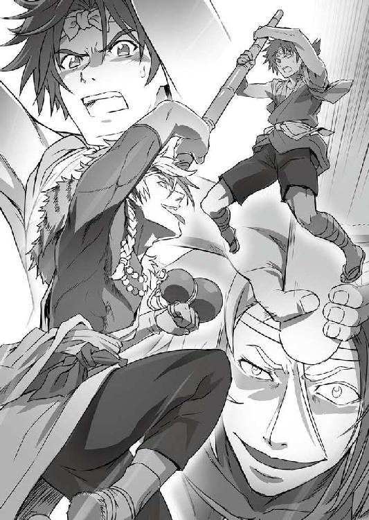
「いいねえ、その気迫！ そう来なくっちゃなぁ！」
わずかでも掠れば錐のように回転する切っ先が皮を巻き込んで肉を抉り、頸動脈をずたずたに引き裂くであろう一撃に、鬼兜がまたも臆さずに前へ出た。
ほんのわずかに右へ体をずらして皮一枚で突きを外すと、
「こんな風だったかぁ？」
またもふたりの体が交錯する寸前の位置で開いた右手をずいと突き出す。
完全に勢いがついている権兵衛は止まれない。
自分から鬼兜の突き出した右手に無防備な顔面を突っ込ませるような格好になる。一見、華奢な体つきに見える鬼兜にしては分厚い掌底が、したたかに権兵衛の顎を打ち抜いた。
こんな風だったかと鬼兜が言ったのは、それが町で侍たちの動きを封じた際に見せた権兵衛の技を真似たものだったからである。
ただし、その威力は段違いだった。
あたら勢いがついてしまっている分、受ける衝撃は二倍、三倍。その場で権兵衛の体は真後ろに一回転し、再び背中から地面に落ちた。受け身を取ることすらかなわない。
「あ......が......」
目を回す、などという生やさしいものではなく、ぐちゃぐちゃに歪んでしまった視界の中で権兵衛は呻いた。
「あーららぁ。もう〝あばげべん〟かよぉ？ あ、ひとつ教えといてやると、あばげべんってぇのは、蘭語で降参ってぇ意味な」
鬼兜が、倒れた権兵衛の枕元にしゃがんで顔をのぞき込んでくる。もっとも、今の権兵衛には、いきなり視界を塞いできたそれが人の顔なのかどうかも判然としていない。
「ほれ、頑張れ。立て。どうした。せっかくこの泰平の世の中でよ、忍と忍がお互いの技ぁ比べるなんて面白ぇことができるんだぜ？ もちっと楽しませてくんなきゃよぉ」
「し......のび......」
「お？ いいぜぇ。まだ意識があるか。そうよ、忍よ。町でおめぇを見た時、オレぁよ、ぴーんと来たんだ。代官と組んでから、やくざやら浪人やら色んな奴らをぶっ殺してきたんだがよぉ、どいつもこいつもみーんな弱っちくて話になんねえのよ」
ぴたぴたと、権兵衛の頬を手で叩きながら鬼兜が言った。
「賭場に行ったところでよ、おめぇもわかんだろ？ オレらみてぇなもんの目にゃぁ、壺振りが賽の目（サイコロの出た目）仕込むところが見たくなくても見えちまう。目を閉じてても音でわかっちまう。面白くねぇんだよなぁ」
とどめを刺そうと思えばいつでも刺せるというのに、鬼兜はやらない。だらだらとどうでもいい話を続ける。
「こりゃもう、代官がくれる舶来の酒......ぶらんでぃ、ってんだけどよ。こんぐれぇしか楽しみはねぇかと思ってた矢先に、町でおめぇを見つけたオレの気持ちがわかるか？ しかも、イモ侍どもから町人を守ってやるなんてぇ気持ちのいい男だよ。なぁ？」
そうこうしているうちに、歪みに歪んでいた権兵衛の視界が徐々にいつもどおりに戻ってくる。あがった息が整い、四肢に力が入るようになってくる。
「戦ってみてぇと思うのはよぉ、こりゃもう人情ってもんだぜ。嘘かほんとか知らねぇが、その昔、神君家康公の時世にゃよぉ、あの伊賀と甲賀が、それぞれの里から選りすぐった手練れ同士を集めて盛大に殺し合ったってぇじゃねぇか。そういうよぉ、胸躍るような戦いをしてぇのよオレは」
よし動く！ 確信した権兵衛は、相変わらず自分を見下ろしている鬼兜の両目を潰すべく、鉤に曲げた二本の指を勢いよく上へと突き出した。
「おっとぉ？」
鬼兜がひょいと身をのけぞらせて、またもその攻撃をかわした。
その間に、権兵衛は横に転がっていた竹槍を引っつかんでごろごろと地面を転がり、間合いを取って身を起こした。
「よーし、よしよし。良く立った。しけた話をして待ってた甲斐があったってもんだ。もう頭はしゃっきりしてるな？ じゃあ来い。よし来い。おめぇが何の気兼ねもなく全力を出せるように、別に燃やさねぇでもいい村を燃やして人の目をなくしてやったんだ。思いっきり来い！」
やはり鬼兜の狙いは、権兵衛が回復するのを待つことだった。それは、権兵衛にもはなからわかっていたことであったが、
「そ......そんなことのために村を......」
まるで、着物に穴が空いていたので繕っておきましたと言うような、いっそ親切心すら感じさせるほどの言いぐさで語られた惨劇の理由に、権兵衛は掌底を食らってひっくり返った以上の衝撃を受けた。
冷静になりかけていた頭に、再びかっと血が上り、
「ふざけるなぁっ！」
牙を剥くように吠え、権兵衛はがむしゃらに竹槍を突き出していた。
もう型も技もあったものではない。ただ、突く。ひたすらに突く。前へ、前へ。どこへ刺さろうが構わない。目の前の悪鬼にせめて一撃くれてやらねば、村の者たちに合わせる顔がない。
しかし、そんな権兵衛の思いも怒りも絶望も、すべてを嘲笑うかのように、
「なんでぇ。いくら突くのが本分の槍術ったってよお、もちっと何かねぇのかよ。ただそうやって前に突っつくばっかりじゃ、いっそ槍なんか持たねぇ方がましじゃねぇか」
鬼兜は、あくびでも出そうな調子ですべてを片手一本で捌いてしまうのであった。
「黙れ！ 黙れよこの野郎っ！」
突きの速度が、更に上がった。それでも、たった一撃すら鬼兜の体に届かない。
「しまったなぁ。やり方、間違えちまったか。こんな安い挑発に乗っちまうのかよ。忍にしちゃあ、ずいぶんと頭に血が上りやすいんだなぁ、おめぇ」
しまいには、空いた方の手でざんばら髪をかき回しながら言って、鬼兜が心底がっかりしたように眉をへの字に下げた。
「......このっ！ 当たれ！ 当たれよっ！」
「んー。こいつぁオレの見立て違いだったぜ。紅にゃまた白い目で見られるかもしれねぇが、ちっと策を変えるとするか」
激昂し、我を忘れた権兵衛にもう興味はないとばかりに、鬼兜が動いた。
何十、何百度目か突き出された竹槍を造作もなくつかんで、くいと手をねじる。それだけで、あっさりと権兵衛の手から竹槍が離れた。
「よいっと」
そのまま、竹槍の柄にあたる部分でがら空きになった権兵衛のみぞおちを突く。
さして力を加えた様子もなく、本当に軽く腹を突いたように見える一発。
ただその一発で、権兵衛の意識はあっさりと飛んだ。
焼け焦げた煤の臭いが鼻をつき、権兵衛は目を覚ました。
自分が今どういう状況に置かれているのか把握するよりも早く、背中と肩、そして腹に激痛が走った。
歯を食いしばり、身をよじってその激痛をやり過ごそうとした時、まず両腕が後ろ手に縛り付けられていることに気付いた。
次いで、両の足首も何やら肌にざらつく素材でできた紐のようなもので、がっちりとひとつに固められてしまっている。
どうやら足の指先同士を向かい合わせるような無理な形で縛り付けられているようで、動かそうとするだけでこれまた鈍い痛みがあり、権兵衛は更に顔を歪ませた。
「あ......ぐ......」
かすれた呻きが口から漏れた。
と、そこへ、
「おう、お目覚めかい。ご同輩」
下の方から聞こえてきたのは、鬼兜の声である。
それで、権兵衛はどうやら自分が両手両脚を縛られ、どこかへ宙吊りにされているのだということに気がついた。
まだ朦朧ともやがかかったような頭を振り、ともすれば再び飛びそうになる意識を細い気力の糸一本で繋ぎ止め、権兵衛は眼下に鬼兜の姿を探した。
いる。
何やら木箱のようなものにどっかりと腰を下ろし、どこから調達してきたのか、陶器の徳利をぐいぐいやりながらこちらを見上げる悪鬼の姿。粘り着く蛇の視線が、宙吊りの権兵衛を射すくめていた。
「いっちょ前に、酒蔵なんかありやがったんだなこの村。もっとも、こんなどぶろくじゃあよ、ぶらんでぃに慣れちまった身にゃぁ物足りねぇけどよ。うめぇ酒ばっか恵んでもらうのも考えもんだな、おい」
酒蔵と聞いて、また理解した。村に酒蔵はひとつしかない。松太郎という農民が、半分趣味で始めた蔵だ。
松太郎はどぶろく作りの名人で、毎年、村の男たちはこぞって自分の田で採れた米を松太郎のもとへと持って行き、どぶろくにしてもらう。
おまつ、与太郎というふたりの子供たちに手伝ってもらいながら、松太郎が楽しそうに蔵で仕込みを始めるのが、村の風物詩であった。
権兵衛が吊されているのは、松太郎の酒蔵で燃え残った太い梁の一本だった。
蔵の天井はすっかり焼け落ち、月明かりが真上から差し込んでくる
そう言えば、松太郎の一家はちゃんと山へ逃げられたのだろうか......。火に巻かれていなければよいが......。
目が覚めた途端にずきずきと痛み始めた頭の奥で、権兵衛がそんなことをぼんやりと考えていると、
「おめぇ、権兵衛って名前なんだってな。うちの下っ端に聞いたぜ。名無しのごんべぇかよって言ったのが、まさか大当たりたぁ面白ぇな」
空になったらしい徳利を乱暴に放り投げて、鬼兜が言った。離れた所で、徳利の割れる音がやけに大きく響く。
前にも誰かにそんなことを言われたな......。
相変わらず、もやの中にいるような心持ちでまた権兵衛はそんなことを考える。
「で、権兵衛よ。おめぇ、酒はやんのかい？」
そこへ、不意に鬼兜が訊ねてきた。
何を言っているんだ、こいつは？ またぼんやりと権兵衛は思った。
「あんだよ、また黙りか？ オレぁよ、はきはき受け答えできねぇ奴が大嫌いなんだよ。飲むか飲まねぇか、どっちか言やぁいいだけじゃねぇかよ」
かーっ、と大げさなため息をついて下を向き、鬼兜が嘆くように言う。
と、
「......言えよ。殺すぞ？」
ざんばら髪を振り立てるようにして、再び権兵衛を見上げた鬼兜の目と自分の目が合った瞬間、頭のもやが一気に晴れ、同時に権兵衛の全身を言い知れぬ恐怖が貫いた。
もう何刻前になるのかはわからないが、意識が飛ぶ寸前まで自分を赤子の手を捻るように翻弄していた鬼兜の顔が次々と脳裏をよぎる。
そして、今自分を見るこの目。冷たすぎる目だ。さっきだって、権兵衛は何度殺されていてもおかしくはなかった。この男にはそれだけの力があり、本当に殺そうと思えば決して躊躇などしない。
自分は、負けた。この男に完膚なきまでに敗れた。
今こうして痛みを堪えながらも何とか息をしていられるのは、鬼兜のほんの気まぐれな温情......いや、好奇心に過ぎないのだ。
一瞬にして、権兵衛はそのことを悟った。
今自分は、いつ切れるかもわからぬ頼りない蜘蛛の糸に縋っているだけなのだ。
「はい、今権兵衛様は死にました」
修練の時、タエがそう言うのを物騒な思いで聞いていたが、あれは本当だった。敗北と死は同義である。権兵衛は、はじめてそのことを実感していた。あまりの恐ろしさに、歯の根が合わなくなり、奥歯ががちがちと音を立てた。
「の、の、飲まない......」
やっとの思いで、権兵衛は喉からひと言だけ絞り出した。死にたくない。どんなことをしても生き延びたい。その一心だった。
さっきまで鬼兜に抱いていた怒りなど、首元に手をかけている死の恐怖に比べれば何でもなかった。自分の中に一本通っていた心棒が、ぼっきりと折れる音を権兵衛は聞いた。
鬼兜が、じっと権兵衛を見た。
「女は？ やったことあんのか？」
「な、ない」
「博打は？ サイコロでも、花札でも」
「ない」
「芝居見物なんてえのはどうよ？ 筋立てにもよるがよ、意外と面白ぇもんだぜ」
「ない！」
立て続けに問うてくる鬼兜に、権兵衛は間髪入れずに答え続けた。そのうち、じっと射すくめる毒蛇の目に、どこか面白そうな輝きが浮かんでくる。
「......まぁ、そうだろうなぁ。オレもちょいと......つっても十年前ぐれぇまでは、おめぇと変わらねぇ生活だったからなぁ」
いきなりその目を権兵衛から外し、鬼兜が意外なことを口にした。
「辛気くせぇ山ん中でよぉ、来る日も来る日も修練だのなんだの。もう、戦なんて起きねぇように世の中なってんのに、忍の使命も何もあったもんじゃねぇわな」
内心を吐露するようなその言葉が、権兵衛の胸にするりと入り込んでくる。
「オレぁもう飽き飽きしちまってよ。使い道のねぇ技を磨くことぐれぇ虚しいもんはねぇってな。どうしてくれようかって考えてた時に、親父がぽっくり逝ったのよ。里一番の使い手だのなんだの褒めそやされてたのが、卒中であっけねぇもんよ」
また、鬼兜が権兵衛の目を見た。
今度は、不思議なことにあまり恐怖を感じなかった。
「それで？」
思わず、話の先を促すように問うてしまう。鬼兜が、にいっと笑った。
「それで、里の長だとか言って偉そうにふんぞり返ってたじじいをぶっ殺して、里を丸ごといただいたんだ」
「な......！」
「里を出てぇって談判しに行ったら、わけわかんねぇ理屈並べてうるせぇからよ、ついカッとなっちまってな。......でも、そん時わかった。今まで鍛えに鍛え抜いてきた技を試すのがこんなに楽しいもんだったのかって」
その時の感触を思い出すかのように、鬼兜がうっとりと自分の右手を見た。
「そっからはもう止まらねぇ。気付けば、オレに楯突く野郎ども全員ぶっ殺してた。そしたらなんだ、いつの間にかオレが頭領ってなもんよ。一番強ぇ奴が、一番上に立つ。オレぁわかりやすいのが大好きなんだ」
また、鬼兜が笑う。一瞬、その笑みが無邪気な少年のものになったように見え、権兵衛は我が目を疑った。
「......ま、それで好きなことができるようになったもんだから、手下どもを引き連れて里を出たんだ。そっから先も何やかんやあったんだが、まぁそこは省くぜ。つまりオレが何をおめぇに言いてぇのかってぇとよ、好きにやりゃいいんだよ、好きに」
「好きに......やる......」
権兵衛は、おうむ返しに言った。すぐに、「おうよ」と鬼兜が応じる。
「おめぇは、オレと同じ目をしてやがる。隠しても無駄だ。わかりすぎるぐれぇに、わかっちまうんだよ。おめぇは、糞みてぇな毎日に飽き飽きしてる。違うか？」
違う。
権兵衛は即答できなかった。権兵衛の本心は、まさに今、鬼兜が言い当てたとおりだったからだ。
答えねば、今度こそ殺されるかもしれない。
だが、そうだと答えてしまえば、自分は何のために......。
死の恐怖と、心の声と、色々なものが権兵衛の中で混ざり合い、混沌とする。
そんな権兵衛の葛藤すらも見透かしたように、
「安心しな。今はおめぇを殺す気はねぇよ。むしろ、殺したくねぇ。自分でも何でかよくわかんねぇが、こんな話をしちまったら無性に殺すのが惜しくなった」
笑みを浮かべたまま、鬼兜が言った。
言いながら、腰帯の後ろに手を突っ込み、ずいと取り出したのは、権兵衛が見たこともない妙な筒型の道具だった。
「舶来品の短筒よ。蘭語で言うとな、〝ぴすとぅる〟ってんだ」
その道具を顔の前に持ち、狙いを定めるような仕草を鬼兜が取ったかと思うと、突然何かが破裂したような轟音が権兵衛の耳をつんざいた。
次の瞬間、わずかにふわりと体が浮かび上がるような感覚がした後、権兵衛の体は硬い土間の上に落ちていた。
「んぐっ！」
また息が詰まり、権兵衛の目に涙が滲んだ。
「さて、オレの話はこれでしまいだ。オレは帰るぜ。手下どもも全員引き上げさせる」
激しくむせている権兵衛を今度は上から見下ろした鬼兜が、またしても予想だにしないことを言い出した。
「さっき省いちまった、何やかんやの中にここの代官とつるむようになった経緯とかもあってよぉ、おめぇと遊ぶ以外にも、ちょいと気になることがあるんでな」
「......俺を......どうする気だ？」
「さっきも言ったろが。好きにしな。何なら、オレと一緒に来るか？ そうすりゃ、酒も女も博打もやりたい放題だぜ。ん？ どうだ？」
「な、何を言って......」
「ま、気が向いたらまた代官所に来な。金竹村の権兵衛が、鬼兜に会いに来たっつえば通るようにしといてやっからよ」
本気とも冗談ともつかない調子で言い放ち、鬼兜は本当に権兵衛に背を向けてその場を立ち去ろうとする。
「ま、待て！」
「その縄は、さっきからそこで見てる嬢ちゃんに何とかしてもらうんだな。あー、無理にてめぇで外そうとしねぇ方がいいぞ。つい癖で、もがけばもがくほど食い込むように縛っちまってっからよぉ」
「鬼兜！」
「じゃあな、権兵衛。縁があったらまた会おうぜぇ」
ふっ、と気配が消えた。
月明かりの中、静寂と煤の臭い、それにほんの微かな酒の香りがその場に残された。
権兵衛はもう、何が何だかわからないようになっていた。
なぜ鬼兜は、自分を殺さなかったのか？ そればかりか、捕えて以降は何ら危害らしいものを加えることなく解放したのか。権兵衛に、一切の反抗する気力が湧かないほどに叩きのめしておきながら。
「好きにしろ......」
鬼兜の言葉を反芻するように、権兵衛は口にした。
何を？ どう？
「......権兵衛様、お助けにあがりました」
傷ついた体を労るように優しく抱き起こしたタエの存在にすぐには気付かぬほどに、権兵衛の頭の中を答えの出ぬ問いが、ぐるぐると回り続けていた。
「お助けするのが遅くなってすみません。あの鬼兜という者......恐ろしい使い手です。権兵衛様に話をしている時も、まったく隙がありませんでした」
傷ついた権兵衛に肩を貸しながら、救出が遅れたことを詫びるタエに、
「そんなことより......村のみんなは......」
荒い息の下で権兵衛は訊ねた。
「ほとんどは竹林から山の方へ逃がしました」
「鬼哭党の連中は」
「私とおっ父、合わせて三〇人ばかりは倒したと思います。残りは、鬼兜が権兵衛様を解放してから引き上げたようですが、数までは......。でも、今は村にそれらしい気配はありません」
「三〇人......。はは、凄いなタエは。俺と違って、毎日しっかり修練してたもんな」
淡々と答えたタエに、権兵衛は自嘲気味に笑った。
「役立たずは、俺だけってことか」
「権兵衛様......」
うなだれる権兵衛の体を、タエがしっかりと担ぎ直した。
「ともかく、今は傷のお手当を」
心配そうに言うタエに、権兵衛は答える言葉もない。
体の傷よりも、心に負ったものの方が遙かに大きかった。
それからしばらく、まだぶすぶすと煙る村を......村だった場所を、ふたりは月明かりだけを頼りに歩き続けた。
やがて、北のはずれにある竹林が見えてきたところで、
「おお、権兵衛！ 無事であったか！」
向こうから駆け寄ってきた安宅が、
「どれ、それがしも肩を貸そう。つかまれ」
タエの反対側から、力強く権兵衛の体を担いだ。そして、また歩く。竹林を抜け、更に北へ。深い藪の中、逃げた村人たちが踏み広げて道のようになった所を通って山へ足を踏み入れて半刻ばかり進むと、わずかに開けた場所に出た。
人の気配がする。かなり多い。命からがら落ち延びた村人たちだった。
権兵衛たちがそこへ到着するなり、一斉にいくつもの視線が突き刺さってきた。恐怖に怯えきった視線だ。
「待て待て。案ずるな。おタエと一緒に権兵衛を運んできただけだ」
中には飛び上がって逃げだそうとする者もおり、慌てて安宅が声を上げた。
「ほれ、安心せい。権兵衛もこのとおり、無事だ」
安宅が、村人たちに示すように一度権兵衛の体を揺すった。
ゆっくりと、権兵衛は顔を上げて村人たちを見た。たとえ月明かりがあっても、普通の村人の目には暗がりに三つの影が固まっているようにしか見えないだろうが、権兵衛の目にはこちらを見る顔のひとつひとつを、はっきり見分けることができる。
皆一様に疲れ切り、精気の抜けた顔になっていた。怒りや怨みなどといった感情を権兵衛に向けることにすら疲れたという目だ。
それだけに、今の権兵衛にはその視線が胸を抉るように痛い。
「......俺の......俺のせいだ。すまない、みんな」
何とかそれだけを絞り出すように言うと、
「それは違います。権兵衛様のせいではありません」
闇に浮かぶ村人たちの中から、田吾が進み出てきて言った。安宅と代わる形で権兵衛に肩を貸し、太い木の根元に権兵衛を座らせると、
「......代官の背後で暗躍している鬼哭党というのが、はぐれ忍の集団であれば、遅かれ早かれこういう日が来ていたでしょう」
先刻、安宅の刀を借りて倒した忍から得た手裏剣を権兵衛の前に差し出しながら、田吾が言った。
「もし、権兵衛様に過ちがあるとすれば、鬼哭党が忍の集団であると気付けなかったこと」
「じゃあ、やっぱり俺が......」
「落ち着いてください。私も、最初に話を聞いた時には、敵がこれほどの連中とは思いもしませんでした」
それは、自分が見たままを田吾に話したからで、そこから鬼哭党の正体を推測するなど千里眼の持ち主でもない限りは無理な話だ。そう権兵衛は言ったのだが、田吾は「いいえ」と一度首を振ってから、
「私が鬼哭党の話を最初に聞いたのは、権兵衛様からではありません。安宅様からです。安宅様が死の危険を冒してまで川に飛び込まねばならなかった理由を聞く中で......」
手裏剣を懐に戻して言った。
「安宅様から......？」
権兵衛は首を傾げた。その横で、タエがはっと安宅を見た。
「安宅様は確か足を滑らせて川に落ちたはずでは？ 飛び込んだと言うなら、まるで自分からそうされたように聞こえます」
タエの問いに、安宅はやおら目を閉じ、そして、
「そう。おタエの言うとおりだ。それがしは、鬼哭党の手の者から逃れるため、自分から滝壺に飛び込んだのだ」
言った。
タエと権兵衛が同時に息を呑んだ。
「すまぬ。田吾殿にはじめてお目に掛かった際、ただ者ではない気配を感じたもので、すべてを包み隠さず明らかにしたのだ。胸襟を開き真心でぶつからねば、葉島弦齊の話を聞かせてはくれまいと思ったのだ」
安宅が続ける。
「それがしは、幕府内のさるご身分あるお方から命じられこの地に参ったのだ。だが、共に参った仲間は皆、鬼哭党の手に掛かって討たれた。辛うじて山中へ逃げ込んだそれがしも追い詰められ、一か八かで滝壺へ身を投げた。その後、権兵衛とおタエに救われたのだ」
「そうか......やっぱり......」
ふと、思い当たることがあって権兵衛はつぶやいた。
「何？ そなた、気付いておったのか？」
「いえ、安宅様のことではありません。俺が気付いたのは、田吾さんのことです。......田吾さん、葉島弦齊とかいう人のこと、やっぱり知っていて、安宅様に話したんだな」
権兵衛は、村に戻って安宅に再会した時に覚えた違和感のことを思い出して言った。
あの時、安宅は再会した権兵衛に向かってきちんと「権兵衛」と名を呼んでいた。
「俺は、安宅様をお助けした時に〝権べ〟の方を名乗ったんだ。田舎言葉も使って、ただの農民として接した」
安宅が〝権兵衛〟と呼んだということは、田吾が話した以外には考えられない。と言うことは、田吾は何かしら思うところあって自分たちの素性を明かしたのだ。
「田吾さんが、葉島弦齊のことを本当に何も知らなければ、そんなことをする必要もない。知らないとだけ伝えればいいはずだ」
権兵衛の言葉に、田吾がどこか痛そうな、寂しそうな表情をした。
「左様でございます、権兵衛様。私は確かに弦齊様のことを存じています。そして、安宅様が弦齊様の名前を出された時に、鬼哭党が我ら一族と同じく忍の者である可能性に気付くべきだった。私も誤ったのです、権兵衛様」
「どういうことなの、おっ父？」
「それは、弦齊様も我らと同じ忍である......いや、忍であったからだ。安宅様が弦齊様に何かお力添えを頼みたいのだとすれば、忍に関わることに相違ないはず」
「どうして田吾さんは、俺たちに安宅様に話したことを隠したんだ？」
タエの問いに続いて、権兵衛も訊ねた。
また、田吾の表情が少しだけ歪む。
「申し訳ありません。ですが今は理由を語るより、皆の安全を確保するが大事。これより、村の者も含めて皆を弦齊様のもとへご案内します」
言って、田吾は権兵衛のそばを離れた。少し離れた場所で座り込む村人たちの方へと歩いて行くのは、ここから移動する旨を伝えるためだろう。
その様子を見ながら、権兵衛は体を木の幹に預けて天を仰いだ。
しばらく楽な姿勢で休んだこともあって、だいぶ調子は良くなっている。頭痛も消えた。
どこへ連れて行かれるのかは知らないが、何とかひとりでも歩けそうだ。
「タエ......ありがとう。助かった」
そこでようやく、権兵衛はタエに助けてもらった礼を言った。
「もうあまり、無茶はなさらないでくださいね。権兵衛様の身に何かあったら、私の夢が果たせなくなってしまいます」
ぼさぼさに乱れた権兵衛の髪をそっと手で撫でつけながら、タエが笑った。
村人たちは疲労困憊で、夜の内ではまともに前も見えぬとあって、移動は夜明けを待ってからになった。
その時には、もう権兵衛の体力は大方元通りになっていた。
先頭を田吾と安宅、しんがりを権兵衛とタエが守る形で、間に村人たちを挟んで深い山道を行く。一〇〇人からで、村全体のおおよそ三分の一ぐらいは無事であったとわかる。あの混乱の中、タエたちがどれほどの奮戦でこの人数を救い出したのか......山を登るいくつもの背中を見ながら、権兵衛は胸が締め付けられた。
歩き始めて一刻（二時間）ほど過ぎたところで、村人たちが少々ざわつき始めた。
何事かと思って耳を澄ますと、想像していたよりもこの道行きが楽なことをお互いに訝っているようである。
確かに、まるで未開のはずの山をこれほどの人数で登っているにしては、随分と楽なものだと権兵衛も感じていた。
そう思ってからふと自分たちの足下を見ると、道がしっかりと踏み固められているし、難所になりそうな場所は木や石で段が切ってあり、登りやすくなっていることに気付いた。岸壁に手鎖を垂らしている所すらある。
明らかに人の手で養生されたものだ。
「葉島弦齊っていうのは、何者なんだ？」
注意深く周辺に目を配っているタエに向かって、何とはなしに権兵衛は訊ねた。
「忍であったとおっ父は言っていましたから、やはり私たちの一族に連なる方なのではないでしょうか。弦齊様とお呼びしていましたし」
「田吾さんが様を付けて呼ぶってことは、少なくとも死んだ俺の親父と同格かそれ以上の人間ってことか？」
「恐らく......」
などと、ひそひそ声で話していると、
「この先、谷を渡る。大丈夫、きちんと吊り橋をかけてあるから危ないことはない。ひとりずつ、ゆっくりとだ」
上の方から田吾が呼びかける声がして、権兵衛たちは目を丸くした。
「かけてあるって......まさか、おっ父が？」
「そういうこと......なんだろうな」
一体、田吾は何を隠していたのか。少なくとも、権兵衛とタエが生まれてからの一七年、そんな秘密を抱えていることなど、おくびにも出さなかった田吾であった。
行って、見て、確かめるしかない。
田吾の言う吊り橋が、一朝一夕にこしらえたようにはとても見えない、しっかりした物だったことにも驚きながら、権兵衛たちは山の中を進む。
そして、更に半刻。生き残った村人たちが、比較的年若い者が多かったとは言え、さすがに苦しい息があちこちから上がり始めた時、唐突に目的地へと到着した。
なぜそうと知れたのかと言えば、答えは簡単である。
その場所が、明らかに今までとは違う雰囲気の空間だったからである。
一言で言えば、そこは「里」であった。
斜面を削り、土地をならし、石組みで固め、木を切り倒し......これまでの道中同様、しっかりと人の手を入れた広い土地が、急に目の前に広がったのだ。
そこには、村と違って石を組んで作った家々も点在していた。家の壁は、長い年月風雨にさらされていたようで、どれもすっかり苔むしてしまってはいるが、造り自体はしっかりしており、今でも十分に人が住めるように思われた。
「こ、ここは一体......」
絶句する権兵衛同様に、村人たちも皆、唖然として辺りの様子を見渡している。
まさか自分たちが住んでいた村の奥、険しい山へ分け入った先にこのような場所があろうなどとは、想像すらしなかったはずだ。
「お、驚いた。隠れ里というやつか」
何度も肩を上下させて息を整えながら、安宅が言った。
「皆、もう一安心だ。険しい道をご苦労だった。腰を下ろして休んでくれ」
昨日の今日で疲れ切っている村人たちの間を回ってから、田吾がゆっくりと権兵衛たちの方へとやってきた。
「そのとおりです、安宅様。権兵衛様。ここは、数十年前まで一族が暮していた里です」
「ちょっと待ってくれ。田吾さん、俺たちは〝草〟だったはずじゃ」
「と言うと、ここに葉島弦齊殿がおられるのか？」
田吾の言葉に、権兵衛と安宅が、同時に違う質問をした。
苦笑した田吾が、まぁまぁとなだめて、一度ふたりから背を向けると、
「弦齊様、鎌井田吾作にございます。こちらは、先代から名を継ぎし竹箭権兵衛、並びに柳生一門の流れを汲む安宅清右衛門様」
深山に沁みいるような重々しい声で言った。
「や、柳生一門!? 柳生って言ったら、あの......」
「ご、ごんのひょうえ!? お主、ごんべえ、ではなかったのか？」
またも権兵衛と安宅が同時に声を発し、弾かれたようにお互いの顔を見た。
「それに、我が娘タエと、麓の金竹村の民を連れて参上致しました。どうぞお姿をお見せくださいませ」
田吾の太い声が続いた。
と、
「......そう大きな声を出さんでも聞こえちょる」
聞き覚えのない老人の声がした。しかも、権兵衛たちの背後からである。
え？ と思って権兵衛が振り向くと、団子のようにまとまって休む村人たちの間から、うっそりと立ち上がる人影があった。
「これを渡しておくでな。日に三度、火傷をしたところに塗り込むがよい。十日もすれば、すっかり良くなる」
禿げた頭の両脇に残る髪と、頭とは対照的に腹のあたりまで長く伸びた顎髭は、いずれも真っ白。修験者が着るような無地の着物を纏い、木の杖を手にした小柄な老爺であった。
着物は、元々は髪や髭と同じく白かったのだろうが、薄汚れてねずみがかったような色になっている。
「い、いつの間に......。まったく気配を感じませんでした」
口元に手をやったタエが驚いて言うように、その老人は本当に忽然とそこへ姿を現した。まるで最初から一行の中に紛れていたようにすら思えるが、無論そんなことはない。
老人は、傷を負った村人たちに何やら薬のような物を配って回ってから、しっかりとした足取りで権兵衛たちの方へと歩いてきた。
「ここへの隠し道をずっと手入れしておったのは、鎌井の倅じゃったか。すっかり立派になったのう」
まず、田吾を見て老人が言った。その声は穏やかだったが、身なりと相まって仙境にある者のような風格を感じさせるものだった。
「最後に弦齊様にお目に掛かったのは、この里を捨てる時でございますれば。もう、三〇年以上前になります」
ばっと地面に膝をついた田吾が、老人──葉島弦齊に答えた。その声は、感極まったように震えている。
「そんなになるか。俗世から切り離されて、山の中で遊んでおると年月の感覚がようわからなくなるでな。で、この若いのが当代の権兵衛じゃな？ なるほど、父親によう似ておる。髪がこう、元気よう跳ねとるところなぞそっくりじゃのう」
そんな田吾を「気楽にせぇ、気楽に」肩を取って立たせてから、弦齊が今度は権兵衛の肩を叩いた。
「親父を知っているんですか？」
そう言った権兵衛に、
「よう知っとる。お主の父と、そこの田吾に忍術を教え、一五の頃にこの里から下の村に送り出したのは、このワシじゃからの。里の......最後の生き残りとしてな」
髭をしごいた弦齊が、さらりと答えた。
「最後の生き残りって......。おっ父は、今までそんなことひと言も。私たちは、ずっと金竹村に住み着いていた〝草〟なんだって」
混乱した様子で、タエが田吾の袖にすがった。
「このことを知っているのは、元蔵の親父殿......亡くなった先代の名主さんだけだ。私たちは、名主さんの遠縁の子供ということにしてもらい、金竹村で暮し始めた。やがて先代の権兵衛様と私は村の中でそれぞれ妻をめとり、お前たちが生まれたのだ」
初めて明かされた田吾と権兵衛の父の過去に、その子供たちが驚いていると、
「......さて、見ればそう昔話をしておるような場合でもなさそうじゃが、一体何があった？ 金竹村の村人がなぜこうも傷ついてここにおる？」
村人たちに目をやった弦齊が、本題に入った。
また畏まった田吾が、これまでの経緯と、この場所へ村人を連れて来た訳を弦齊に話して聞かせた。
「......できますれば、事が片付きますまで村の皆をこの里で匿っていただければと。三〇年ぶりの再会で、弦齊様の静かなお暮らしを騒がせるのは誠に心苦しいのですが」
最後に頭を下げて訴える。
黙ってその話を聞いていた弦齊が、
「構わぬよ。無人になって久しいが、少々手を入れれば家も使えるじゃろう。食い物は、川と山のもので何とか凌いでもらうしかないがの」
鷹揚にうなずいて、心配そうに見守っていた村人たちに人好きのする笑顔を向けた。
それでようやく張り詰めていたものが抜け、村人たちの間に安堵の吐息と声とが広がっていった。
「......して、田吾作よ。事が片付くまでと申したが、その鬼哭党とやら、なかなかに厄介な手合いと見るが、どうするつもりじゃ？ ワシの力を借りようと言うのなら、無理な話じゃぞ。三〇年かけてようやく薄めたものを俗世の気に当てるわけにはゆかぬし、何よりワシはもう老いぼれじゃ」
田吾に目を戻し、弦齊が更に聞いた。
「それは元より承知。ですので、こちらの当代権兵衛様と、我が娘のタエを、弦齊様の手で鬼哭党の頭領相手に立ち回れるよう鍛えていただきたいのです」
権兵衛とタエの背後に回った田吾が、ふたりの肩に手をかけて言った。
「ふむう......。まぁそれは良いとして、お主自身はどうする」
「村の者が落ち着き次第、村の跡地に戻って目を光らせまする。もし、鬼哭党なり代官の手の者がもう一度村を狙い、山に入るそぶりあらば......」
「いや、もうよい。あいわかった。よもや俗世がそのような有様とは思わなんだが、話を聞いてしまった以上は目をつぶってもおれぬ。金竹村には、三〇年前のことで恩もあるでな。お主の頼み、聞き入れよう」
「ありがとうございます」
弦齊に頼みを快諾してもらったことでひとつ肩の荷が下りた様子で、田吾が礼を言った。
と、そこで、
「どうやらそちらの話はついたようだな。では、弦齊翁、立て続けですまぬが次はそれがしの話を聞いていただけまいか」
田吾の話が落ち着くまで一切口を挟まず、腕組みをして聞いていた安宅が、ずいと身を乗り出して弦齊の前に立った。
「単刀直入にお訊ねする。弦齊翁は、〝座偉羅のぎやまん〟と呼ばれる物に心当たりがござろう。それがしが推測するに、翁が自身の手で隠れ里の歴史に引導を渡し、年若かった田吾殿たちを下の村へとやった遠因にあたる代物かと思われるが、いかに？」
そう訊ねる口調は、真剣そのもの。
いつもの飄々とした雰囲気は一切のなりを潜めているので、驚いた権兵衛は、思わず安宅の横顔をまじまじとのぞき込んだ。
同時に、それまで包み込むような穏やかさを見せていた弦齊もまた、ぴんと糸を張ったような気配に変わるのがわかった。
「......なるほど。今回の一件に、よもやアレが絡んでおろうとは。ワシの話を聞く前に、委細を説明していただけるかな？」
じろり、と弦齊が鋭い目で安宅を見た。
それにまったく怯む様子もなく、安宅がうなずく。
〝座偉羅のぎやまん〟なる、物の名らしき言葉が出て以降、弦齊と安宅の間に漂う空気の重苦しさは尋常ではなく、権兵衛もタエも、それに田吾もまるで口を差し挟むきっかけがつかめない。
「現在、この下野を預かる代官の黒原直衛は、一〇年前までは長崎奉行の地位にござった。
その人柄は謹厳実直、法を重んじながらも情は深く、名奉行であるとの評判は、遠く江戸表（地方から江戸を示すことば）でも話題になるほど」
その空気を揺るがさず、安宅が弦齊の声に応じた。
信じられぬ思いで、権兵衛はその話に耳を傾けていた。真岡の町をやくざ者のはびこる暗黒街にし、農民たちに過酷な年貢を課す代官が、以前は名奉行であったなどと......。
「しかし、一〇年前のある日......。長らく内偵を進めていた、ある抜け荷（密貿易のこと）を扱う一味を壊滅すべく捕り物に赴いてから、彼は変わってしまったと聞きます。長崎奉行の役目を自ら返上し、この下野の代官職に就いてからというもの、農民から苛烈に取り立てた年貢米のほとんどを金に換え、勘定奉行を通じて江戸のご老中方に賄賂としてばらまいております」
話は、その場で金竹村の村人たちも聞いている。
自分たちから取り立てた年貢の使い道を知って、憤りの声があがった。
「して、その目的は？」
すっと杖を上げて農民たちを鎮めてから、弦齊が聞いた。
「出世のため......。既にご老中方の中には黒原の賄賂に転び、黒原を老中格に取り立てるべしと上様に奏上する動きも。早ければ来年には、黒原は今の上様が新たに設けられた勝手掛老中の補佐として、旗本の出としては異例中の異例ながら栄転する流れに」
言ってから安宅は、勝手掛老中とは幕府の財政を一手に取り仕切る要職中の要職であり、老中の中でも最も格の高い筆頭老中がこれを兼務するのだと説明を加えた。
その補佐ともなれば、幕府内における地位はもはや盤石と言える。いずれ勝手掛老中が退任すれば、補佐であった黒原がその後任たることも十分にあり得る。
「ひとつ解せぬのは......」
と、話を聞いていた弦齊が首を捻った。
「黒原とやらがそれほどの傑物であったなら、いずれ真っ当な方法で出世の王道を進んだであろうに」
「そこです」
安宅の言葉が熱を帯びた。
「黒原の暗躍を良しとしない心ある方々が内密に調べたところ、黒原が変貌した時期と抜け荷一味を壊滅させた時期とが重なることが判明しました。ここに何か原因があるのではと睨み更に調べを進めたところ、当時黒原が押収した抜け荷の目録に先ほどお訊ねした、〝座偉羅のぎやまん〟も含まれておりました」
「何と!?」
弦齊が目を剥いた。なぜ弦齊がそれほどまでに驚くのかわからぬ権兵衛は、田吾なら何か知っているかと表情をうかがう。
その田吾が、
「......アレが、黒原の手に」
完全に血の気を失った顔で、呆然とつぶやくのを見て、いよいよたまらず権兵衛は声をあげた。
「ま、待ってくれ。弦齊様も田吾さんも、安宅様も！ 何なんだ、そのナントカのぎやまんってのは」
「権兵衛様、落ち着いてください。安宅様がお話してくださいます」
そこをいつものように止めるタエ。そのやり取りがあって、一度息を整えた安宅が、権兵衛たちの方も見やりながら続ける。
「......弦齊殿はかつて、お名前は伏せるが、さるやんごとなきご身分の方より密命を受け、座偉羅のぎやまんを求めて清国へ渡られましたな？ 腕利きの配下を伴って」
突きつけるような声色だった。
弦齊が、ゆっくりと天を仰ぐ。そして、遠い過去に思いを馳せるように言った。
「......お主の言うとおりじゃ。連れて行ったのは、男も女も、当時この里に生き残っていた最後の忍たちじゃ。田吾作と先代の権兵衛はまだ若かったゆえに残したがの。そして、見知らぬ異国で苦労する中、多くの友と仲間を失いながらも、ついに座偉羅のぎやまんを見つけた。しかしワシは、それを......」
「お持ち帰りにはならなかった？」
「そうじゃ。アレは人の手に余る恐ろしい力を秘めた代物。それを悟ったワシは、忍としての使命を捨て、アレを闇へと葬った。葬ったつもりじゃった。そして......ワシひとりが生きて戻ってきた」
ふと権兵衛が気付くと、閉じられた弦齊の目尻には大粒の涙が光っていた。
「座偉羅のぎやまんは、人の心を惑わす。手にした者の欲望を際限なく大きくさせる。なぜ、ぎやまんが抜け荷としてこの地へとやって来たかはわからぬが、恐らくその黒原という者、既にぎやまんに魅入られてしまっておるのだろう」
涙を拭った弦齊が、薄く開いた目で権兵衛を見た。
「......何たる奇遇。いや、これも運命か。座偉羅のぎやまんに魅入られし者に戦いを挑んだのが、本当に最後の最後、我が里の末裔であったとは」
そう言って、何度も権兵衛の腕を節くれ立った手でさすり、弦齊は「すまぬ」と繰り返すのだった。
何が何だかわからぬまま、権兵衛はただその場で立ち尽くすしかなかった。
「弦齊翁、それがしの主は、弦齊翁がしたためた旅の記録と、報告を聞き書きにした文書をそれがしに示し、こう言われました。『天下の安寧を揺るがす物をこの日の本に置いておくわけにはゆかぬ。必ず黒原の手から取り戻し、葬れ』と」
と、安宅が言った。
「もう少し山を登ったところに、ワシの家がある。話の続きはそこでするとしよう」
肺の中をすべて吐き出すかのような、長い長いため息の末に弦齊が言った。
「権兵衛と、それからタエと言ったな。ふたりもついて来い。田吾作は、村人たちの世話を頼むぞ。この土地は自由に使って構わぬ。井戸の場所は覚えておるな。枯れてはおらぬから、まずは水を飲ませてやれ」
「ははっ」
これ以上の込み入った話を、疲れ切った村人たちの前ですることもあるまい。
そういう弦齊の意図を素早く察した田吾が、村人たちをより広い方へ、家のある方へと誘導していく。
権兵衛はタエと安宅と共に、先に立って歩き出した弦齊の後を追った。
権兵衛の胸には、先ほど涙ながらに「すまぬ」と謝った弦齊の声がしばらく残っている。
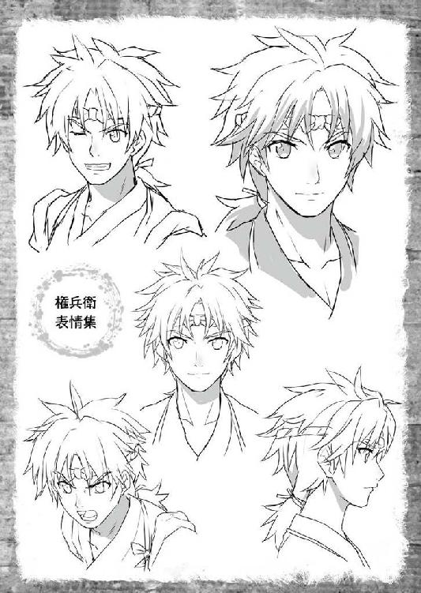
真岡の町は日が落ちても尚、妖しい賑わいに満ちていた。
建ち並ぶ町屋の屋根に上がってその様子を眺めていたタエは、眼下で乱痴気騒ぎを繰り広げる三組の男女を見やって、そっとため息をついた。
「何だおタエ、七日も経って、まーだ機嫌が直らんのか」
その背後でごそごそと屋根に上がってくる気配がして、安宅の声がタエの背を打つ。
「忍の世界のことは、それがしにもよくわからんが、弦齊翁をして『技量は完成されておる』とまで言わしめたのだから、普通は喜ぶのではないか？」
「そういうことではございません」
やっとの思いで這い上がったという体の安宅に向かって、タエは口を尖らせた。
「それとも、大役の連れが権兵衛ではなくて、それがしなのが気に入らぬのかな」
「......そ、そういうわけでも」
慌てて、タエは手を振って安宅の言葉を否定する。
「わかりやすい娘だのぉ、お主」
安宅がにやりと笑った。
からかわれていたことに気づいたタエの顔が、闇夜でもわかるぐらいに赤くなる。
「あ、安宅様！」
「怒るな、怒るな。独り者のひがみゆえの戯れ言だ。許してくれ」
「私だって、まだ独り者です」
「またそう意地を張る。権兵衛がお主のことを好いておらぬとでも思っているのか」
「......存じません」
ぷいと安宅から顔を背けたタエは、そのまま猫のような足取りで屋根の上を歩き出した。
「ま、待て待て。それがしは、密偵とは言えお主らと違ってただの侍だ。こんな場所を、それも暗い夜の中で行けるものか」
瓦の出っ張りにしがみつくような格好で四つん這いになった安宅が、必死でその後を追いかけ始めた。
「待てと言うに。それがしは、大荷物を背負っておるのだぞ」
そう言ってタエを引き留める安宅の背には、確かに大きな荷物が乗っている。風呂敷包みにした四角い箱のようなその荷物はかなりの重量らしく、安宅の息は荒い。
タエは、そんな安宅の方へ向き直り、
「もう少し進めば人通りは途絶えますから、それまで頑張ってくださいまし」
割と容赦のないひと言を放るのだった。
「やれやれ......。出立前に、権兵衛から扱い方の講義を受けておくべきであったな」
言って、安宅がまたおっかなびっくり進み始めた。
その様と言い草がまた、タエには何となく気に入らない。
権兵衛様と一緒なら、こんな面倒な道筋を辿らなくてすむのに。
権兵衛様なら、もっと素早く私の前に立って進んでくださるのに。
権兵衛様なら......。
考えまいとすればするほど、脳裏をよぎる顔がある。それを追い払うようにかぶりを振って、タエは安宅が追いついてくるのを待った。
タエと安宅が真岡の町に入ったのは、今日の夕刻であった。
田吾に案内されて葉島弦齊と見えた翌日、ふたりは旅の途についたのである。
権兵衛は今頃、弦齊の元で技に磨きをかけていることだろう。
本音を言えば、タエも権兵衛とともに弦齊の元に残り、権兵衛の修行を少しでも手伝いたい気持ちがあった。だが、安宅がさっき言ったように、
「見たところ、お主の技量は完成されておる。これ以上を望んでも、一朝一夕にどうこうできるものではないわい。お主はここに残る必要はない」
弦齊はあっさりとそう言って、権兵衛のそばに留まることを許してくれなかった。それと同時に、権兵衛には、
「お前さんの方は、まぁ少々しごきようがあるかもしれんの。はぐれでも何でもええが、仮にも頭領と呼ばれる忍とやり合うなら、せめてこの娘並みには仕上がってもらわんとな」
どこか小馬鹿にするような言い方で言って、権兵衛を引きずるようにしてどこかへ連れて行ってしまった。
弦齊にそう言われた後、自分の顔を見る権兵衛の何ともやり切れぬ辛そうな表情は、あれから毎晩夢に見るほどであった。
結局、ひとり残されたタエは、幕府の密偵であると正体を明かした安宅から、
「これ以上、金竹村に起きたような惨事を繰り返させぬためにも、それがしは一度町へ戻って何とか黒原の悪行を暴く証拠をつかめぬか探ってみようと思う。良ければ、手を貸してはもらえぬか？」
と、持ちかけられた。それを聞いた田吾からも、安宅の身を守るようにと命ぜられ、これも巡り巡れば権兵衛の役に立つと自分を納得させてうなずいたのであった。
「権兵衛様......」
我知らず、見上げた夜空に向かって権兵衛の名前が口をついたその時であった。
「......で、次はどう進めばいいのだ？」
芋虫の歩みでようやく追いついてきた安宅が、ぜぇぜぇと苦しそうにあえぎながら言う声が聞こえた。
「あそこに、そば屋の暖簾が下がっているのが見えますか？」
色々と思うところあるのをぐっと飲み込み、タエは安宅のそばにしゃがみ込むと、安宅の目線に合わせるようにして町の一角を指さした。
「確かにあるな。こんな人気のない路地裏で店を構えて、客が来るのかのう」
亀のように首を伸ばした安宅が、タエの指さす先に灯る小さな「そば」という提灯を認めてうなずいた。
「あのお店のご主人は、前は岡っ引きをなさっていたそうです」
「岡っ引きにも色々おるぞ。見回り先の商家から金子を巻き上げて懐にするのが仕事とうそぶく輩もおるぐらいだ」
「代官の息が掛かった商人と揉めて、表通りの店を取られてしまったのだとか。私には、真っ当な方に見えました」
「その眼力、信じよう。して、ここからどう行く？」
「飛び降りましょう」
「やれやれ......」
路地に人通りがないことを確かめ終えた時には、もう既にタエはふわりと宙に体を舞わせていた。先に降りて、またしっかりと道の左右を確かめてから、
「安宅様、どうぞ」
手を振って安宅を促した。
「簡単に言ってくれる」
道へ突き出ていたひさしに手を掛けてだらりとぶら下がった安宅が、何とかかんとか地面に足を着けて息を吐いた。
「そば屋に入るなら、せめて酒の一本でもつけたいところだな」
目の前に揺れる暖簾の奥からは、ほんのりと灯りが漏れている。
「行きましょう」
安宅が荷物を背負い直すのを待ってからタエは言って、暖簾をくぐった。
「へい、らっしゃ......」
主人の平助が釜場から顔をのぞかせてタエの顔を見た。その表情が、すぐに商売用の愛想顔から驚いたものに変わった。
「お嬢ちゃん......」
「あら、おミソちゃんじゃないの！」
同時に、これも聞き覚えのある声。
声のした方に顔をやれば、前に権兵衛と一緒に話を聞いた時と同じ小上がりの座敷で、お千代がこれまた目を丸くしている。
「平助さん、お千代さん、ご無沙汰しています」
タエは、ふたりに向かってぺこりと頭を下げた。
「ご無沙汰って、おミソちゃん。アナタ、田舎に帰ったはずじゃ......」
呆れたような声をお千代が出したところで、
「夜分に失礼する」
タエの後に続いて安宅が、ぬっと店に入ってきた。
「今日は千客万来だな」
平助が、唇の端っこだけを持ち上げて皮肉っぽい笑みを浮かべた。ぱっとタエが店内を見渡した限りでは、客はお千代ひとりだけのようである。
そのお千代だが、入ってきた安宅の顔を見るなり、
「あらん、いい男」
早速、以前に権兵衛を石と固めてしまったあのしなを作って艶声を出した。
「お武家様、よろしければこちらでご一緒にいかが」
流し目に乗せた異様な気配もあの時のままにお千代が言う。さすがの安宅もこれには閉口するのではと思いきや、
「おお、それはかたじけない。先ほどから、このおタエに引っ張り回され通しでな。喉がからからだったのだ」
お千代の風体を見ても何らいつもと変わらぬ調子で安宅は言って、足取りも軽く小上がりでお千代と差し向かいになってしまう。
「ささ、おひとつどうぞ」
「や、かたじけない。かたじけない」
駆けつけ三杯とは言ったもので、左手で首筋の後ろを何度となくさすりつつ、右手ではお千代が酌をした猪口をこれも何度となく口元に運ぶ安宅であった。
「まぁ、お強い。お酒の強い殿方は、アタシ好みだわぁ」
「いやいや、それがしなどはまだまだ。そんなことよりも、どれご返杯」
「あら、アタシみたいなのに注いでくださるの。お優しいこと。ますますいい男に見えてきちゃうじゃないの」
などと、つい今し方会ったばかりの相手に話しているとは到底信じられぬ、仲睦まじいやり取りをしてしまう安宅であった。
それをタエは、半ば呆れたような尊敬したような複雑な心持ちで見つめていたのだが、いつまでも所在なく立っているのもなんなので、安宅とお千代の邪魔にならぬよう小上がりの隅にちょんと膝を詰めて座った。
「ねぇ、おミソちゃん」
それを見たお千代が、安宅の酌を受けながら声をかけてきた。
「あの......おミソというのは、いい加減やめてもらえませんか」
安宅と違い、どうにもこのお千代が醸し出す迫力に慣れぬタエだったが、意を決して前から思っていたことを口にした。
が、
「細かいこと気にすんじゃないわよ。そういうこと、いちいち気にしてるからおミソなのよアンタは」
なぜだかタエには厳しいお千代に、ぴしゃりとやられて肩をすくめることになった。
「そんなことより誰なのよ、このいい感じのお武家様は。それに、権兵衛ちゃんの姿が見えないけどどうしたの？ あ！ まさか、権兵衛ちゃんに愛想尽かされてこっちのお武家様に乗り換えたってんじゃ！」
「そ、そんなことありません！ 勝手に当てずっぽうで言わないでください！」
縮こまったところに畳みかけてくるお千代に、タエが必死になって反駁していると、
「よせよせ、おなご同士が酒の席で噛みつきおうていては、せっかくの酒が台無しではないか」
いつの間にやら勝手に手酌に切り替えた安宅が、さらりと言って仲裁した。
「お、おなご？」
反応したのは、お千代である。安宅は、本当になんでもないことのように「そうよ」とうなずくと、
「お主が伊達や酔狂でそのような出で立ちをしているわけではないこと、それがしにはすぐにわかったぞ。なんと言うべきかな、信念のようなものを感じる。心は、おなごでありたいという強い思いよ。それならば、おなごとして扱ってやるのが本当であろう」
手酌の猪口を干しながら言った。
「お武家様......お名前を......ぜひお名前をお聞かせくださいまし」
うっとりと目を潤ませ、お千代が言った。
「それがし、安宅清右衛門。しがない旗本にして......幕府の密偵をしておる」
猪口を置いて背筋を伸ばし、居住まいを正した安宅が、聞かれてもいないことまであけすけに答えた。
「安宅様......」
お千代は、完全に夢心地なので置いておくとして、ぎょっとしたのはタエである。
まさかもう酔って前後不覚なのではないかと冷や汗をかく中、
「ただでさえ客が寄りつかぬところに、商売物ですらこんな質の酒しか手に入らぬとあっては、そろそろ堪忍袋も限界であろう。のう、主人？」
タエの心配をよそに酔った気配もなく、不意に鋭い目つきになった安宅が、くるりと背後を振り返った。
そこには、注文を取るための書き付けを手にしたまま固まっている平助の姿がある。
「お武家様、何が仰りたいので？」
安宅のそれにも負けぬ、元岡っ引きらしい探るような目になった平助が言った。
「そろそろ、代官の横暴にも我慢ならぬのではないかと申しておる。ここいらでひとつ、それがしたちに手を貸して代官にひと泡吹かせてやろうなどと思わぬか？」
いずれその話をするつもりでここへ来たのは確かだが、あまりと言えばあまり、唐突と言えば唐突に過ぎる安宅の切り出し方に、タエは息が止まるような思いであった。
内心、どうやって話の流れを本題に持って行ったらよいものかとあれこれ悩んでいただけに、完全に泡を食ってしまって目を白黒させていると、そんなタエのことなどお構いなしに安宅はひとりで突っ走っていく。
「今申したように、それがしは幕府からこの地の実情を探り、代官の黒原直江を罷免するに足る証拠をつかめと命ぜられている。聞けば主人、お主は元々腕っこきの岡っ引きだったのが、代官に嫌われて不遇をかこっているらしいではないか」
「お武家様、ご冗談も休み休みお願いしたいものですな。ご自分の口から、それがしは幕府の密偵であるから力を貸せなどと仰る方などありますまい」
「あのな、主人。もはや回りくどく腹の探り合いなどしている場合ではないのだ。まさに火急の用件ゆえ、こうして無理無茶無謀無策は承知で裸の言葉をぶっつけておる。ここにいるタエが世話になった、信用のおける真っ当な人間だと申すのだけを信じてな」
「お嬢ちゃんが？」
平助が、岡っ引きの目でタエを見た。
「......安宅様の仰ることは、本当です。前にお千代さんに見せていただいた蓑川村の皆さんに降りかかったことよりも酷いことが、私の金竹村で起きてしまったんです」
ここはさすがに退けぬと腹を決め、タエも安宅を援護するように口を開いた。
無理無茶無謀無策。裸の言葉だと安宅は言ったが、こうなればもう自分もそれに倣って洗いざらい話してしまう他はない。
タエは、お千代や平助と別れて村に戻って以降の出来事を一心不乱にすべて吐き出した。
これまでの人生の中で、これほど長く何かを他人に訴えたことはタエにはなかった。
なので、途中で舌はもつれるし、妙な言い回しにはなってしまうしで散々な説明になってしまったが、とにかく息の続く限りに話し続けた。
「......とまぁ、そういう事態なのだ。こんないたいけな娘が、これほど必死に訴える内容を、仮にもお上のお手先だった主人が黙って聞き流して良いものかと、それがしなどは思うのだが？」
タエの話が終わった頃を見計らって、安宅が口を開いた。頬を桜色に上気させ、肩で息をしているところを、ぽんと叩いて、
「なかなかの名調子であったぞ」
などと耳元で言う。
そこではじめて、タエは安宅にうまいこと担がれたのだということに気がついた。あっと思って安宅を見ると、一瞬、いたずらを仕掛けた子供のような顔になる。
「それがしが言葉を尽くすよりも、当事者が真心で訴える方が信を得やすいと思うてな」
先ほどとは違った意味で頬を染めたタエだったが、確かに安宅の言うとおりであったとすぐに気付くことになる。
「アタシは、信用するわよ。おミソちゃんの訴えはもちろんだし、安宅様のご身分とお役目もね」
まず、お千代が声に義憤を漲らせた。
「お千代、おめぇなぁ......」
何をそんな簡単にと肩をすくめる平助に対し、
「安宅様は、会ったばかりのアタシの生き方を全部受け入れてくださったわ。あんな風に言われたの、アタシはじめてよ。アタシにとっては、それで十分」
お千代は至極真面目な顔つきで言う。
一度、目頭を揉むようにした平助が、改めて安宅を見た。
「......それで、安宅様はあっしらに何をせよと仰るんで？」
ようやく聞きたい言葉を引き出したと言わんばかりの笑みを浮かべた安宅が、大きく膝を進めた。
「お主たちと繋がっておるはずの、反代官で結束している連中に渡りをつけてほしい」
「これはまた異なことを。確かにあっしも、こっちのお千代も今のお代官様にゃいい印象は抱いちゃいませんが......」
「だから、腹の探り合いはいいと言うに」
手で膝を打ち、乾いた音を店内に響かせた安宅が、平助を遮った。
「ろくに人通りもない裏路地で、客も寄りつかぬのに夜泣きの提灯を点けて店を開けておるのはなぜだ？ 男の意地というのもあろうが、それだけの理由ではあるまい。それがしの目は、それほど節穴ではないぞ」
「安宅様......」
「この店は、お主らと気持ちを同じくする者たちにとっては憩いの場なのであろう。代官を快く思わぬ者は、自然とこの店に集う。そこに談合なり合議なり......この際、愚痴の言い合いでも構わぬが、そういう寄り合いが持たれるのは必定であろうが」
「......お見それしやした」
安宅の言葉に、ついに平助が折れた。前掛けを取って、ぺこりと頭を垂れる。
「頭を下げたいのはこちらの方よ。細々とやっているとは言え、少なからず噂も飛ぶだろう。よくも今まで代官や鬼哭党に目を付けられなかったものだ。それだけでも、主人の苦労が偲ばれる」
「この町もまだ腐りきっちゃいねぇ、ということですよ。......ご公儀もそうだと思ってよろしいんですね？」
「請け合おう。どんなに鬼哭党を用いて代官が口を塞ごうとも、公儀に声は届いておる。決して、まだ大きな声ではないが、このままではいかんということを真剣に考えている幕臣も少なからずいるのだ。その方々の後押しをするためにも、力を貸してもらいたい」
平助の問いに、安宅がはっきりとした声で答えた。
まったく安宅というのは不思議な男だとタエは思った。
ふわりとした春風のような気さくさで人の懐に入り込み、いつの間にやら場の流れそのものを自分の土俵に引き込んでしまう。
あの用心深い田吾でさえ、ずっと隠してきた秘密を打ち明けてしまった。その手練手管には、何か底知れぬ恐ろしさのようなものすら感じる。
それでも、今は安宅のこの力が必要だった。
「お願いします！」
尻馬に乗るような格好になるのは承知の上で、タエも平助に向かって頭を下げた。
「......三日、お時間をくだせぇまし」
指を立てて顔の前で示した平助が、低い声で請け負った。
三日後、タエと安宅は、平助に連れられて夜道を歩いていた。
迷路のような裏路地を西へ東へと引き回されているうちに、土地勘のない安宅などはすっかり目を回してしまっている様子だが、
「何分、用心に用心を重ねてのことですので」
真剣な面差しの平助にそう言われてしまえば、黙ってついていく他はない。
そうしてやって来たのは、もはや町のどの辺りになるのかも判然とせぬ町屋の裏口で、閉ざされた木戸に向かった平助が、何か符丁（合言葉）のようなものであろうか、一定の間隔を置いて何度か木戸を手の甲で叩いた。
と、木戸の向こうで心張り棒を外す微かな音がした。
「皆さんもうお集まりよ」
中から顔を見せたのは、お千代である。先頭の平助がうなずいて、ふっと提灯の火を吹き消してからタエと安宅を木戸の向こうへと促した。
宿屋か、それとも小さめの商家だろうか。
裏口から続く中庭を抜け、縁台から家に上がると、すぐに二階へと通された。
二間続きになっている広めの二階には小さな燭台がふたつばかり並んでいるだけで、暗がりの中、燭台を中心にふたつの車座（複数人が円形になって座ること）ができている。人数は、併せて一〇人といったところであろうか。
「安宅様と、金竹村のタエさんをお連れしたぜ」
岡っ引きらしい物言いで、平助が集まった面々にタエと安宅を紹介し、車座の中に割って入る。
さっと人の動く気配がして、できた隙間に安宅がどっかりと腰を下ろした。
「安宅様、お荷物を」
言って、タエはこの三日を待つ間も常にそばに置いておいた安宅の荷物を受け取り、自分は安宅の背後に正座する。
「平助から話は聞いていると思うが、それがしが安宅清右衛門だ。後ろに控えているのは、金竹村の農民でおタエという」
時間が惜しいと、安宅がざっくばらんに切り出した。
「万一のことを考え、お主たちの素性は聞かぬことにする。まず、町が今どうなっているのか、一切合切を聞かせてくれ」
すぐに、集まった面々から町の現状を訴える声が上がった。その中には、権兵衛とタエが世話になった旅籠の女将も含まれていて、
「おタエちゃんと権兵衛さんを泊めた後、何日か経って罪人を匿っただのなんだのって役人が難癖をつけてきてねぇ。表沙汰にされたくなけりゃ、二両で手を打つなんて......わたしゃもう、頭にきちまって」
などと、役人への不満を口にした。
しかし、そんなものはまだまだ可愛い方で、それから代わる代わるに飛び出してくるのは、どれもこれも代官所の腐敗を嫌というほど思い知らされる告発ばかりだった。
商家に賄賂の強要をし、断れば事あるごとに有形無形の嫌がらせで商売の邪魔をする。それに耐えかねて町での商売を諦めてしまった店は数知れず。
そうして空き家になった所には、代官にすり寄る悪徳商人が別の店を構えたり、あるいは鬼哭党の肝煎りで堂々と賭場が立つか、いかがわしい出会い茶屋だの連れ込み宿だの呼ばれるものに変わってしまう。
その賭場から、博打は御法度と取り締まるはずの代官が寺銭（賭場で使うお金）をかき集めているというのだから、これはもうどうにもならない。
あちこちから噂を聞きつけた札付きが流れ込んできて、そうすると増えるのは、盗みにたかり、時には陰惨な殺しといった犯罪だ。
形ばかりは下手人をしょっ引いたところで、「博打で勝ったら勝ち分の三割を罰金として収めれば無罪放免」などというふざけた証文が代官の名前で乱れ飛ぶのである。
払えなかったり、逃げたりした者には容赦ない鬼哭党の制裁が待っていると知っている連中は、ますます狂ったように博打にのめり込む。
それでも勝てずに素寒貧（貧乏なこと）になった者をカモにした高利の金貸しが横行し、取り立ての挙げ句に搾り滓のようになった人間で寄せ場が賑わう。
寄せ場行きになればもう明日はない。年貢を納められなかった農村の人々と同様に、死ぬまで強制的に重労働だ。
やくざ者や博徒が、そうして身から出た錆で転落していくだけならまだいい。
彼らの横暴に怯え、毎日息を詰めて暮らす真っ当な町人たちからも、代官は事あるごとに何かしらの理由をつけて税をむしっていくのである。
「とにかくもう、代官は金、金、金！ 金の権化なんでございます」
「こないだ新しく増えた税なんざ、治安税ですよ？ 町の治安を守るために、町人は金を出せと。どこまで馬鹿にすれば気が済むのか」
「農民に鬼みてぇな年貢を課したり、町全体を食い物にするだけじゃ飽き足らず、元長崎奉行だか何だか知りませんが、その時に残した筋で南蛮船や清国の船が寄越してくる抜け荷まで捌いてるって話です」
今まで誰にも聞いてもらえず、溜まりに溜まった鬱憤を、まずは吐き出したいだけ吐き出させていた安宅が、
「そこよ！」
と、話が抜け荷に及んだところではじめて口を挟んだ。
「それがしが欲しいのは、その抜け荷の証拠。賭場の線をいくら切り込んだところで、無頼の徒が法を破って開いているものとかわされればそれでしまいだが、抜け荷に関しては確実に代官......黒原が直接自分で差配をしているはず」
全員の注目が、安宅に集まった。
「この際、毒をもって毒を制すだ。それがしから素性は聞かぬ。聞かぬから、この中にそっちの方面から代官に近付けそうな者がおれば協力してほしい。わざと賄賂を流し、代官に取り入るのだ」
安宅の提案に、場が一気にざわついた。
「あるいは、悪徳商人の類が賭場に出入りしておるであろう。そこでうまいこと親しくなり、情報を得るというのもある」
安宅が畳みかける。が、そこに冷や水を浴びせるように、
「そりゃあ、無茶ってもんです」
という平助の声が響いた。
「さっきの話にもありましたでしょう。真っ当な商いをしている方ほど、もう蔵にも店にも余計な金なんか残っちゃおりません。代官に取り入ろうにも、賭場で話を仕入れようにも、とにかくまずは金がかかる。あっしら全員が、最後の命綱にと隠してある全財産を集めたって一〇〇両にもなりゃしません」
「至極もっともだ。しかし、心配はいらぬ」
平助の反応は、タエも当然予期していた。安宅だって、予期していないはずがない。
くるり振り返った安宅と、タエの視線が絡まった。
安宅の意図を察したタエは、小さくうなずき、話が始まる前に安宅から預かった荷物の風呂敷包みを解いた。
「お金なら、ここにあります」
風呂敷包みの下から出てきたもの......それは、古びた千両箱であった。
タエは、さっと着物の襟元に手を入れて隠し持っていた鍵を取り出すと、千両箱にかかっていた錠前を外した。
瞬間、平助が、お千代が、その場の全員がごくりと息を呑むのがわかった。
千両箱の中には、なぜか所々に泥が付いているものの、黄金に輝く小判がぎっしりと詰まっていたのである。
「あ、安宅様......この金は一体」
目がくらむほどの大金に、陸に上がった鯉のように口を何度もぱくぱくと動かしながら、平助が干からびた声を出した。
「幕府から拝領したものだ......と言いたいが、違う。今の幕府にはそれほどの余裕は無いからな」
「では一体......」
「私の先祖が、忍であったことはお話ししましたよね？」
安宅から話を引き継いで、タエが言った。がくがくと、平助がうなずく。
「このお金は、かつて私の先祖がこの下野のあちこちに埋めた隠し小判の一部です。三〇年前まで一族を率いていた葉島弦齊様より隠し場所を教えられ、村からここに来るまでの間にそのいくつかを掘り起こしてお持ちしました」
「有事の際の軍資金といったところだろう。しかし、泰平の世になって忍の出番は失われ、今日までそのままにされていたのだ」
「それで土がついてるのね」
物珍しさと、燭台の火に照らされた黄金の輝きに引き寄せられるように一同が千両箱に集まり、次々と小判を手に取った。
「古びてはいるが、金は金。必要とあらば、残っているのを掘り出すのもやぶさかではないが......とにかく、これで当座の資金にはなるだろう。これだけ掘り出すのも、なかなか骨だったのだぞ。特に、どこぞの地蔵堂の近くに埋まっていたのを探すときには、幽霊騒ぎに巻き込まれたりなどして......」
箱の蓋を閉じ、苦労話を交えながら安宅が言いかけたが、
「......その話、乗った」
最後まで言い終えるより先に、暗がりの奥から声が上がった。
「安宅様は素性を聞かぬと仰ってくださいましたが......打ち明けまする。手前は、この町で両替商を営んでおります、三橋屋と申します。金そのものを商いの元とする故、代官に目を付けられ賄賂を求められましたが、両替商なればこそ金にはきれいで有るべしというのが我が家の家訓。突っぱねたのでございます」
両替商と打ち明けた三橋屋が、なけなしの勇気を振り絞った様子で続ける。
「しかし、それからというものは酷い毎日で......もうすべてを諦めて店を畳み、町を逃げだそうと思っていましたが......今日、平助親分の誘いに乗って良かった。その金、是非とも手前にお預けを。三橋屋の命と誇りにかけて、使える形に変えてお守りいたします」
その申し出が、口火を切った。
皆、公儀密偵である安宅の存在と、今目の前にある軍資金に賭け、一か八かの大勝負に出ることを決めたようだった。
次々に安宅の策に賛同する声があがった。
「安宅様、良かったですね！」
その声に胸が熱くなるのを感じながら、タエは顔を輝かせて安宅を見た。
「うむ......。皆の者、恩に着るぞ。決して悪いようにはせぬ。全員の力を合わせて、町を代官の手から取り戻すのだ」
安宅が力強く言い、集まった面々がそれに応じた。
「それにしても......」
と、一同が結束を確かめ合っているのを見たお千代が、不意におかしそうな声を出した。
「何だ？ 何か心配事でもあるのか？」
「いえね、皆さん町のあっちこっちにある賭場のせいで冷や飯を食わされてるってのに、おミソちゃんの持って来た千両箱を当てにして、分の悪い博打に出ようって言うんだから、おかしなものだと思っただけよ」
「そりゃもっともだ」
「違いない」
お千代の言葉に、わっと場が和んだ。
こうして、反撃の狼煙は静かに上がった。
まず最初に動いたのは、安宅である。協力してくれる町人たちにばかり危ない橋を渡らせるわけにはいかぬと、自ら変装して賭場巡りの役目を買って出た。
芝居関係の仕事をしているところに自分で渡りを付けて手配した付け髭にほっかむりという、ベタもベタな変装なのだが、それで意外とばれないものらしい。
三日も賭場をうろついているうちに、恥ずかしげもなく「代官所御用達」などという看板をぶら下げている旦那衆をいつもの調子で籠絡して話を聞きだしてしまう手腕は、さすがであった。
「どうやら代官は、三年ほど前に鬼哭党を自分の背中に隠し持つようになってからは、少々用心の箍が緩んでおるようだな。〝商売〟の方は、自分で逐一指示は出さずに上がりだけをいただいているようだ。これは付け入る隙があるぞ」
などと、拠点にしている平助のそば屋で報告しては、また嬉々として盛り場に繰り出していく。
一方、人生最初で最後の大博打と腹をくくった三橋屋たちの方も順調であった。
首を揃えて代官所に赴き、
「手前どもが愚かでございました。今後とも町で商いを続けたく思いますので、これはわずかばかりですがお詫びの印に......」
と、心にもないことを口にして、かっちりと封をした小判の包みを次々に差し出す。
この大博打に負ければ、良くて打ち首と誰もが心得ているから、芝居にも自然に熱が入り、まずは代官の側周りに仕える役人たちを金で殺すことに成功した。
一度、賄賂の味を覚えてしまえば、その欲は膨れあがるもので、もっともっとと言い寄ってくる中から代官の目の届かぬ場所で利殖に励む者を数人見繕って接待漬けにする。
下衆な儲け話に適当に相槌を打ちながら軍資金を用立て、酒や商売女をあてがっているうちに、接待を求めてくる日取りの間隔や傾向が見えてくる。
「どうも代官の目を盗んで連絡をよこしてくるのには決まった周期がありますようで。代官のことを気にせず羽目を外せる日というのがあるようですな」
と、程なく手がかりめいたものをつかんでくるのであった。
その間にタエは何をしていたのかと言えば、ただ待ち続けていた。
安宅が盛り場に出れば影からその身を護衛するし、三橋屋たちが席を設ければ天井裏に潜んでじっと様子を見守りもするが、基本的には待ち。
「必ずお主の力を借りるときが来る」
そう言い切る安宅の言葉を信じて、過ぎゆく毎日をじっと待っていた。
その間、胸に去来するのは、やはり権兵衛のことであった。
権兵衛と別れてから、既に二〇日以上が経っている。修行は、まだ終わらないのだろうか。便りのようなものもなく、今どこで何をしているのかは、まるでわからない。
生まれてこの方、これほど長く権兵衛と離れていたことがないタエにすると不安は募るばかりであるが、信じて待つより他はない。
空いた時間ができれば、気を紛らわせるように世話になっている平助の店を掃除したりして過ごしていたのだが、柱の一本から釜の底、厠（手洗いのこと）の手すりに至るまで、もうこれ以上どこも磨くところがないというところまでやり尽くし、
「あのね、おミソちゃん。物には限度ってものがあるでしょうに。こんな新築同然に磨き上げちゃったら、かえって落ち着かないったら」
方々への繋ぎ役を買って出たお千代に呆れられたところで、ついに動きがあった。
「それがしが耳にした話では、抜け荷の上がりが代官の手元に届くと、代官は武家屋敷の一角に囲っている妾の所へ通って一夜を過ごすとか」
「お金で引き込んだ代官所の役人が言っておりました。妾の家に通うのは決まって七日に二度なのですが、長崎から抜け荷の上がり金が届いた日だけは、前の日に通っていてももう一度足を運ぶと」
安宅と三橋屋たちが同じような情報を仕入れてきて、平助が元岡っ引きの肩書きに恥じぬ働きで裏を取ったのである。
「......罠であろうなぁ」
その日の会合を終えて、平助の店でお千代を相手に一杯やっている安宅が言った。
適当なつまみを持って来た平助も、
「三橋屋たちは、妾宅に抜け荷の証拠があるはずと息巻いておりますが」
何か含んだような言い方をする。
「代官が妾の家に通うのが芝居とは思えぬからな、調べれば何かしら出てくるとは思う」
「じゃあ、何が罠なんです？ 証拠が偽物とか？」
安宅の飲む早さをよく見極めて、ちょうどいいところで酒を足すということをすっかり覚えたお千代が言った。
「おミソちゃん、アナタわかる？」
「安宅様が気に掛けていらっしゃるのは、証拠が本物かどうかということではないのではありませんか？」
お千代の言葉にタエが応じると、安宅と平助が同時にうなずいた。
「証拠が本物であればそれで良し。だがな、たとえ偽物をつかまされたとしても、公儀は動けるのだ」
「偽物であっても、それが江戸に届けば、どうしてそんな物が必要だったのかと問い質すことはできるってわけですな。代官が言い訳を並べようにも、自分で江戸に出向かなきゃならねぇ」
「本人がいなければ抜け荷の上がりはどうなる？ 代官は、できる限りこの下野を離れたくないはず。偽の証拠を用意するなど、余計な手間が増えるだけだ」
なるほどねぇ、とお千代が手を打った。
タエはと言えば、次に安宅が何を言うのかを読んで身を引き締めている。
「証拠は有りや無しや。いずれにしても、それがしたちは調べぬわけにはいかぬ。それができるのは......」
「わたし、ですね」
読みどおりの言葉を安宅が発し、タエはすぐに請け合った。
安宅が罠であろうと言ったのは、証拠の真偽ではなく、妾の家に忍び込めば必ず鬼哭党が待ち受けているということである。
代官とて愚かではない。今は悪党に堕ちていても、かつては名奉行とうたわれた男だ。
このところ自分に逆らってきた商人たちが急に態度を変えてすり寄ってきたり、子飼いの商人たちからも、髭面の無頼漢が何やら探っているなどとご注進があれば警戒し、裏があると考えるに違いない。
大博打と言ったのは、その辺の事情も十分に含めてのことなのだ。
安宅には、ある程度は自分が泳がされ、集めた情報も代官側につかまされたものとわかっている。わかっていても、一度始めた博打はもう降りられない。
博打に勝てる切り札があるとすれば、葉島弦齊をして「完成している」と言わしめたタエの存在だけだ。
「やってくれるか」
「もちろんです。そのために、わたしをお連れになったのでしょう」
何もかもを察した上で、タエはしっかりとうなずいた。
タエにとっても、これは歓迎すべき流れであった。
もしも忍び込んだ先に代官がいれば、仕留める。鬼兜が出てきても、仕留める。
これはもはや、揺らぐことのない決意であるからだ。誰が何と言おうとこればかりは譲るつもりはない。
なぜなら、奴らは権兵衛を傷つけた。殺すには、十分すぎる理由だ。
「ひとつ、お願いがございます」
その決意を胸の奥に隠し、タエは言った。
「鎌を用意していただけますか？ 稲刈りや雑草取りに使うような普通の鎌で構いません。大きさもばらばらでいいので、できるだけ多く」
準備が整うが早いか、タエはすぐに行動を開始した。
偶然であったが、ちょうどその夜は新月で最も夜が暗いというのも都合が良かった。
平助たちに協力してもらって集めた、大小合わせて一〇本もの鎌を紐で腰にくくりつけたタエは、代官の妾がいるとされる屋敷の塀の上にいる。
町屋の喧噪から離れた場所にある武家屋敷である。広い敷地内にはいくつか篝火が焚かれてはいるが、他に灯りらしい灯りはない。
その篝火も、タエからすれば灯りと言うよりは単なる目印に過ぎなかった。
篝火があるということは、その近くに見張りの人員が立っているわけで、
「......」
一番手近な篝火の下に、ぼうっと立っていた見張りの首筋目がけてタエは手にした鎌の一本を放り投げた。
手裏剣代わりの鎌を狙った場所へ命中させるのは、タエの最も得意とする技である。
まず背後から見張りに襲いかかった鎌は、まず肩の上を通って首の動脈を切断した。そこから、見えない糸に操られているかのように軌道を変えて、正面から喉仏に深々と突き立つ。
声すら立てずに、ぐらりと見張りの体が傾いだ。その時にはもう塀を降りてすぐ背後に迫っていたタエの手が、倒れる時の物音すら立てぬように柔らかく見張りの体を支えて、植え込みの中に引っ張り込んだ。
まずひとり、手早く片付けたところで植え込みから周囲を素早く見渡し、次の目標を定める。池を挟んだ向こう側、屋敷の建物に近い所に立っていた見張りが、わずかに身を強ばらせるのが見えた。
と、近くの障子がすっと開き、中から出てくる人影がある。
恰幅の良い中年男と、婀娜っぽい女だった。男は、どうにもいやらしい手つきで女の腰に手を回しているのだが、女の方は満更でもなさそうに男の胸にしな垂れかかっている。 そのふたりが、代官と妾であることは一目瞭然だった。
とっさに鎌をつかんだタエの手に力が入る。見張りが、頭を下げて代官たちを見送った。
狙うか、諦めるか。微妙な距離であった。せめて代官の体が庭の側にあればと思うのだが、残念ながらそうではなかった。庭側にいるのは女の方で、ちょうど代官の首や胸などの急所を隠すように体を押し付けている。
一気に間合いを詰めて、代官、妾、近くの見張りを片付けるという手も考えたが、それは少し無茶が過ぎる。さすがに物音ひとつ立てずにというわけにはいくまい。
タエは、胸に手を当て、何度か深く息を吸い込んで、はやる気持ちを抑えた。
間違えるな、まずは抜け荷の証拠を探るのが第一。その途中で鉢合わせたのなら容赦なく仕留めるが、順番を違えてはいけない。
自分に言い聞かせ、歯噛みする思いで代官と妾の姿が見えなくなるまでじっとその場で堪えてから、再びタエは動いた。
代官たちを見送ったふたり目の見張りの背後に忍び寄り、さっと口元を押さえてから鎌の柄で脇腹を勢いよく突いた。首は、切らない。
屋敷に近く開けた場所ゆえに、派手に血しぶきが散って廊下や障子にかかることを恐れたのだ。目立つ場所を任されている人間が、急に姿を消すのも怪しまれる元になる。
「声を出さず、じっとしていれば一刻ほどで自由に身動きが取れるようになります。でも、無理に声を出したり、体を動かそうとすれば、地獄の苦しみを味わうことになりますよ」
決して顔を見られぬように注意してから見張りに言い置いて、タエはさっと体を離したかと思うと、今度は見張りの死角から屋敷の縁の下へと滑り込んだ。
鎌の柄で突いて動きを封じた見張りの臑から下だけが見えるが、動く気配はない。そのままタエは、腹ばいになって屋敷の床下をじりじりと進んでいく。
目指すのは、先ほど代官と女が出てきた部屋の真下だ。位置は、しっかりと頭の中に入っている。
ここと見定めた場所まで到着して、タエはゆっくりと頭上に手を伸ばした。床材と一緒に、その上に乗っている畳をほんのわずか持ち上げると、ぎりぎり膝立ちになれるぐらいの空間ができた。
その格好で頭の上に床板を乗せ、隙間から室内の様子を探る。
まず目に入ってきたのは、木目の美しい床柱で、向かって右手には違い棚。左手には掛け軸にした書のかかった床の間。
本来なら、壺やら皿でも飾られていそうなその床の間には、漆塗りの手文庫（手紙や書物を入れる小箱）がひとつ置かれていた。
「......罠であろうなぁ」
という安宅の声が、何度もタエの頭の中でこだました。
代官と妾が出てきた部屋に、無造作に置かれた手文庫。罠なのは最初からわかっている。それにしても、あからさま過ぎる。
これではまるで、馬鹿にされているみたいではないか。それとも、遊ばれているか。
そこまで考えたところで、タエの脳裏に閃くものがあった。
捕えた権兵衛に向かって話す鬼兜の姿である。
鬼兜は松太郎の酒蔵に吊るした権兵衛を、代官の命令だからと言うよりも退屈しのぎの遊びでいたぶっていたような印象だった。
権兵衛に死の恐怖を叩き付けて心を折ったかと思えば、あっさり解放したのも、そこから何か面白いことにならないかと思ってのことだったのではないか。遊びとして。
遊び。
そう、鬼哭党にとって......鬼兜にとっては、すべてが遊び。代官とつるんで非道を尽くすのも遊びなら、権兵衛をいたぶってみるのも遊び。
そして今、タエの前に置かれたこれ見よがしな手文庫もまた......。
「権兵衛様の無念、わたしが晴らします」
タエは決断した。
鬼兜の挑戦に、あえて乗る。
畳を跳ね上げ、タエは跳躍した。素早く手文庫を拾い上げ、中を検める。
そこには、勢いのある男文字で「当たり」と書かれた半紙とともに、きっちりと表装の施された一本の巻物が入っていた。
当たりの半紙は投げ捨て、タエが巻物を懐にしまい込んだ時だった。
床の間を除いた三方の障子、襖が勢いよく開け放たれ、風切り音とともに無数の手裏剣がタエ目がけて飛来してくる。
腰から左右一本ずつ鎌を引き抜いたタエの手が、目にも止まらぬ速さで動いた。
金属同士がぶつかり合う耳障りな音が響き、タエの鎌に撃ち落とされた手裏剣が次々と畳に突き立つ。
雨あられと飛んでくる手裏剣の波状攻撃がわずかに緩んだその瞬間、タエの両手から鎌が離れた。
闇を切り裂いて鎌が飛び、どうと人が倒れる気配がした。少なくとも、四人。
二本の鎌で四人を同時に仕留める技のキレに、自分を取り巻く気配がふっと浮き足だったのを見逃すタエではなかった。
続けざまにもう二本投げた。常人では考えられない、肘の関節がぐるりと一回転するほどに腕を捻って放たれた鎌が、空中に円弧を描くような軌道で飛び、暗がりから染み出すように現れた黒装束ふたりを首から袈裟懸けに斬り捨てる。
派手に血の花が咲いた。
その血煙に紛れるようにして、タエは庭のある廊下側へ体を滑らせた。そこへ、先ほど部屋を出て行った代官と婀娜な女が勢いよくこちらへ走り寄ってくるのが見えた。
代官が、べろりと顔の皮を手で剥ぎ取ったように見えた。次いで着物もかなぐり捨てると、下から出てきたのは背負った直刀を抜こうとしている黒装束である。
変装だったと頭で理解するよりも早く、タエは鎌を投げていた。
捨てた着物を盾に突っ込んでくるのを、タエの投げた鎌は宙を舞う着物を迂回するように飛び、着物が地に落ちた時には刀を握ったままで偽代官は沈んでいる。
更に一本、女に向かって投げた。
これまで投じた五本すべて、一撃で敵の命を奪っている必殺の鎌であったが、それがはじめてかわされた。
当たるぎりぎりのところで、ほんのわずかに首を捻ってやり過ごした女が、偽代官と同じく自分の手で着物を剥ぎ取ると、夜目にもそうとわかる深紅の忍装束に姿を変えてタエに迫る。
その速さは、偽代官とは比べものにならない。
「覚悟！」
深紅の女が長い髪を振り乱して叫び、逆手に持った直刀で斬り込んできた。
残る四本のうち二本の鎌を腰から引き抜き、タエはその攻撃を受ける。体の前で交差させた鎌の刃で直刀の一撃を受け止めて軌道を逸らし、押してくる力に逆らわずに受け流したところで、体を捌いて女の背後に回ろうとする。
が、女の技量はタエの想像を超えるものだった。
すぐさまタエの意図を読んだ女は、前につんのめったように見せかけて、自分の脇の下を滑らせるように刀を突き出してきた。
そればかりか、手の中に隠し持っていた分銅付きの組紐を投げ付けてタエの右手首に巻き付かせ、動きを封じてきたのである。
きつく締め上げられたタエの右手から鎌が落ちた。すぐさま左の鎌で巻き付く組紐を切ろうとするが、それよりも早く紐を引いた女によって体勢を崩されてしまう。
「傀儡の術。もはやお前の体は我が手の中だ」
女が言った。
タエは、何度か紐を切ることを試みたが、女が微妙に強弱をつけて紐を引く度に体がぶれて果たせない。
まさか、鬼兜以外にこれほどの使い手がいようとは......。自分の読みの甘さに、タエは愕然とする思いであった。
いや、違う。
普段のタエならば、すぐに女が並みの忍ではないことを見抜いていただろう。しかし、挑発的に置かれた手文庫と、恐らくは鬼兜の筆による「当たり」の文字がわずかにタエの判断を鈍らせていたのだった。
タエ自身は、あえて鬼兜の挑戦に乗ったつもりでいたが、やはり乗せられていたのだ。
権兵衛がいいようになぶられるのを黙って見ているしかなかった悔しさ、怒りが、手文庫を前に蘇ってしまい、自分でも気付かぬうちに冷静さを奪っていた。
「一対一、尋常の勝負ではどう転ぶかわからなかったが......これも忍の戦。悪く思うな」
一方、女も紙一重、薄氷を踏む思いでつかんだ優位とは自覚しているようで、決して驕った様子は見せようとしない。
「かかれ！」
女の号令が響いた。と、同時に、四方八方から一斉に、タエの右手を縛っているものと同じ組紐が伸びてきて、タエの全身をがんじがらめに捕らえた。
「くうっ......」
タエの顔が、苦悶に歪む。
万事休すであった。この情けない姿を、弦齊が見たら何と言うだろう。
何が完成された技量か。安い挑発に我を失い、あっさり敵の術中に落ちるなど、忍失格もいいところである。
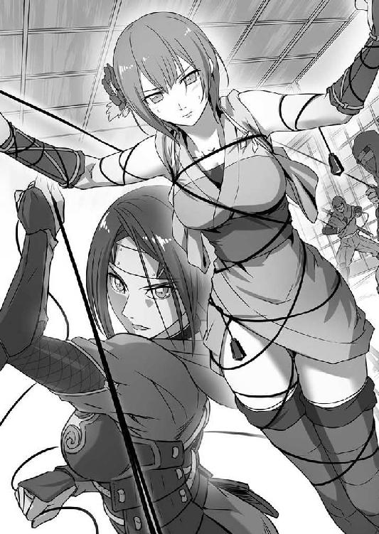
でも、それでも、だ。
「私は......権兵衛様を......」
タエは、噛みしめた唇の隙間から絞り出すように言いかけた。
「辞世の句は後だ」
そこへ氷の冷たさで女の声がかぶさり、組紐をまた強く引いた。全身の骨が砕けるような苦痛がタエに襲いかかったその時だった。
何かが、風を切って飛んできた。
それは、ちょうどタエと深紅の女との間に落ちて、この場の緊迫にそぐわぬ妙に間の抜けた甲高い音を立てた。
見ればそれは、一本の竹筒であった。
タエにとっては、見慣れた形のものである。権兵衛が細工物で作る竹の水筒と良く似ていたからだ。
ただ、水筒と違うのは、本来なら栓のあるはずの所から撚り合わせた黒い紐のような物がひょろりと伸びているところ。その紐の先端から激しい火花が散っているところだった。
まさかという思いで、タエはその竹筒が飛んできた方へ顔を向けた。
と、
「目を閉じろ！ タエ！」
この場では決して聞こえないはずの声が聞こえ、刹那、まるで屋敷の地下から日が昇ったかのような真っ白い閃光が周囲を包み込んだ。
タエの身に危機が迫っているのを悟った瞬間、考えるよりも先に体が動いていた。
葉島弦齊から授けられた一族秘伝の火薬調合術で作り上げた忍具──〝吠武〟と名付けられた竹筒を、肩も壊れよという勢いで投じて後、
「目を閉じろ！ タエ！」
権兵衛は、力の限り叫んだ。
声に気付いたタエが首だけを動かしてこちらを見るか見ないかというところで〝吠武〟が弾け、凄まじい閃光が放たれた。
タエの体をがんじがらめに捕えていた数人の忍たちが、まともにその閃光で目を焼かれて悶絶する隙に、権兵衛は一息でタエの側に駆け寄る。
「動くなよ」
タエの腰に残っていた鎌で絡みついていた組紐を切り、権兵衛はタエの体を両腕に抱えて跳んだ。二度目の跳躍で屋敷を囲む塀に上がったところで、
「追え！ 逃がすな！」
女の声がした。その出所目がけて、権兵衛はふたつめの〝吠武〟を投げつけた。
今度は閃光ではなく大量の煙幕が〝吠武〟から噴き出す。その煙に巻かれた忍たちが、盛大に咳き込む音を聞きながら、権兵衛は逃げた。脇目も振らずに、全力で逃げた。
「......当たり、か。鬼兜というのは、どこまでも人をおちょくった男のようだな」
平助の店で、タエが命がけで手に入れてきた巻物を穴が空くほど子細に眺めながら、安宅が言った。
「それで、実際にどうなんですか安宅様。その巻物は」
平助が運んできたそばを啜りつつ、権兵衛は訊ねた。
「当たりも当たり。大当たりだ。黒原と取引をしておった赤松屋という船問屋が、抜け荷の内容を事細かに記している。正直、これほどはっきりした証拠が手に入ると、逆に裏を勘ぐりたくなるな」
「赤松屋なんて、聞いたことないわね。やっぱり、偽物つかまされたんじゃ」
特盛りのせいろを平らげた権兵衛のそば猪口に、かいがいしくそば湯を注いでやりながらお千代が言った。
権兵衛自身は、ずっと安宅の方を見ているので、そこで「あっ」という顔になったタエとお千代が静かな火花を散らしているのには気付いていない。
「赤松屋というのは、恐らく長崎にある大店だな。確か、黒原が長崎奉行時代に摘発した抜け荷の元締めが、この赤松屋......」
巻物を閉じ、安宅が腕を組んで唸った。
「さて、どうしたものかな」
「安宅様、何も悩む必要はないでしょう。今すぐそれを持って江戸に走ったらいいじゃないですか」
そば湯まできれいに飲み干して、権兵衛はぐっと安宅に身を寄せた。
「だから、何か裏があるのではないかと言うたであろうに」
「裏なんかありません。鬼兜は、ただ単純に今の状況がもっともつれて、こんがらがるのを楽しんでいるだけなんだ。俺には、わかる」
権兵衛は、はっきりと断言した。
「なぜわかる？」
「俺をいたぶって遊んでいた時に、あいつが自分でそう言っていた。鬼兜は、最初こそ鬼哭党の手下や自分の技を使って非道を尽くすのを楽しんでいたけど、今はそれにすら飽きていると」
「それがしは、実際に鬼兜とやり合ったわけではないから何とも言えぬが......。お主の言うことが正しいとすれば、既に鬼哭党と黒原とは一枚岩ではないわけか」
「鬼兜は、本当の意味では最初から代官と手なんか組んじゃいないんです。あいつは、退屈で退屈でしょうがない日常を何とかして紛らわせたいだけなんだ」
「さっきからずいぶんはっきりと言い切るではないか。俺にはわかる、か？」
「ついこの間まで、俺がそうでしたから」
権兵衛の言葉に、安宅が「ほぉ」と目を細めた。
「士、別れて三日なれば刮目して相待すべし......かつて弦齊殿が渡った大陸で、清国が成り立つ遙か昔から語られることわざよ。三日とは言わぬが、隠れ里で別れて二〇日と少し、この短い間で変わったな、お主」
腕組みを解き、権兵衛の肩をぐっとつかんでから、その細い目で権兵衛の顔を正面からのぞき込む。
「妙に角張った所がなくなった。何があった？」
「......話さなきゃいけませんか？」
面と向かってそう言われると何やら面はゆく、権兵衛は困り顔で頭をかく。
「まぁ、それがしに話す義理はないかもしれぬ。だが、きちんと話さねばならぬ相手は、他にいるのではないか？」
安宅が、顎をしゃくった。
その先には、いつものように目立たぬ場所でちょこなんと座っているタエの姿がある。
権兵衛と視線を合わせたタエは、いたずらを見とがめられた子犬よろしく一瞬だけ目を逸した。が、やがて何かを思いきった様子で、再び権兵衛を見る。
「ちょ、ちょっとちょっと！ 嫌よ、権兵衛ちゃん。おミソちゃんなんかとそんな雰囲気出しちゃって！」
権兵衛とタエの顔を交互に見やったお千代が、焦ったように言った。
「余計な茶々を入れるな、お千代。ほれ、それがしが一杯奢ってやるから」
お千代の袖を引いた安宅が、半ば無理矢理に杯を握らせる。
「主人、酒だ。付き合い酒だからな。薄めるなよ」
「へいへい」
肩をすくめた平助が釜場に消えて、そこで権兵衛はゆっくりと口を開いた。
「握り飯を食っただけです」
タエと安宅が町へ向かい、田吾も村の見張りに戻った後、三日経っても弦齊は権兵衛に修行らしい修行をつけてくれなかった。
タエの面前で「お前はしごきようがありそうだ」などと言っていたのは何だったのかと詰め寄ると、
「あー。ありゃ嘘じゃ。嫌々やっとるのに、田吾作とあの娘を相手にした修練についていけておるなら、立派なもんじゃよ」
「う、嘘!?」
「おうよ。じゃから、今までの分の骨休めとでも思うてのんびりしとれ」
などと、適当にはぐらかされて話にならない。
四日が過ぎ、五日が過ぎた。体力はもう、有り余るほどに回復している。再び、しびれを切らして談判に行くと、今度はどこへ消えたのか弦齊の姿はどこにもない。
とにかくもう、何かしていないと落ち着かぬ気持ちになって、権兵衛は避難してきた村人たちが集まっている集落の方に足を伸ばしてみた。
そこで目にした光景に、権兵衛は稲妻で撃たれたような衝撃を受けたのだった。
「......みんな、耕してるんだよ」
じっと権兵衛の語りに耳を澄ませている安宅に、タエに、お千代に、権兵衛は言った。
「耕してって......あの隠れ里の土地をですか？」
「ああ。里のどこかに残ってたボロボロの道具を使って、足りなきゃ自分の手と足で、硬くなった土を掘り返してるんだ。そこに、逃げるときに何とか持ち出してきた種芋やら青菜の種だのを撒いてるんだ」
彼らが何のためにそんなことをしているのか、権兵衛には理解ができなかった。
ただ、一心不乱に農作業に打ち込む姿が無性に気になってしまい、ふらふらと村人たちの方へと足を向けていた。
近づいてくる足音に気づき、当然何人かがこちらを見る。
その視線を受け、権兵衛の足が止まった。いや、すくんでしまった、と言うべきか。
「......権べはよ、村のみんなの前でええかっこがしてぇだけなんだ！」
死んだ仙太の言葉が、まだ権兵衛の胸に抜けない棘となって突き刺さっていた。
仙太の死後、村を捨てようと説得して回った時に向けられた、村人たちの灰色の視線も。
それに加えて、権兵衛の暴走が引き金となって村そのものが焼き尽くされてしまったのだ。多くの者が家を、友を、愛する家族を失っていた。
改めて考えるまでもなく、権兵衛には彼らに合わせる顔などないのだ。
全身に汗が噴き出した。その分、口の中は一瞬で干上がり、舌が喉に張り付く。
がくがくと膝を震わせ、権兵衛は何も言わずに村人たちに背を向けてしまった。寝泊まりをしている弦齊の家に逃げ帰ろうとした。
と、
「待って！ 待ってけれ、権べ！」
「......血相変えて走ってきた三郎さんが、俺を呼び止めるんだよ。包帯巻いた足を引きずりながらさ、頼むから待ってくれって」
「恨み言を言いに来たわけじゃぁ、ないわね」
「ああ。最初は、何を言われてもじっと黙って我慢する覚悟だった。でも、三郎さんは俺の肩をつかまえて......謝るんだよ。辛ぇ目に遭わせて済まなかったって」
三郎が何度も何度も頭を下げる間に、いつの間にか権兵衛は村人たちに取り囲まれていた。そうして集まった誰もが、権兵衛に向かって謝るのだ。
「すまねぇな、権べさ。おめぇさんが......いや、おめぇさんだけじゃねぇ。タエちゃんも、田吾さも村のために必死にやってくれたのによぉ」
「権べたちがおらんかったら、おらたち今頃、みーんなあの世行きだったべ」
「なのによぉ、えれぇ化けもんでも見るような目で見ちまったりして......。おらぁ、自分が恥ずかしいだ」
権兵衛の目に、涙が溢れた。
村人たちにもう一度受け入れてもらえた喜び。それも確かにある。しかし、それ以上にやはり申し訳なさ、すまないという思いが涙に変わるのであった。
権兵衛は、村での変わりばえしない毎日に飽き飽きしていた。
そして、そんな毎日の繰り返しに何の疑問も持たず、流されるままに生きている......少なくとも、当時の権兵衛の目にはそう映っていた村人たちを、権兵衛は馬鹿にしていた。
自分たちの身に危機が迫ってもなお、恐れ、戸惑うことしかできない人々に呆れかえっていた。
俺は、お前たちとは違う。
代官所の横暴に対する怒りの気持ちに嘘はない。
しかし、権兵衛が村人たちを扇動し、先頭に立って戦おうとしたのは、それ以上に自分の意志と力を認めさせたいという思いがあったからだ。
町へ行くことを買って出たのも、外の世界を自分の目で見て、いつか村を捨てて自由に生きる時のために情報を仕入れたかったからだ。
村のため、村人たちのためではなく、自分本位の身勝手な考えで突っ走り続けているということは権兵衛自身が誰よりも自覚していた。
ただ、それを大っぴらに認めて言い放つ勇気もなかった。
仙太の死という、自身が招いた悲劇を目の当たりにしてもなお、怒りを隠れ蓑にして本心を偽り......そして、村は燃えた。
自らの楽しみのためだけに躊躇なく村を燃やした男、あまりにも自分の欲望に忠実なその男に挑み、敗れ、意地も誇りもへし折られてようやく向き合った。
謝るべきは自分だ。俺が馬鹿だった。
「気が付いたら、手伝ってた。柄が半分に折れた鍬を振って、硬い土掘り返して。一心不乱だよ。日が暮れるまでずっと」
へとへとに疲れ果てて弦齊の家に戻った権兵衛を待っていたのは、小さな竈に乗った鉄釜から立ち上る、米の炊ける匂いだった。
「おう、戻ったか。すまんの、黙って留守にして。ここには、臼なんて気の利いた物がないもんでな、下で田吾作に借りておったのだ」
その竈の前に座って火の番をしていた弦齊が、鼻の頭に煤をつけて権兵衛を振り返った。
「臼......ですか？」
「村人たちがな、米を持ってきおった。匿ってくれた礼だと言うてな。小袋ひとつ分の量じゃが、それがどれほど大切なものかぐらいは、ワシにもわかる」
弦齊が、竈の火に息を吹き込むのに使う竹筒で、肩を叩きながら言う。
「それで、わざわざ田吾さんの所まで行って搗いてきたんですか？」
「わしはいらぬと言ったのだが、引き下がらんでのう。ならばともらい受けたが、どうせなら美味しく食ってやらねば、罰が当たると思うてな」
田吾の話では、もう八〇を越えようかという年であるにもかかわらず、弦齊はどこか子供のような顔つきになって笑った。
そうこうしているうちに蒸らしも終わり、米が炊きあがった。
釜の蓋を取ってみれば、目にも眩しい純白である。村では、年に数度食べられるかどうかという、白米だけの飯だ。
村人たちの手伝いをしたおかげで腹の中が空っぽだった権兵衛は、盛大に生唾を飲み込み、憚ることなく腹の虫を鳴かせた。
「元気な腹の虫じゃのう。どれ、握り飯にしてやろうかの。田吾作の奴が気を利かせて味噌と海苔も持たせてくれたでな」
子供の笑顔のまま楽しそうに言いつつ、弦齊が手桶に汲んだ水で濡らした手を、もうもうと湯気の立ち上る釜の中に突っ込んだ。
「ワシゃの、三角に握るのが得意なんじゃ。お主の親父がこんな小さい頃には、よう麦飯を握って食わせてやったもんよ」
炊きたての米はまだとんでもない熱さだろうに、事もなさげに涼しい顔で適当な量をつかみ取ると、中にちょんと味噌を塗ってから器用な手つきで三角に握っていく。
最後に小さな海苔を巻いたのを、
「ほれ、食え。野良仕事で、腹が減ったじゃろう」
まず真っ先に権兵衛の前に差し出すのだった。
もう辛抱たまらず、権兵衛はその握り飯をひったくるようにして口に含んだ。
うまい。
とてつもなく、うまい。
まるで仙郷にあるという伝説の果実を食べたのではないかとすら思うほど、あふれ出した滋味が権兵衛の口の中で踊った。
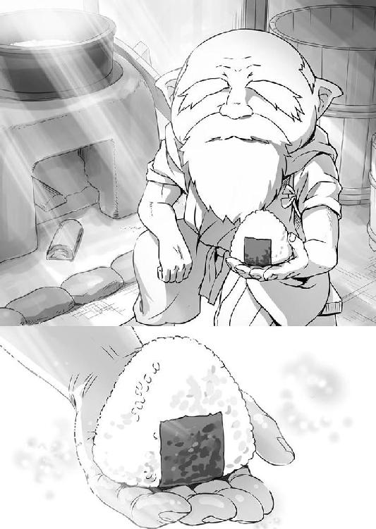
その、たったひと口の握り飯に、権兵衛は真に守らなければならないもののすべてを感じ取る思いであった。
「もうひとつ食うか？」
ふたつ目も、押し頂くようにして食った。三つ、四つと弦齊が差し出すままに平らげた。
食べ進むうちに塩気が強くなるように感じたのは、堪えても堪えても止まらぬ涙が米粒に染みこんだせいであろうか。
「......お願いします、弦齊様。どうか......どうか俺に、鬼兜を倒し、代官を討つ力と技を授けてください。これからも、俺たち農民が安心して毎日を過ごすために」
結局、釜にあったほとんどをひとりで食い尽くしてしまってから、権兵衛は今更のようではあるが額を地面に擦りつけて、弦齊に再び頼み込んだ。
「己が何者であるかを知ったか、権兵衛よ」
弦齊が言った。
「良かろう。ではまず、お主に相応しい得物を手に入れて来るがよい。あの竹林で、田吾作は毎日綺麗に手入れをしてお主が訪れるのを待っておるぞ。修行は、それからじゃ」
「鬼兜、貴様何を考えておるのだ！」
寄りかかった脇息を嫌な音を立てて軋ませ、苛立たしげに体を揺すった黒原が、鬼兜に詰め寄った。
「何って......博打ってぇのは、賭けるもんがでかけりゃでけぇほど燃える。ひりつく。熱くなるなんてぇのは、常識じゃねぇか」
受ける鬼兜。黒原と向き合い、朱塗りの杯にたっぷりと好物の〝ぶらんでぃ〟を満たして、ゆるゆるとやっている。悪びれた様子は、どこにもない。
「赤松屋の書き付けなどと......どこから手に入れてきた！」
「おいおい、耄碌すんには早えだろ。長崎に手下やったに決まってんじゃねぇか。剣術の方はからっきしなんだが、やたらめったら足の速えのがいてな。そいつに頼んだんだ」
「誰がそんなことを許したのだと聞いておるのだ！」
「誰の許しももらっちゃいねぇよ。......ま、強いて言うならオレ自身ってか？」
手の平よりも大きな杯を呷って、鬼兜は平然と答えた。声ばかりは面白そうにしているが、杯の縁から覗ける目に剣呑なものが宿っている。
「今更こんなこと言わせねぇでほしいんだけどよぉ、オレはあんたが『お前が面白いと思うことすべてをやらせてやる』っつーからよぉ、手ぇ組んだんだぜ？」
「酒、女、博打、食い物......なにひとつ不自由させてはおらんだろうが」
代官が、わずかに声の調子を落として鼻白んだ。
「がっかりさせるようなこと言わねぇでくれよぉ。オレたちがこの町に初めて来た時、お代官様が直々に開帳した賭場に乗り込んでその場の全員ぶっ殺してよ、あがりをいただこうとした時のこと、覚えてんだろうが。え？」
「わ、忘れるものか。あれが、わしと貴様の縁の始まり」
「そうよ。そん時のお代官様によ、オレぁ参っちまったんだ。お供がみーんな血の海に沈んじまって、てめぇの命も危ねぇってのに、『わしについてくれば、こんな山賊ごっこより遙かに面白いことをさせてやるぞ』ときたもんだ。......ありゃあ、今思い出してもぶるっと来ちまうぐれぇ最高だった」
遠い目になった鬼兜が、うっとりと天を仰いだ。
かと思うと、やにわに表情を一変させ、
「それがなんでぇ、抜け荷の証文を取られたぐれぇでおたつきやがって。見たくねぇ、オレぁ見たくねぇよ、そんなお代官様はよ」
眉をハの字に下げて、駄々をこねる子供のように言う。
それを見た黒原が、盛大に舌打ちをした。
「三年前とは時勢が違うわ。それにな、そういうことはお前の言う博打に勝ってから言うものだ。元はと言えば、お前が〝さぁべす〟だと嘯いて公儀の密偵を斬る約束をしたのだろうが」
「そこを突かれると胸が痛ぇなぁ確かだわな。紅の奴ぁ、もうちっとやる女かと思ったんだけどよぉ。どうもこのところ精彩を欠きゃあがる。あっちの具合は、お代官様のお墨付きもいただいてんだがなぁ」
「さすがに連中も馬鹿ではない。証文を奪い返されぬよう、策も講じておろうが。江戸へ届いて、厄介な連中の目に触れれば、また余計に金がかかるわい」
憮然として、黒原が太く鼻息を抜いた。
「そうさなぁ。......どうやら向こうさんは、お代官様が頼りになさってる声の主についてもご存知の様子らしいし」
そんな黒原を見やって、鬼兜がさらりと言った。
それは、ごくごく自然な声色と物言いであった。が、聞いた方の黒原は瞬間、目を皿のように見開き、弾かれたように鬼兜を見た。
「鬼兜......貴様、どこまで......」
「言ったろ？ あっちの具合はお墨付きってよ。切った張ったの方はしくじってもよぉ、女の真価はそこじゃあねぇ。だからオレぁ、あいつをずーっと側に置いてんのさ」
「馬鹿な！ わしは、そんなことを話した覚えは......」
にやりと笑う鬼兜。対し、黒原の方は苦虫を噛み潰したような顔になる。
「くノ一の術を甘く見ちゃいけねぇや。ありゃあ、ちっと気ぃ抜いたらオレですら持ってかれちまうんだ」
「おのれ......」
「いい目を見たんだ、おあいこだぜ。ま、一応釣り銭代わりに教えておくとな、証文を分捕る絵図を描いた安宅って野郎は曲者だぜ。元を辿れば柳生に連なる家柄だが、ちょいとした不始末が元で先代の頃にお取り潰しの憂き目に遭ってるってぇ話だ」
「そ、それはまことか？」
「紅の調べに間違いはねぇよ。......で、だ。長らく冷や飯を食わされてきたが、勤めを果たしゃあお家再興間違いなしってんで、野心に燃えて乗り込んできたって寸法よ。噂じゃ、当代の上様は新陰流の達人で、殊のほか武芸を奨励なさっているとか。さぞかし、江戸の柳生宗家とも昵懇なんだろうなぁ」
「では、事と次第によっては上様に直接......」
「ああ。老中方を飛び越えてってこともあり得るぜぇ。柳生の殿様の頭ん中は、三代様の頃の栄光をもう一度ってな。そしたら、金ばらまいてどうこうなんて話じゃねぇわな」
「き、貴様......まさか、わざと......」
「おいおい、落ち着きなって。たまたま、たまたまだよぉ。でもよ、最高にひりひりしてきやがるだろ？ やっぱよぉ、人生ぬるま湯に浸かってたんじゃ面白くねぇやな。張り合いってもんが必要だよなぁ」
「ふ、ふざけたことを......」
黒原が、がばと脇息から身を起こして鬼兜の胸ぐらにつかみかかった。
鬼兜は、やんわりとその手を外して、
「今度は、オレが自分で出る。一度、肥えさせるために逃がした魚も戻ってきてるしな。火だけ燃え広がらせて、あとは眺めてるだけなんてこたぁしねぇよぉ」
じいっと黒原の目をのぞき込んで言った。
「その言葉、まことだろうな？ 斬れよ？ 小賢しい密偵も、農民の皮を被った忍どもも」
「その代わり、片付いたら洗いざらい教えてもらうぜ？ 〝座偉羅のぎやまん〟のこと」
「......」
黒原は、すぐには答えなかった。
鬼兜の顔を睨み付けたまま、気を静めるように何度となく深呼吸をする。
と、その時であった。
「ご注進！ ご注進！」
不意に部屋の外が騒々しくなり、ばたばたとした足音が聞こえてきた。
「何事か！」
障子の向こうに側仕えの者が控えるのを見て取った黒原が、鬼兜を押し退けるようにしながら問い質した。
「は、はっ！ それが、その......お、鬼兜様に客だと......」
「客だぁ？ どこのどいつが会いに来たって？」
「はっ。それがどうも、農民のようで......。追い返そうと思ったのですが、『金竹村の権兵衛が会いに来たと言えば通じる』などと申しておりまして......」
立て続けに聞いた鬼兜の声に、びくりと身をすくませた影が、困惑したように言った。
それを聞くやいなやであった。
「おほーっ！」
気が触れたかのような奇声を上げ、鬼兜が杯をかなぐり捨てて立ち上がった。
その顔には、これ以上はないと言うぐらいの満面の笑み。
勢いよく両手で障子を開け放ち、大股で部屋を出て行く。
「ま、待て！」
泡を食って後を追おうと黒原も立ち上がった時には、既に鬼兜は小躍りしながら丁字に別れた廊下を、表門へと続く方へと曲がろうとしていた。
「ええい、何をぼさっとしておる。早く手勢をかき集めぬか。それと、鉄砲隊じゃ。鉄砲隊を用意せい」
一体何が起きているのかと、部屋の手前でぽかんとして見送っていた側仕えを蹴飛ばし、黒原が怒鳴った。
「た、ただ今！」
側仕えが、転げるようにして駆け去った。
ひとり残った黒原は、辺りに誰もいないことを確かめてから部屋に戻って障子を閉めた。
床の間の隣にある違い棚に近づき、棚の戸を何かの手順をなぞるように何度か開け閉めすると、どこかで錠が外れるような音がした。
そこで床の間を見ると、いつも飾ってある古伊万里を支える台座がわずかに浮き上がっている。床の間に敷いた板の一部がせり上がっているのだ。
黒原は古伊万里をどかし、せり上がった板をゆっくりと奥へずらした。
「......潮時か。もう少し、力を蓄えたかったが」
板をどかすと、その下には饅頭ほどの大きさをした、天鵞絨で作られた巾着が収められている。その巾着を手に取り、黒原が言った。
「......この男は諦めて、乗り換えるも一興。あの鬼兜なる者、少し前に大陸で見えた男にも負けぬ強靱な肉体と心を持っておる。使いこなせれば、面白い」
その声が、普段の黒原のものではないしわがれた老人のようなものに変わり、その目が、どこにも焦点の合っていない虚ろなものに変わっていることに気付く者は、誰もいない。
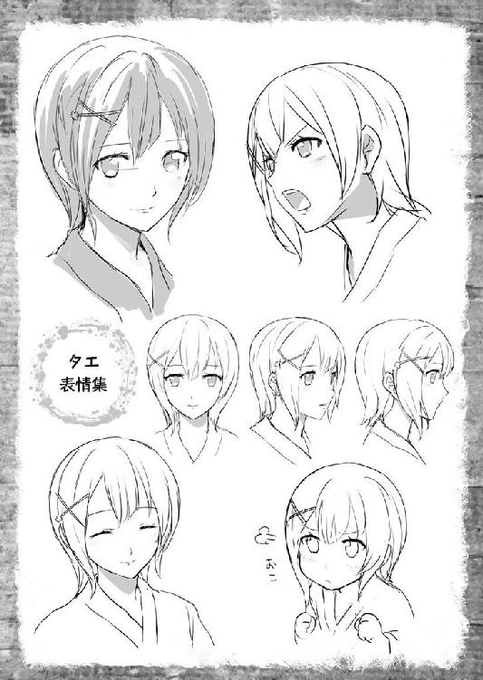
権兵衛の話が終わった時には、東から赤々とした太陽が昇ろうとしていた。
平助のそば屋ですっかり夜明かしをしてしまったわけだが、長い話をしていた権兵衛も、話を聞いていたタエや安宅たちも、徹夜明けとは思えぬ引き締まった顔つきをしている。
「忍の戦は、夜討ちが常道と思っておったが......朝駆けとはな」
まず、安宅が言った。
腰に差した両刀の具合をしっかりと確かめ、緩んだ着物の胸元を合わせる。
「時を置くほど不利になると仰ったのは、安宅様ですよ」
次に、タエ。
昨晩の激闘で使い残した二本の鎌の柄に何かを結びつけている。見ると、それはタエに向けて投げ付けられたあの組紐に良く似たものだった。
「さて、覚悟はいいかタエ。それに、安宅様」
最後は、権兵衛。
腰にはいくつもの〝吠武〟をくくりつけ、手には竹槍。野良着の袖をたすきで縛り、露わになった腕には力が漲っている。
「わたしは、いつでも」
「ここまで来たら、一蓮托生。とうに腹は据えておる」
タエと安宅が、同時に答えた。
よしとうなずいた権兵衛がまず先に立ち、店の暖簾をくぐって表へ出る。タエも安宅もそれに続き、三人の姿が、町屋の屋根にかかった太陽に照らされる。
と、
「権兵衛ちゃん！」
走り寄ってきたお千代が、権兵衛の腕にひしと取り付いた。
「無茶は......無茶だけはダメよ」
そうやって、泣いてすがるのを押しとどめ、権兵衛は言った。
「大丈夫、無駄に命を捨てるような真似はしないさ。それよりお千代さん、頼んでおいたことだけど......」
「ええ、ええ。大丈夫よ。任せてちょうだい。ね？ 平助さん」
大げさに涙を拭いて権兵衛から離れたお千代が、隣についてきた平助を見る。
「ああ。どうぞ三人とも、後のことは心置きなく。元十手持ちの面子に賭けやして、ご期待に応えてみせまさぁ」
平助が、小腰をかがめて三人を見た。
安心して権兵衛がお千代と平助にうなずくと、安宅の手がぽんと肩を叩く。
「一揆だな、権兵衛よ」
「......一揆？」
「おう。苛烈な年貢の取り立てに、農民が反旗を翻すのだ。これを一揆と呼ばずに何と呼ぶ。そうであろう？」
「安宅様はお侍じゃないですか。農民は、俺とタエだけですよ？ たったふたりの一揆なんて、聞いたことがない」
権兵衛は、肩をすくめて笑った。
「そこが痛快なのではないか。成れば、歴史に名が残るぞ」
「俺は、そんなこと望んじゃいませんよ」
「だろうな。ま、その辺はそれがしに任せておけ。悪いようにはせぬよ。その代わり......」
「わかってます、座偉羅のぎやまんも必ず......」
「馬鹿、そんなことではない」
肩にやっていた手を背中に回し、安宅が片目をつぶって権兵衛をどやした。
咳き込んだ権兵衛が一歩前へ足を踏み出したところを、すぐにタエが手を出して支えた。
そんなふたりの様子を、微笑ましそうに見つめた安宅が、
「死ぬな、ということよ。侍も農民も関係ない。短い付き合いではあるが、それがしはお主たちを友と思うておる」
ぐっと権兵衛とタエの肩を抱き寄せて言った。
「安宅様......」
「それがしが戻った時に、どちらか片方でも死んでいたら絶対に許さぬからな。必ず、また生きて会おう」
権兵衛とタエの手が、静かに安宅の背に回る。
互いに無事の再会を約して三人が体を離したところへ、
「ご武運を」
「今度は、権兵衛ちゃんも一緒に飲みましょうね。......それから、おミソちゃんも。恋敵がいないと、アタシも張り合いがないんだから」
平助が三人の前にぱっと清めの酒をまき、背にはお千代が火打ち鎌と石を打ち合わせた切り火が飛んだ。平助とお千代に見送られ、権兵衛たちは一歩を踏み出した。
歩いたのは最初の数歩で、すぐに風を巻いて辻を駆け抜ける。
目指すは、代官所。
権兵衛たちの策はこうだ。まずは代官所になだれ込み、馬を奪う。その馬に安宅を乗せて、一路江戸へ向けて走らせる。安宅の懐には、タエが奪った抜け荷の証文が納まっている。夜通し駆け抜ければ、明日には江戸だ。
残る権兵衛とタエが狙うのは代官の身柄と、そして鬼兜の首である。
あえて朝を選んだのは、夜陰に乗じて忍び込んでの暗殺は最初から警戒されていると権兵衛が読んだからであった。闇を得意とするのは敵も同じというわけで、だったら日の下に引きずり出して、姿を確認しながら戦った方が良いという判断もある。
そこで、タエが言ったように、
「ならば日を改めて敵に策を講じる時間を与えるよりも、一気に突っ込んで乱戦に持ち込む方が良い。時を置けば置くだけ、こちらは不利になる」
安宅からの助言があって、権兵衛がやると決断したのだった。
裏路地を抜けた権兵衛たちは、町の目抜き通りへと出た。余計な回り道をしている時間はない。最短距離を走り抜けて代官所へ。
が、目抜き通りへ出た瞬間に権兵衛たちは異変に気が付いた。
人の姿が、ない。いかに早朝であったとしても、昼夜を問わずにあれほど賑わっていた通りに人っ子ひとりいないなどということは、あり得ない。
まさかという思いが権兵衛の背筋を突き抜けるのと、何かを察知したらしいタエが鎌を放つのが、ほぼ同時だった。
「権兵衛様、安宅様！ 敵が伏せております。お気を付けて！」
タエが投げた紐付きの鎌は、道の脇に積み上げてある「火の用心」と書かれた水桶の陰に潜んでいた人間に突き立った。
首元を押さえて水桶の陰から出てきたのは、鬼哭党の黒装束である。
タエが、鎌に繋がった紐を引き寄せるようにすると、黒装束の首から外れた鎌が弧を描いてタエの手に戻る。黒装束が、どさりと土埃を立てて倒れた。
「敵もさるもの。読まれておったか！」
吠えた安宅が抜刀した。
「タエ、安宅様を守れ！ 一気に抜ける！」
権兵衛も竹槍を構えた頃には、其処此処の辻から、屋根から、壁の隙間から、ぞろりずらりと黒装束が一斉に襲いかかってくる。
権兵衛が、腰から外した〝吠武〟を黒装束の群れの中に放り込んだ。投げた時にはもう導火線に火が付いている。閃光、煙幕と来て次は単純な爆発。巻き込まれた四、五人が悲鳴を上げて吹っ飛んだ。
権兵衛とて、十重二十重に群がる忍を相手に手加減などする余裕は皆無である。一気に抜けると宣言したからには、容赦なくやるしかない。
〝吠武〟で開けた一角に、権兵衛は躍り込んだ。
突く。一瞬で三人の胸を貫き、倒した。それでも、仲間の屍を踏みつけにして迫る新たな黒装束。死した者への同情も哀れみも感じさせぬ冷血さで、更に攻め込んでくる。
そこへ、権兵衛の左右を回り込むように背後からタエの鎌が風を切り、その新手を鮮やかに仕留めた。手元に戻す動きで更にふたりの武器を打ち落とす技術は、まさに神業。
丸腰になって狼狽えたところに、権兵衛の竹槍。そして、安宅の一太刀。
権兵衛を先頭にして自然と一塊になり、互いの死角を補い合いながら一気呵成に攻め抜ける様は、三面六臂の姿で仏法を守護するという阿修羅が顕現したかの如きであった。
進む。
進む。
ただ、突き進む。
やがて見えてくるのは、以前にお千代に連れられて見下ろした代官所の正門だ。
門の前に立つのは黒装束の忍ではなく、樫を削った棒を構えた木っ端役人の門衛である。
「頼もう！」
飛び出した安宅が、門衛に向かって声を張り上げた。
返り血で赤黒く頬を染め、髪振り乱して迫り来る三つの影を、地獄から湧き出てきた亡者とでも見紛うたか、門衛は完全に色を失って眺めている。
本来ならば、厳しく誰何して不審者を近付けさせないようにするのが役目であるのを、息がかかる距離まで安宅が近付いてきてからはじめて、
「な、何用か」
上擦った声で質す始末であった。
「それがしの用は大したことではない。馬を一頭借りに来ただけだ」
「う、馬!?」
「おう、馬だ。こっちのふたりは、一揆だ。一揆を起こしに参った」
「は？」
「と言うか、今もう既に起こしておるな」
「き、気でも触れておるのか？」
勿論、気が触れているわけでも何でもなく、完全に安宅はおちょくっているだけなのだが、そこに気付けと言うのはあまりに酷というものであろう。
だからというわけでもないが、ずいと安宅の横合いから顔を出した権兵衛は、
「ここに鬼兜っていうのがいるだろ。金竹村の権兵衛が会いに来たって言えば通れるようになってるんだとよ。伝えてくれよ」
手っ取り早く門を抜けるに良い方法だと思って口を出したのだが、
「ふ、ふざけておるのか！ そんな話は聞いておらん！」
「くだらんことばかり抜かしおると......し、しょっぴいて牢にぶち込むぞ！」
意に反した答えがすぐに返ってきてしまい、権兵衛は面食らった。
「......おかしいな」
「適当な男だのう、鬼兜という奴は。まぁよい、ではこうするのみだ」
仕方ないと頭をかいた安宅が、抜き身のままぶら下げていた血刀を向かって右側に立つ門衛の喉元に突きつけた。
「な、何をす......」
「お主は余計なことを喋るな。......おい、左の。同輩の命が惜しくば、さっさと奥へ取り次がぬか。この刀についている血は、偽物ではないぞ」
後はもう、力技である。安宅の目に宿る光が、何よりも雄弁に本気であることを伝え、震え上がった門衛が大門の脇にある勝手口を開けて奥へと駆け込む。
「......こんなことをしでかしておいて何だが、意気地のない男だのぉ。こんなのでよく代官所の門衛が務まる」
刀を突きつけた方の門衛は当て身で気を失わせて、安宅が言った。
「もはや、まともなお役人など残っていない証拠ですね」
と、タエも呆れ顔になってうなずいた。
「ともかく、ここまでは手はずどおりだ。あの役人がきちんと上役に取り次げば、鬼兜は必ず出向いてくる。奴の興味は、俺だけだ」
開けっ放しの勝手口をくぐって、権兵衛は言った。門から代官所の玄関までは、白砂と石畳を敷いた回廊のようになっているが、人の気配は感じない。
「では、ここでしばしの別れだの」
静けさの中で、安宅が権兵衛とタエを見る。
「厩の場所は、おわかりなのですか？」
訊ねるタエに「うむ」と応じて、安宅はさっと懐紙で刀を拭いて鞘に納めると、門を入った所に植わっていた松の木に足を掛けてよじ登り、内塀に飛んだ。
「では、これにてご免。必ず、再び見えようぞ」
内塀の上から権兵衛たちに向かって律儀に頭を下げ、安宅の姿が塀の向こうへと消えた。
「いよいよですね、権兵衛様」
タエが言った。
生きるか死ぬかの激闘をくぐり抜け、そしてまた死地に赴かんという時であるのに、その声はいつものように穏やかだった。
「ああ。タエには、最後まで苦労をかけっぱなしだな。許してくれ」
そんなタエの頬に触れ、固まってしまった返り血を指で落としてやりながら、権兵衛もまた穏やかな心持ちで言った。
「無事に生きて帰ったら、これからはちゃんとタエの言うことを聞くよ。だから......」
だからその時は俺と......。
これが最後かもしれぬと、権兵衛は大切なことをタエに伝えようとしたのだが、
「いけません、権兵衛様」
すうっと伸びてきたタエの白い指が、権兵衛の唇をちょんと押さえた。
「できぬ約束などなさる必要はありません。大丈夫です、わたしはもう権兵衛様をお止めしたりしません。あなたが、どんなに無鉄砲なことをなさろうと、わたしは常にあなたのお側におりますから」
「タエ......」
「ですから、できる約束をなさってください」
「何でもいいのか？」
「ええ、何でも」
「なら、約束する。俺も、どんなことがあろうと、一生タエの側にいる。それで、いいか？」
権兵衛の言葉に、タエが朝露を受けた蕾が開くように顔を綻ばせた。
見つめ合うふたりの間を、代官所の屋根から吹き下ろす秋の風が撫でた。
「来やがったなぁ！ 権兵衛ぇ！」
その風に乗って、声が聞こえてきた。
権兵衛は、ゆっくりと振り返った。
「よぉ、権兵衛。久方ぶりだなぁ、元気だったかい？」
玄関に置かれていた、虎の絵の衝立をぬるりと避けて雪駄を突っかけた鬼兜が、石畳を通らずにわざと派手に白砂を蹴立てて近付いてくる。
権兵衛は、そっとタエを自分の背に隠すようにしてから、鬼兜と向かい合った。
鬼兜の肩越しに視線を飛ばすと、衝立の前で口をへの字に結んでこちらを見る男の姿がある。
「代官の黒原直衛です。わたしが別の屋敷に忍び込んだ時に見たのは、鬼哭党の変装でしたが、同じ顔をしています」
ぴったりと権兵衛の背に寄り添ったタエが、耳元で囁いた。
あれが、と権兵衛は改めて代官──黒原を見る。そこへ、
「おいおい、つれねぇじゃねぇの。こんなにおめぇさんに恋い焦がれてる色男が目の前にいるってぇのに、よそ見たぁよぉ」
権兵衛の視界を遮るように、ぬうっと横合いから鬼兜が首を伸ばしてくる。
権兵衛は、黙って鬼兜の肩に手を掛けた。
「お？」
邪魔だ、と言わんばかりに鬼兜の体を権兵衛は脇へ押し退けた。
「お？ お？ 何でぇ、何でぇ」
されるがままに退いた鬼兜が、権兵衛の意図を推し量るように小首を傾げるが、権兵衛は答えない。両目でしっかりと代官の黒原を見据えたまま、そちらに向かって歩いて行く。
それは、無防備な背中を鬼兜に晒すことに他ならないのだが、権兵衛はまるで注意を払っていなかった。タエがいる。
もう少しで代官所の敷居をまたぐというところで、権兵衛は立ち止まった。
そして......。
次の瞬間、権兵衛は体を地に投げ出すようにして、がばと黒原の前にひれ伏した。
「権兵衛様！」
「お？ おおお？」
その場にいた者すべてが、目を疑う光景であった。
「何の真似か」
黒原も、片眉を鋭角に跳ね上げて、初めて相まみえる権兵衛に問うた。
石畳に額を押し付けたまま、権兵衛は声を張り上げた。
「おらは、金竹村の農民で権兵衛と申しますだ。この度は、金竹村の名主、元蔵とその倅三郎。ならびに、村の者すべてに成り代わりまして、お代官様にお願いを聞いていただきたく参ったものでごぜぇます！」
声は、代官の体を突き抜け、薄暗い代官所の奥にわんと響いた。
「わしに願いごとだと」
「へえ！ 金竹村の田でごぜぇますが、今年はことに米が不出来でごぜえます！ お代官様がお決めになった年貢の高では、とてもお納めすることができません。このままでは、村の者は皆飢え死に。次の正月を迎えることもできねぇのでごぜえます！」
「それで？」
「おらたちのお願いごとはひとつ！ どうぞ......どうぞ格別のお情けをもって、金竹村にかかる年貢の石盛を減らしていただきてぇのでごぜぇます！ なにとぞ、なにとぞお聞き届けくだせぇませ、お代官様！」
ごん、と鈍い音がした。
それ以上は頭の下げようがないところを、権兵衛が石畳に額を打ち付けた音だった。
「......ふ、ふははは！ こいつぁ傑作だぜぇ！ 一本取られたなんてもんじゃねぇや！」
鬼兜が、天を仰いで高笑いした。
権兵衛の背後でふわりと風が動くような気配がして、はっと権兵衛は顔を上げた。
と、権兵衛の頭上を高々と飛び越えたらしい鬼兜が、黒原のすぐ脇に片膝を突いている。
「黒原様、我ら鬼哭党の刺客をことごとく退け、この場にたどり着いただけでも、この権兵衛なる者の技量、胆力、まことに天晴れ。十分に黒原様へ陳情をする資格ありと存ずる。ここは、この鬼哭党頭領たる拙者からも、何とぞこの者の願いをお聞き届けいただくよう、切にお願い奉る次第」
またしても、まさかの成り行きであった。
信じられぬ思いで呆然と見守る権兵衛の前で、あの鬼兜が深々と代官に頭を垂れ、権兵衛の口添えをするなどとは。
これには、さしもの黒原もしばし呆気に取られて、文字どおり開いた口が塞がらぬ様子であったが、やがて、
「どいつもこいつも、わしをこけにするか！」
こめかみに太く青筋を立て、血走った目をつり上げた。
「金竹村、権兵衛！ 畏れ多くも上様の名代たるこのわしに対し、駆け込み訴えとはいい度胸じゃ。しかし、直訴は死罪が定法！ 者ども、出会え！ 出会えい！」
地団駄を踏んでの怒鳴り声である。
これに応じ、奥から堤の崩れた暴れ川の勢いで代官子飼いの侍たちが姿を現した。
一体、どこで息を潜めていたものか、あっという間に権兵衛を、タエを、鬼兜をも取り囲む。中には、鉄砲を構えている者もいて、いくつもの銃口が冷たく狙いをつけた。
「......嫌だねぇ、洒落のわかんねぇおっさんってぇのは。粋じゃねぇぜ、こういうのは」
ついさっきまでの引き締まり方はどこへやら、すぐにいつもの調子に声を戻した鬼兜が抗議のような、からかうような声をあげたが、
「黙れ！」
代官は、それも気に入らぬと自ら腰の大刀を抜き放って鬼兜の眼前に切っ先を突きつけたのだった。
「......どういうつもりだい？」
「貴様も同罪ということよ。わしへの直訴は死罪と申した」
「何だとぉ？」
「遊びが過ぎたな、鬼兜」
短く言った代官が、八相に構え直した刀を躊躇なく振り下ろした。
毫の間合いで飛び退き、その一振りをかわした鬼兜であったが、肩に掛けた虎の皮が両断されて宙に舞い、着物の肩口もばっくりと裂けている。
「おいおい......長崎時代の武勇伝は与太じゃねぇってかい」
鬼兜が、引きつった笑いを浮かべた。
黒原の剣は、どう控えめに言っても達人の域。剛剣であった。
「何をぼさっとしておる！ こやつらは狼藉者ぞ。斬れ！ 撃て！」
引く手を見せず、再び八相に戻った代官が配下たちに号した。
味方であるはずの鬼兜に黒原が剣を向けているという状況に泡を食っていたところで、はっと我に返って構え直す。
「権兵衛様！」
タエの声がした。
すぐに反応した権兵衛は、まずつかんだ竹槍を天高く放り投げてから、腰の〝吠武〟を両手にふたつずつ握って左右に放った。大量の白煙と、耳をつんざく轟音とが同時に発生し、取り囲んだ侍たちの目と耳とを塞いだ。
「撃て！ 撃て！」
闇雲な銃声が交錯し、立て続けに悲鳴があがった。
しかしそれは、権兵衛のものでもタエのものでも、まして鬼兜のものでもなかった。
白煙が、ゆっくりと風に散らされて、晴れていく。やがて露わになった光景は、凄惨の一語に尽きるものだった。
権兵衛たちを取り囲んでいた侍たちが、ことごとく倒れている。
タエの鎌から、権兵衛の竹槍から鮮血が滴り落ち、美しい輝きの石畳が、きっちりと箒目の入った白砂を朱に染めた。
「立場も流派も違えど、忍の息は忍が知るってとこかぁ。まったく、恐れ入るぜ」
すっかり白煙が消え去ったところで、勝ち誇った鬼兜の声がした。
権兵衛が声の方をみやると、紅装束をまとったあのくノ一が、背後から黒原の首に短刀を押し当てている。
「三年か......。ま、確かに盗っ人紛いをしてるよりかは面白かったぜ。最後の最後に、一等面白ぇ男にも出会わせてくれたしなぁ」
「おのれ......」
黒原に切られた袖を破り捨て、片肌脱ぎになった鬼兜が、何かに気付いたようにするりと黒原の懐に手を突っ込んだ。
「けどよぉ、オレの遊びを邪魔してくれるんじゃぁ、もう蜜月もしめぇだなぁ。約束事は......〝れぇげる〟は守ってもらわねぇとよぉ」
「や、殺る気か。このわしを？」
「それを決めるのは、オレじゃぁねぇんじゃねぇか？ ま、オレとしちゃあ色々いい目も見せてもらったしよぉ、殺そうとは思わねぇ。お代官様がお代官様としてふんぞり返ってるうちに、手切れ金のひとつもくれりゃあおとなしく消えてやってもいいぜぇ」
鬼兜の手が、黒原の懐から出た。その手に、滑らかな光沢のある拳大の巾着袋が握られているのを、権兵衛ははっきりと見た。
「あれはっ！」
よもやと身を乗り出しかけた権兵衛であったが、直後に起きた異変を目の当たりにして、動きが止まる。不意に、代官の様子がおかしくなったのだ。
鬼兜の手に巾着が渡ったかと思うと、いきなり黒原の全身から力が抜け、武張ったいかり肩が、かっくりと落ちた。
「ほへ......」
と、間抜けな声を出した黒原が、その場で握りしめていた刀を取り落とした。
とろりと酒に酔ったような目に、だらしなく開いた口。その端からは、涎が垂れ流されている。
最初、鬼兜かくノ一が何かの術をかけたのかと権兵衛は疑ったのだが、そうではなさそうだった。なぜなら、鬼兜もくノ一も、明らかに黒原の異変に戸惑っていたからだ。
ことに鬼兜など、
「こいつを取り上げた途端に腑抜けになっちめぇやがった」
取り上げた巾着をしげしげと眺めて首を傾げている。
「......てか、こりゃ一体何なんだ？ オレぁ、どうしてこんなもんを......」
首を傾げたままの鬼兜が、取り上げた巾着を開けて中をのぞき込もうとする。
刹那、権兵衛の手が動き、自分で意識するより早く、最後にひとつだけ残っていた〝吠武〟を鬼兜目がけて投げ付けていた。
あれを鬼兜の手に渡してはならない。
そんな直感が走ったのは、投げた後であったほどだ。
最後の〝吠武〟に仕込まれていたのは、追っ手を足止めするための撒菱（刺がついた忍者道具のひとつで地面に撒いて使う）であった。
本当なら足下を狙うところを曲げて空中で炸裂した〝吠武〟から飛び出した大量の撒菱が、雨あられとなって鬼兜に降り注ぐ。
その内のいくつかが、巾着を握る鬼兜の手を激しく引っ掻いた。
「ちいっ！」
顔をしかめた鬼兜の手から巾着が落ち、板張りの廊下を滑っていく。
「お館様！」
叫んだくノ一が、黒原の体を放り出して鬼兜に駆け寄った。
と、くびきを逃れた黒原が、おぼつかない足取りでふらふらと歩き出す。
「抜け荷......抜け荷の一味を捕らえねば......。皆の者、わしに......」
それも、代官所の外に向かって。
ぶつぶつと口の中で何ごとかをつぶやきながら、足袋はだしのままで血に染まった白砂を踏んで歩いて行くその姿は幽鬼の如きで、この上ない気味の悪さであった。
「タエ！ 代官の方を頼む！」
「紅ぃ！ オレのことなんざいい！ 野郎にゃ聞きてえことができた！ 行かせるな！」
権兵衛と鬼兜が、同時に叫んだ。顔は、どちらもお互いを睨み付けたままだ。
くノ一が、風となって動いた。
タエが地を蹴る気配がした。
権兵衛の背後で、金属同士が激しく噛み合う音が幾度となく鳴り響く。
「悪ぃな、権兵衛。代官の野郎は、事と次第によっちゃぁ、おめぇらにくれてやっても良かったんだけどよぉ」
手の甲から筋となって落ちる血をべろりと舐めとって、鬼兜が権兵衛に歩み寄ってくる。
首、肩、肘、指と順番に節々を鳴らし、ほぐすようにしながら、じっくりと間合いを詰めてくる。
「さて、すぐにおっ始めても構いやしねぇんだが、せっかくこうしてサシでまた話せるんだったら、聞きてぇなぁ。まさか、代官の野郎に土下座だけしにきたわけじゃあるめぇ」
権兵衛と鬼兜の間に横たわる空気と、空間とが、鬼兜の踏み出す一歩ごとに固く、重く押し詰まってくるような感覚が権兵衛を襲った。
「村のみんなと約束した。あれが、俺のけじめだ」
その圧力を切り裂き、逃すように、権兵衛は一度大きくしならせた竹槍を勢いよく振り下ろした。
「それで仁義通したってか？ けっ、一発抜いたみてぇにすっきりした顔しやがってよぉ。本当のところを言えよ。オレと遊びに来たのかい？ オレに尻尾振りに来たのかい？」
あと半歩、それで権兵衛の間合いに入るというぎりぎりの線で、一度鬼兜が立ち止まった。
腰を沈めてばねを溜め、両手の指をかぎ爪のような型に開いて構える。
「......あんたが教えてくれたんだろ。好きなように生きるためにだ」
鬼兜の目線に合わせるように、権兵衛は竹槍の切っ先をわずかに下げた。
「そいつぁいいねぇ。そうさな、人間は自由に、やりてえことやって生きなきゃ意味がねぇってもんだ」
その間にも、権兵衛の背後では凄まじい死闘が繰り広げられている。タエとくノ一が互いに放つ、裂帛の気合いが背筋を焼く。
だが、権兵衛は振り向かなかった。
「......あっちも楽しそうだ。オレも、そろそろ辛抱たまらなくなってきたぜ。前にも言ったっけな、強え奴がてっぺんを取るのが忍の流儀。オレを殺りゃぁよ、少々数は減っちまったが、鬼哭党丸ごとおめぇにくれてやるぜ」
「そんなもの、いらない」
「だったら、何を望む？」
「少しの田んぼと、細工にできる竹が採れるだけの林かな。それともうひとつ、大切な人と過ごす、退屈で変わらない毎日」
権兵衛の言葉に、鬼兜の目がきょとんと丸く見開かれた。
「権兵衛、てめぇ......」
「俺はあんたとは違う。俺はもう、忍じゃない。草でもない。俺は......」
「俺は？」
「農民だ」
最後の半歩を、権兵衛は自らの足で詰めた。
竹槍が、うなった。
すうっと、天に向かって一本の竹が伸びている。
それは、以前に権兵衛が竹林の中心で見つけて、タエに踏まないようにと示したのが健やかに成長した姿だった。
竹の成長は早い。見つけた時にはほんの若芽だったのが、今はもう色青く、節の揃いも申し分ない若竹になっている。手の中に握り込むと、ひやりとした感触とともに吸い付いてくるような心地がした。
「四、五年育てて成熟させてから細工物に使えば、さぞ良いものができそうです。竹槍なぞに使うのが、何やらもったいない気がいたしますなぁ」
権兵衛と共にその竹を見上げ、田吾が笑った。
何か答えようかと思ったが、結局田吾の言葉には答えらしい答えは返さず、権兵衛は話題を変える。
「田吾さん、悪いけど俺の代で技は途絶えるよ。勘弁してくれよな」
「......もう、忍の時代は終わりですか」
「とっくに終わってたんだ。それは、田吾さんだって気付いていたんだろ？」
鉈を手に、権兵衛は言った。その言葉に、田吾が少しだけ息を詰まらせる。
田吾が、天へ伸びる竹から権兵衛へと視線を移し、
「申し訳ありません、権兵衛様。私は、私のわがままで、あなたとタエの未来を縛ってしまっておりました」
長らく胸の奥に溜め込んでいたことを、ゆっくりと、時間をかけて吐き出すように語り始めた。
「仰るとおり、私も本当は気付いていたのです。この先、もう二度と忍として主の命を受けることなどないということに。しかし、私はそれを認めたくなかった......。先代の権兵衛様や、妻がまだ生きていたならば、私にも新たな道へと進む勇気が湧いたのやもしれませんが」
「弦齊様が言ってたよ。田吾作にも、俺の親父にもすまないことをしたかもしれぬって。あの時......共に大陸へ連れて行ってやれば、忍として死なせてやれたかもしれぬってさ」
「弦齊様が......そのようなことを」
「田吾さんが、俺たちにも村のみんなにも内緒で、ずっとあの隠れ里への道を守り続けていたこと、弦齊様は申し訳なく思っていたみたいだった」
権兵衛は、言いながら鉈を打ち込んだ。カン、という澄んだ音が竹林の中を跳ね回る。
「子供だからと連れて行かなかったことが、逆に未来を縛ってしまったのやもしれぬとも言ってた。田吾さんと、同じことを」
鉈を振るう音に、田吾が鼻をすする音が混ざった。権兵衛は、手を止めて田吾を見た。
田吾は、泣いていた。両の目頭を押さえ、嗚咽が漏れそうになるのをぐっと堪えていた。
「かの師ありて、この弟子ということですなぁ」
何とか、それを悟られまいとおどけた声を出して田吾が言った。
「......でも俺は、田吾さんと親父が里を捨てて金竹村に下りてきてくれて良かったと思ってる。ふたりが村で生きることを決めてくれなきゃ、俺もタエも今この世に生まれていないんだから」
「ですが、私はそれ故にあなたを......」
「仕方ないさ。弦齊様の話を聞いて、田吾さんの過去を知ったら、責められやしないよ」
「いえ、権兵衛様。違うのです。私は、一族の技を伝え、忍の道を守るためだけにあなたを縛っていたわけではないのです」
田吾が、急に声を大きくして激しくかぶりを振った。
「田吾さん？」
「私は......私は、本当に自分だけのわがままで、あなたを手元に置いておきたかった。先代が亡くなられてから、あなたの成長を見守る中、私はあなたを本当の息子のように思うようになりました」
「息子......」
「そうです。そして、その息子がいつしか大きくなり、私の手を離れて広い世の中を見たがっているのに気付いていながら、私は素直にそれを受け入れられなかった。私にとって、あなたはいつまでもやんちゃで、未熟で、手が掛かる子供だった。そう思いたかった。あなたが、私の元から巣立っていってしまうのが、たまらなく怖かったのです。だから......だから......私は......」
後はもう、声にならなかった。肩を震わせ、中年男が恥も外聞もなく泣き崩れる。
こんなどうしようもなく、くだらない自分のわがままが権兵衛を縛り、苦しめ、その結果、村を燃やし尽くされてしまう原因を作ってしまった。
腹の底から絞り上げるような田吾の泣き声は、後悔と懺悔の表れに違いなかった。
そんな田吾の内心をしっかりと受け止めて、その上で、権兵衛はそっと田吾の肩を抱き寄せて言った。
「もういい。もういいんだ。俺の方こそ、いつも困らせてばかり......すまなかった。だからもう、顔を上げてくれよ......親父」
親父。
権兵衛は、確かにそう口にした。泣き腫らした田吾の目が、まじまじと権兵衛を見た。
「権兵衛様......」
「様、はもうやめてくれ。だってそうだろ？ 田吾さん......いや、親父は、これから俺の本当の親父になるんだから」
「私が......本当の......」
「そうさ。俺とタエが......その......一緒になったら、そういうことじゃないか。どこの世界に、息子を様付けで呼ぶ親父がいるんだよ」
言って、照れくさそうに権兵衛は鼻の頭をかいた。
「......さ、湿っぽい話はもう終わりだ。ほら、親父も手伝ってくれよ。こいつを切ったら、油抜きをして焼きを入れてやらなきゃ。この一本で、俺は全部にけりを付ける。そして、帰ってくるよ。この村に」
全部にけりを付ける。
そして、必ず生きて帰る。
権兵衛の固い決意を乗せて、竹槍の切っ先が鬼兜に迫る。
対する鬼兜の顔には、これ以上はないという愉悦の笑みが浮かんでいた。
自らの手で師を殺め、同輩を殺めてなお満たされなかった、命を削り合う闘争への渇望。自分が、自分の力だけを存分に恃んで生きることへの渇望。
それを権兵衛の繰り出す一撃、一撃が潤してくれる。何と嬉しいことか。嬉しくてたまらない。そんな笑みだった。
「見違えるようだぜぇ、権兵衛よぉ！ 今度は、オレの読みがどんぴしゃだぁな！ やっぱりあの時、てめぇを殺しちまわねぇで良かったぜぇ！」
権兵衛の攻撃をかいくぐり、鬼兜の右手が下からすくい上げるように権兵衛の胸板を狙った。わずかに上体を反らし、間一髪のところで権兵衛は避ける。
しかし、通り過ぎた風圧だけで、権兵衛の着物が破け、たすきが千切れ飛んだ。
「鎌鼬か！」
「ご名答ぉっ！」
すぐさま、次の一撃が来る。権兵衛の右肩をかすめて通り抜けた鬼兜の右手がくるりと返り、先ほどの軌道を逆になぞるように、今度は逆袈裟で振り下ろされた。
たまらず、権兵衛は大きく後ろへ飛び退いた。
が、それが鬼兜の狙いであった。
返った右手は、権兵衛の肩口を捉えるや否やというところでぴたりと止まり、代わりに腕を畳んで鋭く尖らせた左肘が、一直線の権兵衛の鳩尾（みぞおち）を突こうとする。
権兵衛は、間合いを離すために両足が宙に浮いていた。これでは、踏ん張って堪えることは不可能。肘が突き刺されば、息ができなくなるどころの話ではない。本当の意味で、息の根が止まる。
とっさに、権兵衛は竹槍を自分の体の前に真っ直ぐに立てた。
竹槍で鬼兜の肘を受け止めようとしたのだ。すぐさま、竹槍の真ん中に必殺の肘鉄がめり込む。受けた竹槍が、ぐにゃりと弓なりに大きくたわんだ。
しかし......折れない。持ちこたえる。
木を削って柄とする普通の槍では、こうはいかなかったであろう。
並外れたしなりと強度を持つ金竹村の竹。その中から最上と信ずる一本を選び出し、権兵衛と田吾とが未来への思いを込めて丹精した竹槍だからこその芸当であった。
竹槍は、鬼兜の肘鉄を真っ向から受けきったばかりか、凄まじい反発力で逆に押し返しすらしたのである。
鞠と鞠とがぶつかり合うがごとく、権兵衛と鬼兜の体が空中で大きく離れた。
鬼兜が、両手両足をつかって白砂をつかむような体勢で着地した。その姿は、まさしく血に飢えた肉食の獣そのものだった。
次いで権兵衛、空中で体勢を立て直し、縦にしたままの竹槍の先端を握り、根元を地面に打ち付ける。落下の勢いと権兵衛の体重とを受け、再び竹槍がしなり、元に戻ろうとする。その力を利用し、権兵衛の体が弾丸のように前へ飛んだ。
さっきのお返しとばかりに、肩口から鬼兜に突っ込んでいく。
「うおう！」
さすがにこれは読み切れなかったか、立ち上がった鬼兜が両腕を体の前で×の字に組んで守りに入った。
権兵衛の肩がぶつかり、鈍い音を立てた。受けきれず、衝撃で鬼兜の腕が真上に跳ね上がり、腹ががら空きになる。
「でええあああっ！」
吠えて、権兵衛は左手一本で放さなかった竹槍を手の中で滑らせ、突き込んだ。
「じゃああっ！」
腕を戻した鬼兜が手刀で竹槍を横から打ち、切っ先を逸らす。
横腹の肉をわずかに削いで、竹槍が鬼兜の背後へ抜けた。
権兵衛と鬼兜が、ふたりもつれ合って地に転げる。
すぐさま身を起こし、再び互いの間合いを図って向かい合った。
「竹のしなりで、てめぇ自身を飛ばすたぁ、村上水軍も真っ青だぜぇ。なるほど、単なる槍術じゃねぇ、竹槍術ってかぁ？」
帯を解いて傷口を固く縛った鬼兜が、驚嘆したような声を上げた。
「村上水軍ってなぁ、大昔に瀬戸内の海で暴れた連中よぉ。そいつらは、長ぇ竹竿の先に焙烙玉（手榴弾）を括り付けて、敵の軍船目がけて放り込んだんだとよぉ。ちょうど、今のおめぇみてぇによ。うっはぁ！ オレって物知りだろぉ？」
「そうだなっ！」
鬼兜の肩が、わずかに上下していることを権兵衛は見抜いていた。水軍がどうのという無駄話が、息を整えるための時間稼ぎであるとも看破して、権兵衛は、ここぞと決めて攻め込んだ。
突く。
突く、突く、尚も突く！
疾風怒濤の連続突きで、攻めて攻めて攻めまくる。
「うおおおおっ！」
「何でぇ、ちっと見ねえ間に可愛げがなくなっちまってよぉ！」
舌打ちした鬼兜だったが、ずいと前へ出て、両の手刀を大車輪で回しながら次々と権兵衛の突きを捌いていく。
「まだまだあっ！」
権兵衛は、更に突きの速度を上げた。しかし、同時に鬼兜も回転を上げ何ほどのことかとついてくる。
「おいおい、これじゃ前と同じだぜぇ。ちったぁやるようになったと思えば、やっぱり馬鹿の一つ覚えかよぉ！」
鬼兜が、嘲るように言った。
それでも、権兵衛は突く。
挑発には耳を貸さず、突き続ける。弦齊に授かった教えのままに、権兵衛の体は動き続けた。
「馬鹿の一つ覚え、大いに結構」
田吾と共に丹精した竹槍を携えて隠れ里に戻った権兵衛に、弦齊はそう言って笑ったものだった。
「権兵衛よ、槍の一番の強みはなんじゃ？」
その前に問うた弦齊に、
「そりゃあ......長さを活かして振り回したり、足払いをかけたり......」
権兵衛は答えた。村で鬼兜に敗れたときに言われた言葉が、苦い思いとともにまだ耳にこびりついている。
そうやって前に突っつくばっかりじゃ、槍なんか持たねぇ方がましじゃねぇか......。
そんな権兵衛の答えに、弦齊は小さく首を振って、
「違う。長さを活かすのはまぁ良いとして、突き詰めれば槍の極意は突くこと。これに尽きる。剣にしろ他の武器にしろ、達人と呼ばれる者に共通するのはすべてにおいて動きが小さいことじゃ。見かけばかりの大技ではなく、最小の動きで最大の効果をあげる」
「は、はぁ......」
「その点、槍というやつは良くできておる。突いて、戻す。この動きだけで良いんじゃからの。前に向かってひたすら突く。これじゃよ」
と、鬼兜の言葉を真っ向から否定したのである。
「お前さんのような不器用者は、余計なことを考えるだけ無駄じゃ。下手の考え休むに似たりと言うてな」
それでは勝てなかったと反駁する権兵衛に、弦齊が更に言い聞かせるように続けた。
「当ててやろう、刺してやろうという雑念や殺気が敵に動きを読ませる。無心に突け」
「無心......」
「そうじゃ、ひとつ面白い話をしてやろう」
弦齊が語ったのは、かつて渡った大陸で目にしたという武術家たちの話だった。
彼らは、己の体を用いて戦う武術家でありながら、僧侶でもあるのだという。
彼らは師について修行を始めるとき、まず突きを習う。拳で相手を打つ。最も基本的な攻撃である。
「......ここまでは一緒じゃな。しかし、ここからが凄いぞ。彼らは、ひたすら毎日その突きだけを鍛錬する。繰り返し、繰り返しじゃ」
それを彼らは、僧である自分の身に重ねて、功を積むのだと言う。積んだ功を実らせるために、中には十年以上他の技には目もくれず、突きだけを鍛錬し続ける。
「するとどうじゃ。無心の境地に達し、功実らせた者の突きはな、絶対に避けられぬというのじゃ。そして、一打必倒、避けられぬ突きを一発当てればそれで勝負がつくというところまで己を高めるのよ」
「......その境地に至るまで、俺も鍛えなければいけないのですか」
気の遠くなるような話に、目眩がするような思いで権兵衛は訊ねた。
が、弦齊は、
「まぁ、そりゃ無理じゃろうな。何日か修行したぐらいで功が実るのじゃったら、世の中は達人だらけになってしまうわ」
あっさりと言い放つのであった。
「それじゃあ、どうしたら......」
「まぁ待て。お前さんの良くないところは、その気の短さじゃ。話は最後まで聞け。お前さんがすべきはな、一〇日ばかりで一から功を実らせることではない。田吾作やタエと共に積んできたものにもう少しだけ上乗せし、ちょっと花を開かせることじゃ」
「積んできたもの？」
「言うたろう。嫌々でもなんでも、田吾作に鍛えられて修練を重ねてきたお前さんの技は、本当のところ大したものよ。だから、後は黙って己の積んだ功を信じて突け」
言いながら、弦齊は手にした杖で権兵衛の体をちょんちょんと突っついてきた。
それから、何も教えめいたことは口にせず、黙って権兵衛を突っつき続けるのである。
別に痛くもないので、最初は何やら思惑があるのかと、されるがままになっていた権兵衛であったが、それが半刻もずっと続くとさすがに嫌気がさしてきて、
「弦齊様、いい加減に......」
と、声を荒らげてしまったのだが、そこへ一発、これまでとは違う鋭い突きが飛んできて、権兵衛の胸を打った。
不意のことで、為す術もなく尻餅をついた権兵衛に向かって、弦齊は、にいっといたずらっぽく笑って言った。
「......ワシなりの突きの極意、伝えたぞ」
「あっ......」
「ま、信じると言うても限度がある。お前さんが一〇年功を積んでいても、さすがに一打必倒の境地に至っているかどうかは怪しいもんじゃ。しかしな、だからと言って積んだ功そのものが朝靄のごとく消えてしまうわけではない。だったら、突け。突き続けるのじゃ」
「前へ？」
「そう、前へじゃ。一〇発届かなくとも、一一発目。一〇〇発避けられるとも、一〇一発目に相手が折れればめっけもんと心得よ。大事なのは、自分が無心であること。気持ちだけでも、突きひとつを羅漢（厳しい修行を経て悟りに近付いた高僧）になったつもりで繰り出せ。殺意なく、邪念もなく、百でも五百でも」
「ご、五百！」
「五百羅漢と言うじゃろうが。で、竹槍だけに、破竹の勢いで五百発。......そうじゃな、名付けて、奥義・破竹五百天とでもいったところかの」
殺意なく、邪念もなく、無心に。
一〇発届かなくとも、一一発目。一〇〇発避けられるとも、一〇一発目。
積んだ功を信じ、ひたすらに。
竹槍を繰り出しながら、権兵衛の頭の中は真っ白に染まっていく。
それは、最初に鬼兜と対峙し、怒りに我を忘れた時とはまるで別のものであった。
やがてその白さすら頭の中から消え去り、空となる。
そして、ついにその時は来た。
「てめぇ、いい加減に！」
振り下ろされた鬼兜の手刀が、はじめて空を切った。
「なに......」
権兵衛の竹槍が、鬼兜の肩口をかすった。
「野郎！」
次こそはと払った手も、再び竹槍を捉え損ねて空振った。
同時に、太ももの外を竹槍がかすめる。
「こっちか！」
いや、違う。腹への攻撃と踏んで振っても、またまるで見当違い。鬼兜の左耳から、鮮血が散った。なぜだ、わからぬ。鬼兜が、仕切り直すつもりかついに一歩退いた。ならばと、権兵衛は詰めるのみ。
これまで確実に突きを捌き、払い続けていた鬼兜の手刀であったが、それが一〇に四つは空を切るようになり、その度に新たな傷口が鬼兜を血で濡らす。
一〇に四つが、五つになり、六つになり、増える傷口は次第に深く、大きく。
「ば、馬鹿な......読めねぇ......」
七つ、八つ。
「ふ、ふざけ......」
九つ。
「ふざけんじゃねぇぞぉ！」
いつしか全身を血に染めた鬼兜が、よろよろと下がる。下がり続ける。獣そのものであった気勢は、もはや見る影もない。
それを見た権兵衛の目に、炎が灯った。
これが、最後。
永遠無限に続けるかの連続突きで、権兵衛の体力も限界に近付いている。残ったすべて、ありったけを爆発させ、権兵衛は叫んだ。
「我が功、実ったり！ 奥義！ 破竹五百天！」
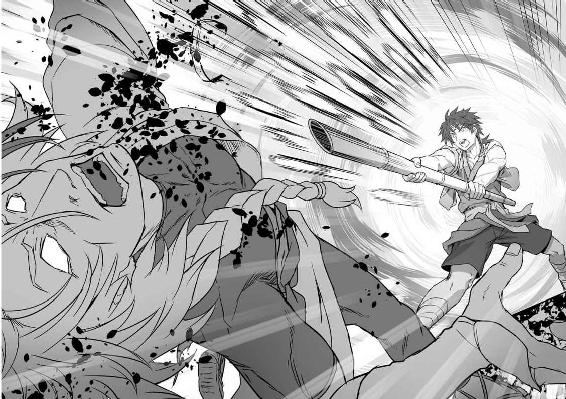
体全体で捻り込んだ渾身の一撃が、鬼兜の左胸を深々と突き破り、白砂の上に大の字にどうっと倒した。
「くそがあああっ！」
大量の血と、絶叫が鬼兜の口から噴き出した。
と、
「お館様っ！」
権兵衛の背後から、また別の叫びが響く。
権兵衛が振り返ると、髪を振り乱し、怒りに満ち満ちた般若の形相となった紅装束のくノ一が、権兵衛のもうすぐ眼前に迫っている。
くノ一の手に閃く短刀が、権兵衛の喉元に伸びた。が、未だ権兵衛の竹槍は鬼兜の胸に突き立ったままであった。
急ぎ引き抜いたが、
「よくも兜丸様を！」
構えを取る時間はない。せめてもの抵抗に、腕一本で急所だけでも守ろうとした、その時だった。
短刀を持ったくノ一の手首に、横合いから飛んできた一本の組紐が巻き付いた。紐の先には、鎌。紐が締まる勢いで、その鎌の刃がくノ一の手に突き刺さり、次いでぐらりとくノ一の体が傾いだ。
「こ、この術は！」
かっと目を見開いたくノ一が、手首の組紐を見る。
「......そう、傀儡の術」
タエの声がした。ぴんと張った組紐に操られるままに、くノ一が権兵衛から引きはがされ、短刀があらぬ方向へ放り投げられる。
「タエ......助かっ......」
「まだです！ 権兵衛様、後ろ！」
九死に一生を得たりというところで、ほっと息を吐きかけた権兵衛を、タエの鋭い声が打った。
ぞわりと背筋が凍り付き、もう一度権兵衛は倒れた鬼兜の方へ向き直る。
左胸にぼっかりと大穴が空いているのにもかかわらず、鬼兜が想像を絶する底力で上半身を起こしていた。
これ以上、何をしようと言うのか。既に勝負はついた。
そう、声を掛けようとした権兵衛であったが、凍り付いた背筋は未だ溶けない。まだ、ある。鬼兜は、勝負を投げてはいない。
鬼兜の右手が、腰の後ろへと回っている。
それを見た権兵衛が、抜いた竹槍を投げ付けるのと、鬼兜が腰に回した手を引き抜くのが、ほぼ同時だった。
「舶来品の短筒よ。蘭語で言うとな、〝ぴすとぅる〟ってんだ」
冷たく光る短筒の銃口が権兵衛に狙いをつける。
その狙いが定まるより早く、ほんの一瞬だけ、瞬きの万分の一だけ早く、権兵衛の投げた竹槍の先端が、短筒の銃口にすっぽりとはまった。
銃声。
鬼兜にはもう、大した重さもない竹槍を支えて短筒を構えるだけの力も残ってはいなかった。構えた銃口が大きく流れる。
放たれた弾丸は、中が空洞である竹槍の中を突き進み、節を砕きながら、最後には竹槍の根元から外へと飛び出した。
その先にいたのは......タエの仕掛けた傀儡の術で身動きを封じられたくノ一であった。 吸い込まれるように、弾丸がくノ一の眉間を撃ち抜いた。
断末魔の声すらあげることなく、くノ一が事切れ、倒れた。
「何でぇ......」
本当に万策尽き果て、鬼兜の手が地面に落ちた。
「地獄まで付き合おうってぇのか......しょうがねぇ......女だな......。えぇ？ 紅よぉ......」
「鬼兜......」
権兵衛の声を受け、命の残滓を燃やし、鬼兜の目がわずかに動いた。
「何でも......面白がって......奥の手を見せる......もんじゃねぇなぁ」
「鬼兜！」
「でもまぁ......楽しかったぜぇ。この......続きは......ま......た......」
それが、最期だった。鬼兜の目から、光が消えた。
「終わった......よな」
精も根も尽き果てて、権兵衛は小さくつぶやいた。
「権兵衛様！」
鎌を投げ捨てたタエが、だっと権兵衛に駆け寄って、
「本当に権兵衛様は、いつもいつも！ 四度目ですよ！ 次はなかったんですよ！」
しゃくり上げるような声で権兵衛をなじった。
「わかった。わかったから。もういいだろ」
「ですから、そういうことではありません」
いつものように権兵衛は言った。
いつものようにタエがたしなめた。
いつもと違ったのは、タエの手が力一杯に権兵衛の体を抱き締めている、というところだった。
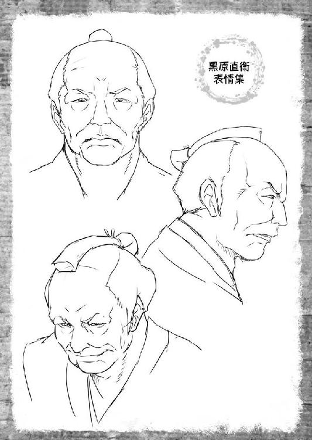
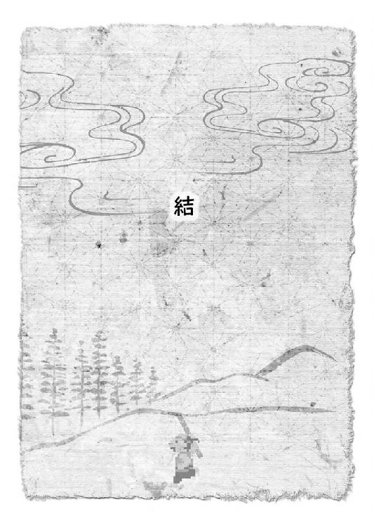
町の目抜き通りの南端、もう一歩で江戸へ繋がる街道へ出るというところに、権兵衛とタエ、無事に江戸へ証文を届けて戻った安宅、そして世話になった町の人々が集まっていた。
「では、安宅様。よろしくお願いします」
結び紐のかかった漆塗りの小箱を手渡し、権兵衛は言った。
「......中は？」
見たのか？ と、問いかける安宅に、権兵衛は静かに首を振った。
ただ、中にあるものが何かは知っている。
それは、鬼兜が黒原の懐からつかみ出したあの巾着袋に包まれていたもの。〝座偉羅のぎやまん〟と呼ばれるものだ。
「かつて弦齊様は、大陸でこれを見てしまった時に恐ろしい体験をしたと。自分の心の中に別の誰かが入り込み、囁くのだそうです。己の欲望を解き放て。我に力を与えよ。さすれば、汝に永遠を授けよう......と」
「永遠？ どういう意味だ？」
「わかりません。弦齊様は気力を振り絞って声に抗い、逃れたそうですが......その声は、今でも時折聞こえてくるのだとか。その度に、自分の中に真っ黒な闇が広がると。その闇に飲まれた時、自分が何をするのかわからぬと、それで弦齊様は人の世を捨てて山に隠遁する道を選んだのだとか」
「そうであったか。では、やはり黒原は長崎でこれを目にして......」
受け取った小箱を、振り分け荷物の行李（竹などで作られた箱のこと）に収めて安宅が言った。
「あいわかった。とにかく、それがしが責任を持って上役に事情を話し、二度とこれが世に放たれることのないよう取りはからおう」
「取りはからうと言えば......」
と、間に入ってきたのは、お千代であった。
「代官のお裁きはどうなるのかしら？ やっぱり、死罪なの？」
「それが......まだ定まらぬ」
申し訳なさそうに安宅が答えた。
権兵衛が鬼兜と雌雄を決する直前、ふらふらとどこかへ歩き去ってしまった代官が発見されたのは、なんと町の中だったと言う。
しかも、見つけたのは元岡っ引きの平助やお千代たちであった。
平助とお千代は、死地に赴く権兵衛たちの頼みを受けて、心ある町の人々に決起を呼びかけて回っているところだった。
黒原の悪行を記した証拠の品を江戸へと届けてくれる者がいる。鬼哭党と、命がけで戦おうとする者たちがいる。今こそ、我らも立ち上がろうじゃないか。
その呼びかけに両替商の三橋屋がいの一番に答え、それから次々と賛同者が現れ、旗を掲げて代官所に乗り込もうとなったその矢先、鬼哭党の黒装束たちが転がる目抜き通りをひょこひょこ歩く黒原を見つけたのだった。
しかし、どうにも様子がおかしい。
抵抗するでもなく、あっさりと平助たちに捕らえられた黒原は、開口一番、
「ここはどこだ？ 長崎ではないようだが......わしは一体、何をしていたのだ？」
そう言い放った。
「......何しろ、ここ五年分の記憶がすっぽりと抜け落ちておって、自分が何をしたのかまるで覚えていないと言うのだ。にわかには信じがたい話であるが、とても嘘をついておるようには見えん。とにかく、詳しいお調べとお沙汰は、江戸へ連れ帰ってから南町奉行所の町奉行が音頭を取って、評定所預かりということになった」
安宅が言った。
「では、そちらは江戸のお奉行様にお任せするとして......新しいお代官様はいついらっしゃるんで？ 鬼哭党の連中が散り散りになったとはいえ、まだまだ町にゃぁ危なっかしいのが山ほど居座ってやがるんです」
今度は、平助が訊ねた。
「農民さんたちも困ってるのは変わらないわよ。無法に取り上げられた年貢もまだ返ってないし、無理矢理働かされていた人たちもまだ動けずに町にいるわ」
お千代が乗っかる。
「安心せい。すぐに来る。今度の代官は、上様からの信任が大層厚い、その南町奉行直々の推挙で任じられた方。今頃、大急ぎでこちらへ向かっておろう」
ふたりの訴えに安宅がしっかりと請け合い、それまではと、平助を見た。
「町の平和は、お主の双肩に掛かっているというわけだ。しっかり頼むぞ」
平助の腰帯には、ぴかぴかに磨き上げられた十手が誇らしそうに差してある。
へい、と平助が小腰をかがめた。
「お千代もな。皆と協力して、傷ついた農民たちを世話してやってくれ」
「乗りかかった船だしね。旅籠の女将さんも、あちこち泊まる所の手配に走り回ってくれてるし、アタシだけ知らんぷりもできないわ。任せてくださいな」
お千代が、また腰をくねらせて安宅の袖をちょいとつついた。
「どうやら、これでもう心配事はなさそうですね」
皆の顔を見渡し、朗らかな声でタエが笑った。
「そうだな。それじゃ、お千代さん。平助さん。安宅様。俺たちも、そろそろ行きます。村のみんなが待ってるんで」
タエの声にうなずいて、権兵衛は言った。
「皆さん、お世話になりました」
タエが、ぺこりと行儀良く頭を下げた。
「安宅様も、江戸への道中お気を付けて」
「かたじけない。それがしの方こそ、本当に世話になった。お主と権兵衛の祝言を見届けてやれぬのが残念だが......いずれまた必ず会おう」
真面目な顔で安宅が言い、「そうですね」と何気なく応じたところで、急にタエの頬が真っ赤に染まった。
「......って、し、祝言なんて......。そ、それはまだ先で......」
両手で頬を覆ってしまったタエに、どっと笑いが起こったのだが、
「何よ何よ！ まだ先ってことは、いずれするってことじゃないの！ ......やっぱり、そうなる前にアタシが権兵衛ちゃんを......」
お千代だけが、ぷりぷりとむくれて、権兵衛の袖をつかもうとする。
「い、いやっ！ お千代さん！ それは......」
「何なら、アタシも権兵衛ちゃんたちの村に行ってさ。......ねえ、権兵衛ちゃぁん」
「そりゃいいや。おめぇの馬鹿力だったら、村の家を普請し直す時に大層役に立つだろうぜ。行け行け、行っちまえ」
ぐるぐると追いかけっこをする権兵衛とお千代のやり取りを平助が混ぜっ返し、またも盛大な笑い声が、晴れ渡った秋空の下に響き渡るのだった。
「......ふふ、気持ちの良い連中であったなぁ」
募るばかりの名残惜しさにやっと踏ん切りをつけ、いざさらばと別れてから二日、街道脇で見つけた地蔵堂の軒先を借りて休んでいた安宅は、別れ際のやり取りをもう遠く懐かしい思い出のように振り返っていた。
あの秋晴れから一転し、今はしとしとと雨が降りそぼっている。
安宅は濡れた荷物を脇に降ろし、手拭いで行李についた雫を拭き取った。
と、不意に、誰かが自分を呼んだような気がした。
顔を上げて周囲を見渡しても、誰もいない。そろそろ暮れ時の街道を行くのは、安宅ひとりだけである。
気のせいか、と再び荷物に手を伸ばした時だった。
「まぁ、お主の言うとおり、連中のおかげで俺の役目も無事に果たせた。感謝せねばなるまいな。これで江戸へ戻れば、お家の再興は元より、裏の事情を知る方々に取り入って更なる出世栄達も見えてこようと......」
自分の口から唐突に飛び出てきた言葉に驚き、安宅は口を手で覆った。
自分は一体何を言おうと......。
お主？ お主とは誰だ？ ここには、自分しかいないのに。
自問する安宅に、再び誰かが呼びかけたような気がした。
安宅の目が宙をさまよい、そして、ある一点で止まる。
今、雫を拭き取っていた行李である。
自分を呼ぶ声とは別に、権兵衛の声が脳裏に蘇ってきた。
「......自分の心の中に別の誰かが入り込み、囁くのだそうです」
確かめるべきであろうか？
再び安宅は自問した。
やめておけ。単なる気のせいだ。何も聞こえてなどいない......そう訴える自分がいる。
だが、その訴えとは裏腹に、安宅の手は行李に伸びようとしていた。
次第に、頭がぼうっとしてくる。やめろと訴える声が遠ざかり、代わりに安宅の胸に湧き上がってくるのは、確かめたいという小さな欲望。いや、欲望とも言えぬほんのささやかな、ちょっとした好奇心のような何か。
確かめるだけだ。江戸へ持ち帰る前に万一のことがあってはいけない。そこにそれがあることだけを確かめる。それで終わりだ。行李の中も雨に濡れているかもしれない。そう言えば、中には煙草と煙管も入っていた。秋の夜は長い。どうせ今夜はこの地蔵堂で夜を明かす。その時に湿った煙草では虫の音を楽しみながらの一服もままならない。だからこうりをあけてなかのたばこがぶじかどうかをすこしたしかめたらそれでおしま......。
「えーそれでは、どうもおらたち農民の流儀じゃねぇが、一応、権べもタエちゃんも、実は苗字のおありなさるご身分だったということでー」
既に少々酔いの回った声で、三郎が口上を発した。
そこへすぐに、
「長ぇ！ もういい加減に待ちくたびれたど。さっさとやってけれ」
やはり酔った威勢の声で誰かの茶々が入る。
「黙っとけ。おらぁ、親父の後を継いで新しい村の名主としてだなぁ」
「いいからやれっつーに。このままだと、田吾さが大事なところ見る前に酔いつぶれっちまうど！」
「わかった！ わーかった！ えー、ではこれより金竹村の権べ。同じく金竹村のおタエに、夫婦固めの杯を交わしてもらうで、皆の衆、大いに祝って......田吾さ！ こっち向くだ！ おい、誰か田吾さから徳利取り上げろ！」
まったく、てんやわんやであった。
集まった者たちが、男も女も大方出来上がってしまっている中、まだしらふのままなのは、満座の中央にちょんと並んで座った権兵衛とタエだけという有様である。
あの死闘から、早一年が過ぎていた。
村に戻った権兵衛とタエは、生き残った村人たちと共に村の再興を誓い合い、今日まで汗を流してきた。
多くの命が失われた。生き残った者の大半は権兵衛に好意的ではあったが、中には権兵衛をなじり、怒りをぶつける者もいた。
それでも、悪いことばかりではなかった。
同じように黒原の圧政に苦しめられ、滅びる寸前だった近くの村の者たちが、新たに着任した代官の計らいで金竹村の新たな仲間として迎えられたりもした。
権兵衛は、その新たな仲間と以前からの村人たちが共に手を携えてゆけるように、ただひたすらに尽力した。
権兵衛をなじった者たちも、そんな権兵衛のひたむきな姿に心を開き、ひとりまたひとりと和解していったのである。
本当に、瞬く間の一年だった。
燃えた家々を建て直し、また新しく田を広げ、畑を開き、共に収穫を喜び合い、そして今日を迎えた。
権兵衛とタエの、祝言の日である。
どうにか三郎の前口上も無事に終わり、花嫁の父として朝からもう涙、涙で飲み続けていた田吾をなだめすかし、この時ばかりは厳粛な雰囲気に包まれた村の集会場で、皆が見守る中で権兵衛とタエは杯を交わした。
杯に注がれた酒は、こちらももうすっかり平和を取り戻し、元の正しい活気に満ちているという真岡の町から平助やお千代の名で送られた酒である。
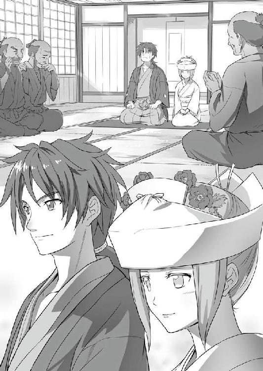
まずはタエが三度、杯に口をつける。
次に権兵衛が三度。
最後に、またタエが三度とやって、儀式は滞りなく終わった。
権兵衛、タエ、ともに一八。互いに年頃の、絵に描いたような若夫婦の誕生であった。
後はもう、飲めや歌えの大宴会である。
誰もが笑顔、笑顔であった。
昼に始まった宴会は、日が落ちてもまだ続き、さすがにあちらこちらで酔いつぶれた者たちの高いびきが聞こえてきて、そろそろお開きになろうかという時、唐突に事件は起こった。
「さ、おっ父。もうそろそろおしまいですよ。家に帰りましょう」
「しっかりしてくれよ、親父。明日は、弦齊様に報告に行くんだろ」
徳利を抱えたまま眠り込んでしまった田吾を、優しくタエが揺り起こしていると、入口の戸に何かがぶつかるような大きな音がした。
「誰か酔ってひっくり返ったかぁ？」
その物音を聞いて目を覚ましたのが何人かいたほどである。
「見てくる」
田吾のことはタエに任せ、権兵衛が戸に近付き、
「誰かいるのか？」
声を掛けて戸を引いた。
と、支えを失って転がり込んできたのは、旅姿の若い男であった。村の者ではない。
しかも、全身に傷を負って今にも息絶えそうではないか。
「おい！ どうした！ しっかりしろ！」
一瞬で集会場が騒然となる中、権兵衛はその男を抱え起こした。権兵衛の声を受け、閉じかけていた男の目がわずかに開く。
「か、金竹村は......ここ......」
「そうだ！ ここが金竹村だ！ 待ってろ、今手当をしてやる！ 気をしっかり持て！」
「も、真岡の町で......そ、そば屋の旦那にき......聞いただ」
「そば屋？ 平助さんのことか？ 聞いたって、何を聞いた！」
本当なら喋らせない方がいい深手を負っていたが、権兵衛は男の気力を持たせるためにあえて大声で訊ねた。
既に村人のひとりが、名主を継いだ三郎の家に手当の道具を取りに走っている。
「こ、ここに......たったふたりで一揆を起こして......悪い代官をやっつけた......すげぇ村人がいるって......。お、おらぁ......その人に会いに......」
「俺だ！ 俺がその村人だ！ 権兵衛っていう！ あんたの名は！」
「おらぁ......じ、上州（今の群馬県）端野辺村......万作......。ど、どうか......おねげぇだ......おらの村を......助け......」
そこまでを言って、万作と名乗った男は力尽きた。
「くっ」
唇を噛んだ権兵衛は、やり切れぬ悔しさを堪えて万作の体を横たえた。
「上州......端野辺村......」
万作の最期の言葉を口の中で繰り返し、権兵衛は万作に手を合わせて立ち上がった。
行かねばならぬ。激しい使命感が、権兵衛を突き動かした。
「タエ......」
その思いを花嫁に伝え、詫びねばならぬと振り向いた時、もうそこには婚礼の衣装を脱ぎ捨てたタエが静かに佇んでいる。
「夜のうちに発てば、わたしたちの足なら急げば朝には山を越えて上州に入れます」
わたしたち、とタエは言った。
そこに秘められた確固たる決意を翻させるだけの言葉を、権兵衛は持ち合わせていない。
「タエ、旅の支度だ」
だからひと言、権兵衛はタエが望んでいるはずの言葉をかけた。
「はい、権兵衛様」
タエが、こくりとうなずいた。と、すぐに何かに気付いたように、
「はい。......あなた」
少しだけはにかんだ声で言い直し、花の開くような微笑みを権兵衛に向けるのだった。
（了）
あとがき
その日もいつものようにビールを勧められるのを断り、いつものように別件のあっちについて編集長と打ち合わせをして、さて帰ろうかという頃、編集のＭさんがスタスタと僕に向かって歩いてきて、言いました。
「すいません、あのぅ......『いっき』ってご存知ですか？ ファミコンの」
何を藪から棒にと思いつつ、
「知ってますよ。昔、友達んちでめちゃ遊びました。クリアできませんでしたけど」
などと答えたのですが、次の瞬間に耳を疑いました。
「サン電子さんに許可もらったんで、ノベライズしてもらいたいんですよね」
......な、何言ってるのこの人ー!?
「ノベライズって......『いっき』の？」
「はい」
「僕がっすか？」
「はい」
「マジで言ってるんです？ もしかして酔っ払ってます？（超失礼）」
「いや、マジです。本当に。『いっき』書いてください！」
『いっき』書いてください。凄いセリフです。これには、やっぱりあっちの打ち合わせでご一緒していたうりも先生も絶句ですよ。
ところが、Ｍさんのマジな暴走は止まりません。
「できれば、イラストはうりも先生でお願いできないかと」
ここまで聞いた時、僕は思いました。やっぱり、この編集部はどっか違うぞと。それが良い意味でか悪い意味でかはともかくとして。
やっぱねー、前から何か変だと思ってたんですよ。二階のオフィスで真面目な書籍作ってる人たち、みーんなスーツなのに、この部署の人たち全員めっちゃラフな私服だし。
営業の若いお兄さん、なぜか編集部ブログに自分で作ったお料理アップしてるし。
どーも普通の会社じゃないなー、みたいな。
で、ついでに、
「ご指名とあらば、やりますよ！ ね？ うりも先生」
「え？ ああ......うん」
その場のノリでＯＫしちゃった僕も、うりも先生も普通じゃなくなってたんです。おかしくなってたんです。きっと。
桜ノ杜ぶんこの編集部には、何かそういう変な磁場というか魔力みたいなもんがあります。これ、確かに。
そんなわけで、本作『いっき LEGEND OF TAKEYARI MASTER』の企画は本格的に動き出したのですが......凄く、すごーく大変でした。正直。
何せ渡された資料は、Wｉｉのバーチャルコンソール紹介サイトに載っていた原作ゲーム『いっき』のページをプリントアウトしたもののみ！
「ほ、他には？」
「ありません！」
「ほらなんか、サン電子さんの社内に残ってる開発資料とか。裏設定集とか......」
「ありません！ ......三〇年近く前のゲームですよ？」
ですよって、それでどうしろと仰るの？
最初は、途方に暮れました。でも、ずっと途方に暮れててもしょうがないので、版元であるサン電子様の「自由にやっていただいて結構です」というお言葉を信じ、開き直ることにしました。
どうせなら、とことんやってやろうと。
と言うのは、以前からその筋のゲームが好きな人たちの間で語られていた原作ゲームにおける、いわゆる「ツッコミどころ」に、できる限り自分なりの答えを考えてみようということです。
どうして、たったふたりで一揆なの？ どうして、一揆なのに敵は忍者なの？ どうして、謎のホーミング鎌を投げられるの？ どうして、竹槍を取ったら前にしか攻撃しないの？ どうして、フィールドに小判が落ちてるの？ どうして、いきなり仙人が放り投げるお握りゲットすんの？ どうして、ラスボスのはずの代官が町の中ふらふら歩いてるの？ どうして、どうして......。
数え上げたらキリがないんですが、できる限り、全力でそんなツッコミに答えを付けたつもりです。今は、読んで下さった読者の皆さんが、僕のこの「答え」をどういう風に受け止めて下さるのか、怖い半分、楽しみ半分な気持ちでいます。アンケートハガキ、待ってます！ もじ文字はずかしおりももらえるから！（......前も書いたな）
さて、今回も執筆にあたりまして色々な方にお世話になりました。
まずは僕の妙なチャレンジを大らかな心で許してくださった、サン電子の担当様。
こんな小説書いたことねーから無理だよーと、途中で何度も泣きを入れる僕を叱咤激励してくださった編集Ｍさん。Ｍさんの褒め殺し作戦は、胸に刺さります（笑）。
あっちだけでなく今回も僕とのコンビで、素晴らしい表紙と挿絵を描いてくれたうりも先生。今回は、キャラクターデザインもしなければならず、大変だったと思います。
更にひとつ付け加えますと、ＰＶに登場し、本編でもクライマックスのシーンで権兵衛が放つ必殺技、破竹五百天のネーミングは、うりも先生が考えてくれたものであります。
「竹槍で敵を倒すと、五百点入るから」
という素晴らしい理由つきで。
企画段階から色々とアイディアやアドバイスをいただきました、作家の加納京太先生。また一緒に、うお鐵で刺身食べましょう。
デザイン、装丁、プロモーションを担当してくださった桜ノ杜ぶんこ編集部スタッフの皆様。本当にギリギリの進行になってしまってすみませんでした。ＰＶ、凄く燃えました。
ちゃんと家事やりますと約束したのに原稿の後半戦になると約束守れませんでした。それでもニコニコ笑って、美味しい晩ご飯作ってくれて、応援し続けてくれた僕の大切なかみさん。結婚してから初めての大きな仕事となったこの本を、タエちゃんと共あなたに捧げたいと思います（恥ずかしながら新婚なんです。てへ）。
そして、最後までお付き合いくださった読者の皆様も含めまして、本作に関わったすべての方々に厚く御礼申し上げます。どうもありがとうございました。
平成二五年 六月某日 おかず
......。
............。
ああ、そうだ。大事なこと言い忘れてました。このお話、原作ゲームにはない追加部分がいくつかありましたね。
ぎやまんがどうとかこうとか。永遠があーだこーだとか。吠える武と書いて、〝ボン〟がなんだらかんだらとか......。
じゃ、投げっ放しでなんなんですが、僕は一抜けしますんで、加納先生、後のことはよろしくお願いしまーす！ 楽しみに待ってまーす！
おかず
まいにち テレビあさ○ で さいほうそう している じだいげき が この おはなし を かく さいこう の おてほん に なってくれました。
２８ねん の とき を こえて かたりつがれる でんせつ の しんじつ を ぜひ たしかめて ください。
いっき
-LEGEND OF TAKEYARI MASTER-
電子版発行 ２０１４年４月５日
著 者 おかず
発行者 辻 信幸
発行所 株式会社一二三書房
〒１０２─００７２
東京都千代田区飯田橋２─14─２ 雄邦ビル
電話 ０３─３２６５─１８８１
イラスト うりも
©HIFUMI SHOBO
©SUNSOFT
本書の無断複製（コピー）は、著作権上の例外を除き、禁じられています。
●本書は『いっき』（２０１３年７月20日 初版第１刷）に基づいて制作されました。